Realm of AdAstra
Oyun Rehberi
Krallığını nasıl kuracağını, hammaddeyi nasıl paraya çevireceğini, ordunu nasıl büyüteceğini ve ASTRA'nın nereye gidip nereden geldiğini baştan sona, günlük dille anlatıyoruz. Ekonominin bütün sayıları ve formülleri (seviye ve silo bedelleri, günlük/haftalık limitler, çekim kuralları) sayfanın sonundaki Teknik başvuru bölümlerindedir.
Soldaki içindekiler listesinden istediğin bölüme atlayabilirsin; üstteki kutuya bir kelime yazarsan (örneğin silo, bot, kasa) yalnızca o kelimenin geçtiği bölümler kalır. Resimlere dokunursan büyür. Gösterilen sayılar gelişmiş bir deneme hesabından alınmıştır; senin ekranındaki sayılar farklı olabilir, mantık aynıdır. Sayıların ve formüllerin tamamını merak ediyorsan Teknik başvuru bölümlerine bak: her bedel ve limit orada, oyunun ayar dosyasından üretilmiş olarak yazılıdır.
Realm of AdAstra nedir?
Tarayıcıda oynanan, krallık kurma ve strateji oyunu. Hammadde toplarsın, onu satar ya da işlersin, ordu kurarsın, zindanlarda ve arenalarda savaşırsın. Hepsinin ortak parası ASTRA'dır.
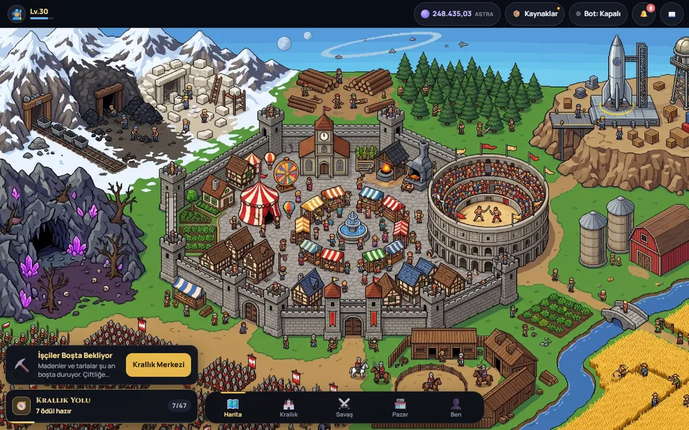
Oyunun tek cümlelik özeti
Çalış → topla → sat ya da işle → güçlen → kazan. Sen oyunda yokken bile seferlerin sürer, botun çalışır; döndüğünde "Sen yokken olanlar" raporu seni bekler.
ASTRA nedir?
ASTRA, oyunun parasıdır. Oyun içinde asker almak, eşya dövmek, pazardan alışveriş yapmak, çarkı çevirmek için ASTRA harcarsın; zindanda, Kolezyumda, boss savaşında ve görevlerde ASTRA kazanırsın. Kazandığın ASTRA oyunun ortak kasalarından gelir; havadan basılmaz. Bu yüzden oyunun ekonomisi bilerek dengelidir: çok kazandıran bir şey, çok harcatan bir şeyle bir arada durur.
Üret
Altı hammaddeyi (buğday, taş, odun, kömür, demir, şifalı ot) seferlerle topla.
Al-sat
Pazarda fiyatlar arz ve talebe göre oynar. Ucuzken al, pahalıyken sat.
Savaş
Ordunu kur, teçhizat döv; zindan, Kolezyum ve dünya bossu seni bekliyor.
Birlikte kur
Sirius Konseyi'nde herkes ortak projelere katkı verir; herkes faydalanır.
Oyunu zorlamana gerek yok. İlk seviyede bir sefer yaklaşık 18 dakika sürer; seviye atladıkça seferler uzar. Seferlerin bitince dön, topla, yenilerini başlat; arada oyundan çıkabilirsin, biten seferler seni bekler. Ağır bir "saatlerce başında dur" oyunu değil.
İlk 10 dakika: ne yapmalıyım?
Yeni bir hesapta ilk adımlar. Hepsi birkaç dokunuş.
- Bir sefer başlat. Üstteki Kaynaklar düğmesine ya da haritadaki bir bölgeye (orman, maden, tarla) dokun, Sefere gönder de. İşçilerin hammadde toplamaya çıkar; ilk seviyede bir sefer yaklaşık 18 dakikada biter.
- Krallık Yolu görevlerine bak. Sol alttaki "Krallık Yolu" kartı sana sıradaki görevi söyler. Her görevin küçük bir ASTRA ödülü vardır.
- Hasadını topla. Seferler bitince Krallık merkezi → Tüm seferleri topla ve başlat ile hammaddelerini ambara al ve yeni seferleri başlat.
- Köy evi yap. Köylüler üretimini artırır; ayrıca ordu kurmak için köylü gerekir (her asker bir köylü sayılır). İlk ev ucuzdur.
- Siloyu büyüt. Silon dolunca biten seferlerin ürünü toplanamaz, seferde bekler. Ambarlar %80 dolunca siloyu yükseltebilirsin.
- İlk askerini al. Kışlaya git, bir asker satın al. Zindan ve Kolezyum bununla açılır.
- Hesabını bağla ve güvene al. E-postanı doğrula, şifreni güçlü tut, mümkünse Muhafız Mührü'nü tak (iki adımlı doğrulama).
Sefer → topla → silo → köy → asker → zindan. Ritim bu. Gerisi bu ritmi hızlandıran ya da güvenli kılan ayrıntılardır.
Ekran düzeni: üst çubuk, sekmeler, kartlar
Oyunun bütün ekranı üç parçadan oluşur: üstte bilgi çubuğu, altta sekmeler, ortada harita.
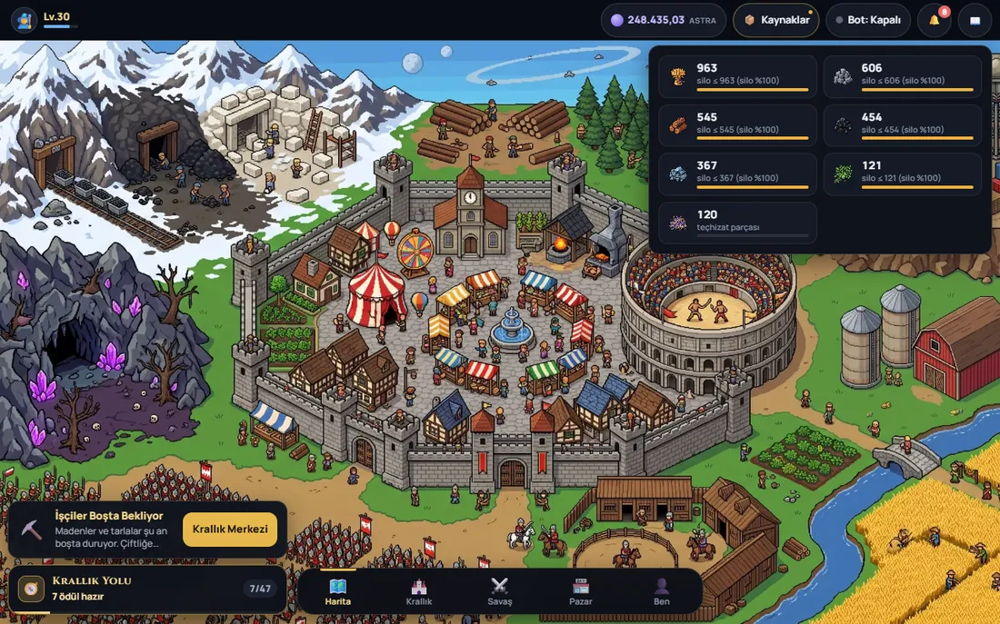
Üst çubuktaki her şey
| Öğe | Ne işe yarar? |
|---|---|
| 🧙 Lv.30 ve çubuk | Hesap seviyen ve staminanın doluluğu. Dokununca Karakterim açılır. |
| 🟣 ASTRA bakiyesi | Oyundaki paran. Dokununca Hesap ve cüzdan açılır. |
| 📦 Kaynaklar | Silodaki hammadde miktarları ve doluluk yüzdeleri. Bir hammaddeye dokunursan o hammaddenin sefer paneli açılır. |
| 🤖 Bot | Otomasyon botunun durumu (Kapalı / Çalışıyor). Dokununca Taverna açılır. |
| 🔔 Bildirimler | Önemli olayların listesi: sefer bitti, görev tamamlandı, ödül hazır. Kırmızı sayı okunmamış bildirimdir. |
| 📖 Rehber | Bu sayfa. Yeni sekmede açılır; oyunun kendisi arkada açık kalır. |
Alt sekmeler
Ekranın altında beş sekme var. Hepsi bir "menü paneli" açar; içindeki kartlara dokunarak ilgili ekrana gidersin. Kilitli bir özelliğin kartında neden kilitli olduğu ve nasıl açılacağı yazar (örneğin "Kışladan ilk askerini alınca").
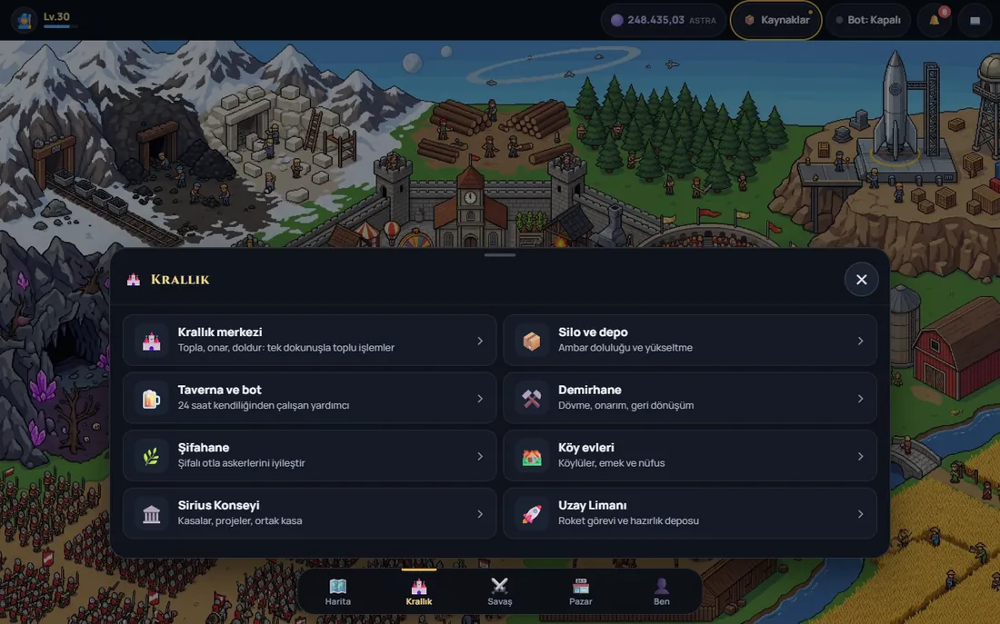
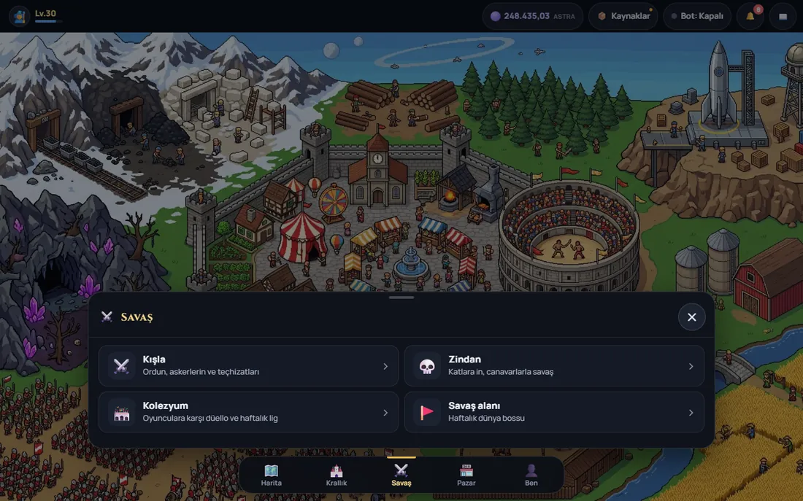
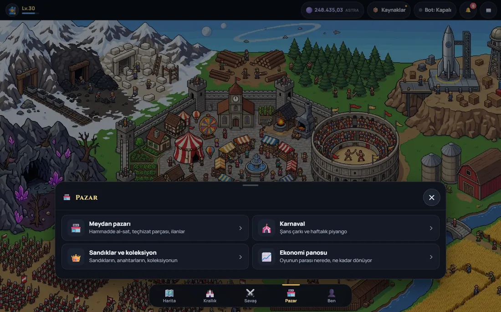
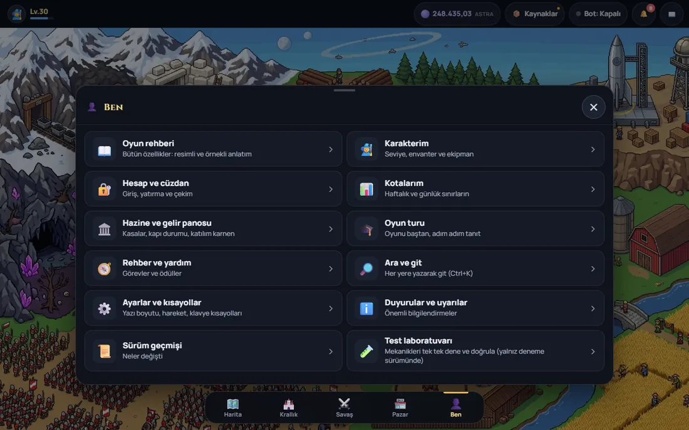
Sol alttaki kartlar
"Şimdi" kartı: oyunun o an sana önerdiği en yararlı adım (örneğin "İşçiler boşta bekliyor → Krallık Merkezi"). Krallık Yolu kartı: görev ilerlemen ve sıradaki görev. İkisi de dar ekranlarda alt sekmelerin üstüne oturur.
Klavye kısayolları
| Tuş | Ne yapar? |
|---|---|
| Ctrl + K | Ara ve git: aklına gelen yerin adını yaz, oraya git. |
| Tab | Krallık merkezini aç (panel kapalıyken). |
| Esc | Açık paneli kapat. |
| 1 2 3 | Orman · Maden · Tarla sefer panelleri. |
| 4 ya da B | Kışla. |
| 5 ya da M | Pazar. |
| 6 ya da D | Zindan. |
| 7 ya da C | Kolezyum. |
| E | Karakterim ve envanter. |
| K | Kotalarım. |
Telefonda klavye yok, ama Ben → Ara ve git aynı işi görür: yaz, git.
Harita: AdAstra Vadisi
Harita oyunun ana menüsüdür: bir yere dokunmak, oranın ekranını açar.
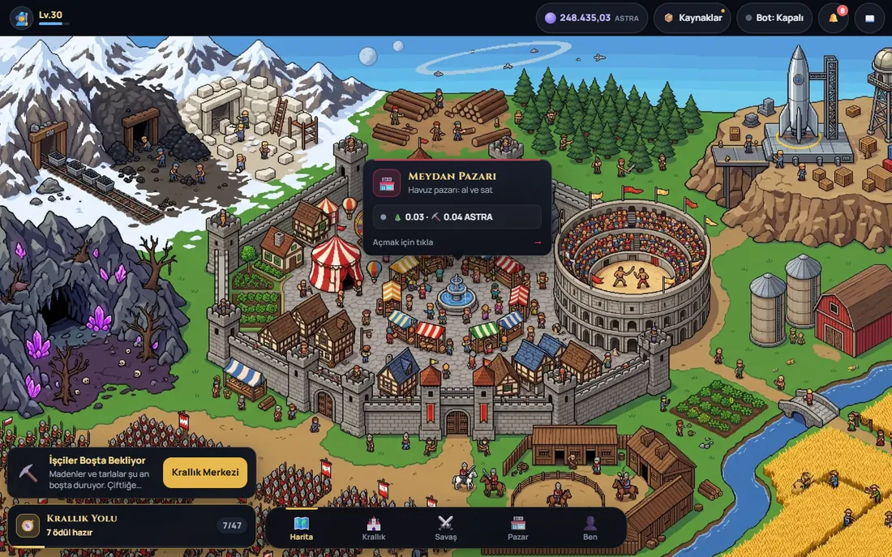
- Orman, maden, taş ocağı, kömür, tarla, şifalı ot bahçesi: sefer panelleri. Hammadde buradan gelir.
- Kale ve meydan: Krallık merkezi, pazar, Karnaval, Demirhane, Taverna.
- Kolezyum (arena): oyunculara karşı düello.
- Zindan mağarası: canavarlarla savaşılan katlar.
- Roket rampası: Uzay Limanı; ileride açılacak ikinci oyuna hazırlık.
2B ve 3B harita
Oyun varsayılan olarak 2B piksel haritayla açılır; hafiftir ve her cihazda sorunsuz çalışır. İstersen vadinin 3B görünümünü de açabilirsin: adres çubuğundaki oyun adresinin sonuna ?harita=3d ekle. Cihazın zayıfsa 3B harita kalitesini kendiliğinden düşürür.
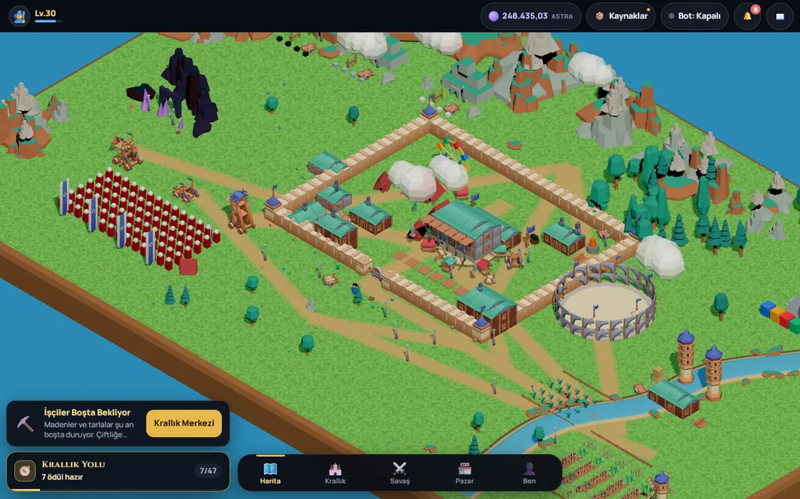
Telefonda
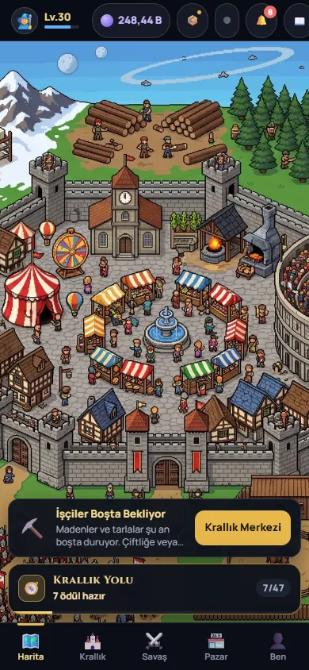
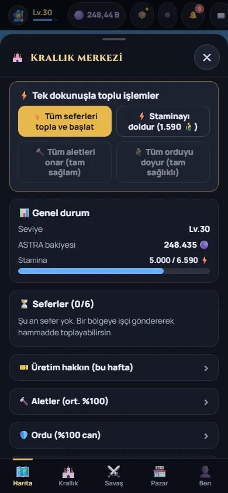
Hammaddeler ve seferler
Oyundaki her şey altı hammaddeyle başlar. Onları sefer adı verilen görevlerle toplarsın.
Hızlar, sefer süreleri, stamina ve haftalık/günlük kota formülleri: Üretim ve sefer · Kota · Bütün limitler.
Altı hammadde
| Hammadde | Nereden gelir? | Alet | Başlangıç hızı | Nerede kullanılır? |
|---|---|---|---|---|
| 🌾 Buğday | Tarla | Orak | dakikada 9 | Stamina, asker iyileştirme, köylülerin yemeği, seviye |
| 🪨 Taş | Taş ocağı | Taş keskisi | dakikada 6 | Köy evi, Konsey projeleri, seviye |
| 🌲 Odun | Orman | Balta | dakikada 5,4 | Köy evi, alet onarımı, eşya dövme |
| ⚫ Kömür | Kömür ocağı | Kömür kazması | dakikada 4,5 | Eşya dövme, roket, Konsey projeleri |
| ⛏️ Demir | Demir madeni | Kazma | dakikada 3,6 | Eşya dövme, alet onarımı, roket |
| 🌿 Şifalı ot | Şifalı ot bahçesi | Ot bıçağı | dakikada 1,2 | Şifahane (asker iyileştirme) |
Hızlar seviye ve köylü sayınla büyür. Şifalı ot en yavaş hammaddedir, bu yüzden en değerlisidir: pazardaki açılış fiyatı buğdayın yaklaşık dokuz katıdır.
Sefer nedir?
Bir hammadde bölgesine işçi gönderirsin. İşçiler sefer süresi boyunca çalışır; süre bitince ürün ambarına gelir. Aynı anda altı alanın hepsinde birer sefer çalışabilir.
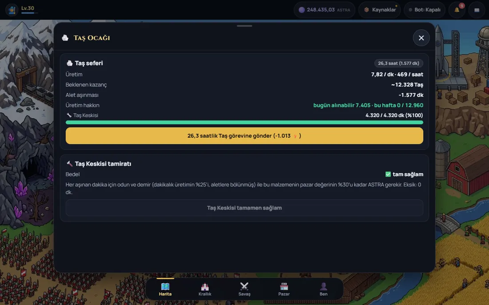
Panelde okuduğun satırlar
| Satır | Anlamı |
|---|---|
| Sefer süresi (26,3 saat) | İşçilerin ne kadar çalışacağı. İlk seviyede yaklaşık 18 dakikadır; seviye atladıkça uzar, ürün de büyür (örnekteki 26,3 saat 30. seviyedendir). |
| Üretim (7,82 / dk) | Dakikada ne kadar hammadde çıkacağı. |
| Beklenen kazanç (~12.328 Taş) | Süre sonunda ambarına gelecek tahmini miktar. |
| Alet aşınması (−1.577 dk) | Sefer bitince aletinin ne kadar yıpranacağı. Aşınma sürenle aynı dakika kadardır. |
| Üretim hakkın | Bugün ve bu hafta çıkarabileceğin üst sınır. Ayrıntısı aşağıda. |
| Düğmedeki ⚡ bedeli (−1.013) | Seferin staminadan alacağı pay. |
Stamina
Her sefer biraz stamina harcar. Stamina zamanla kendiliğinden dolar; acelen varsa buğdayla da doldurabilirsin: 1 buğday = 1 stamina. Üst çubuktaki küçük çubuk staminanın doluluğudur.
Staminan 5.000 / 6.590 diyelim. Eksik 1.590'ı tek tuşla doldurmak için ambarında 1.590 buğday olması gerekir. Krallık merkezindeki "Staminayı doldur (1.590 🌾)" düğmesi tam bunu yapar.
Aletler ve onarım
Her alanın bir aleti vardır (taş keskisi, balta, kazma…). Aletin sağlamlığı dakika cinsindendir: başlangıç aletlerinde 72 saat (4.320 dakika). Her sefer bitince alet, seferin süresi kadar dakika yıpranır. Alet yıprandıkça onarman gerekir; onarım aşağıda anlatılıyor.
Onarım bedeli: aşınan her dakika için odun ve demir (o hammaddenin dakikalık üretiminin dörtte biri düzeyinde) ve bu malzemenin pazar değerinin %30'u kadar ASTRA. Onarım bedeli panelde "Bedel" satırında yazar; sağlam alette "tam sağlam" görünür.
Üretim hakkı: neden her şeyi sınırsız çıkaramıyorum?
Oyundaki bütün oyuncular aynı dünyayı paylaşır. Hammadde sınırsız olursa fiyat sıfıra düşer ve kimse bir şey kazanamaz. Bu yüzden haftalık bir "çıkarma kapasitesi" vardır ve herkesin payı (üretim hakkı) bu kapasiteden hesaplanır. Hakkın günlük parçalar halinde açılır.
- Payın; ne kadar aktif olduğuna, seviyene ve katkı kademene göre büyür.
- Hakkın dolunca sefer "izin bekliyor" durumuna geçer; yeni gün açılınca devam eder.
- Kalan hakkını Kotalarım ekranında görürsün.
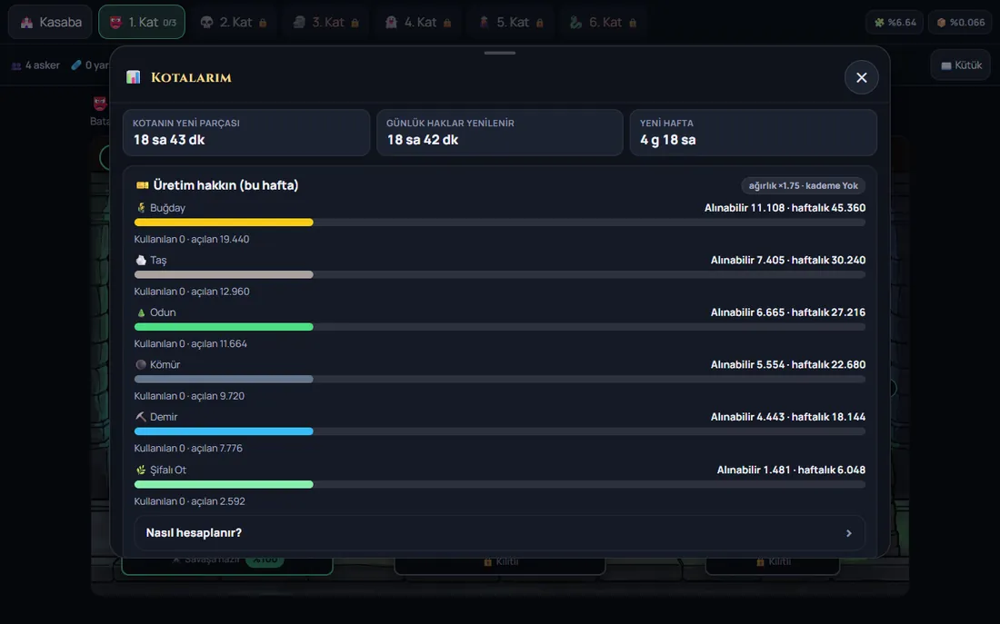
Krallık merkezi: tek dokunuşla toplu işlem
Her bölgeye tek tek girmek yerine, hepsini buradan yönetirsin.
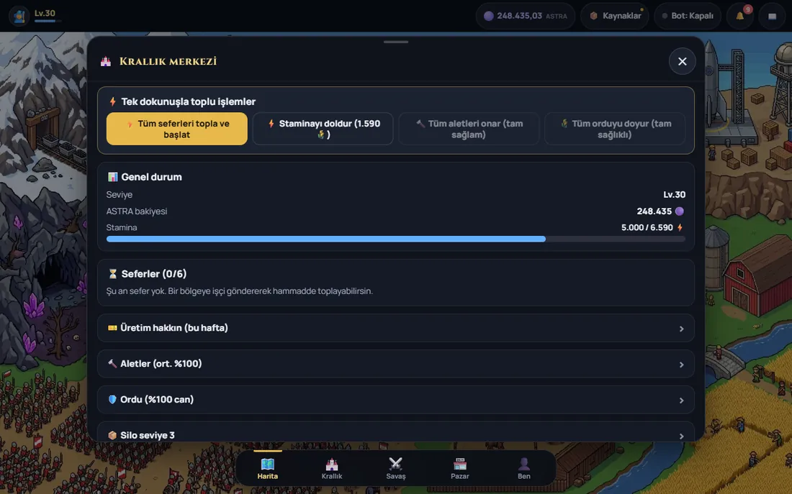
| Düğme | Ne yapar? |
|---|---|
| ⚡ Tüm seferleri topla ve başlat | Biten seferlerin ürününü alır ve boş kalan alanlarda yenilerini başlatır. |
| ⚡ Staminayı doldur | Eksik staminayı buğdayla tamamlar. Parantezde kaç buğday harcayacağı yazar. |
| 🔨 Tüm aletleri onar | Yıpranmış aletlerin hepsini tek seferde onarır. |
| 🌿 Tüm orduyu otla iyileştir | Yaralı askerleri şifalı otla hemen iyileştirir; ot eksikse pazardan alır. |
Aşağıda Genel durum (seviye, ASTRA, stamina), Seferler (6 alanın durumu), Üretim hakkın, Aletler, Ordu ve Silo kartları bulunur.
Her gün için en pratik rutin: Krallık merkezini aç → "Tüm seferleri topla ve başlat". Bitti.
Silo ve depo
Hammaddelerini sakladığın ambar. Dolunca yeni ürün alamaz; büyüttükçe daha çok alır.
Her silo seviyesinin kapasitesi ve yükseltme bedeli (hammadde ve ASTRA): Silo bedelleri.
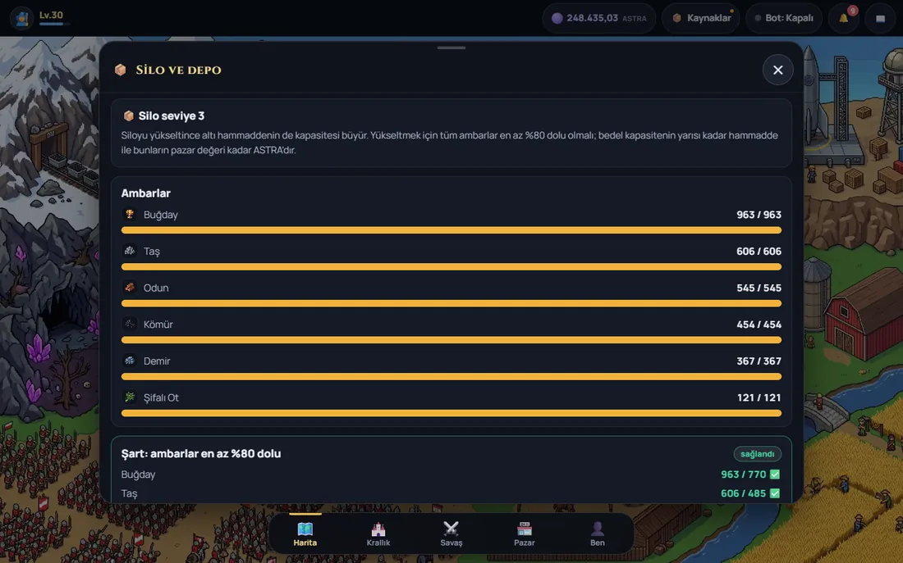
- Silonun 18 seviyesi vardır; her seviyede altı hammaddenin de kapasitesi büyür. Oyunun başında (Universe açılmadan önce) 12. seviyeye kadar çıkılabilir.
- Yükseltme şartı: altı ambarın hepsi en az %80 dolu olmalı.
- Yükseltme bedeli: her hammaddede kapasitenin yarısı kadar hammadde, artı bu hammaddelerin pazar değeri kadar ASTRA.
Ambarlarında 963 buğday kapasiten 963 ise "dolu"dur. Seviye 4 bedeli: 481 buğday, 303 taş, 272 odun, 227 kömür, 183 demir, 60 şifalı ot, artı 29,75 ASTRA. Yükselince yeni kapasiteler: 1.285 buğday, 786 taş, 707 odun…
Biten seferin ürünü silonun boş yeri kadar toplanır; sığmayan kısım kaybolmaz, seferde bekler. Siloda yer açtıkça (hammadde satınca, harcayınca ya da siloyu yükseltince) kalanını toplarsın.
Tek istisna: ödül ve teslimat gibi doğrudan gelen mallar sığmazsa pazarda otomatik satılır (karşılığı ASTRA olarak sana yazılır). Botun "Silo dolarsa" ayarı, yer açma işini senin yerine yapabilir.
Seviye ve deneyim (XP)
Seviye atladıkça seferlerin büyür, yeni özellikler açılır ve haftalık gelir payın artar.
1'den 81'e her seviye atlamanın XP, hammadde ve ASTRA bedeli: Seviye atlama bedelleri.
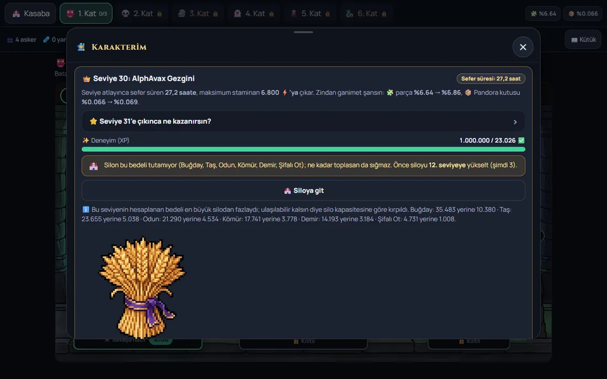
- XP kazan. Sefer toplamak, savaşmak ve görev yapmak deneyim verir.
- Bedeli karşıla. Seviye atlamak için XP'ye ek olarak hammadde ve biraz ASTRA gerekir.
- Seviye atla. Sefer süren ve maksimum staminan büyür; ganimet şansların küçük bir miktar artar.
Bedel siloya sığar
Seviye bedeli hesaplanırken oyun bir güvenlik kuralı uygular: hiçbir hammaddenin bedeli, ulaşabileceğin en büyük silonun kapasitesinin %80'inden büyük olamaz. Böylece "ne kadar toplasan da sığmaz" durumu yaşamazsın. Bedel kırpıldıysa panel bunu "kırpıldı" notuyla gösterir.
Seviye atlayamıyorsan ekran sana neyin eksik olduğunu söyler ("Silon bu bedeli tutamıyor", "Eksik hammadde var"). Genellikle çözüm siloyu yükseltmektir.
Seviyeyle neler açılır?
- Taverna (bot), Demirhane, Kışla, Zindan, Kolezyum, Savaş alanı, Pazar ve Karnaval gibi özellikler belli adımlarda açılır. Kilitli kartta açılış şartı yazar.
- Haftalık temel gelirden (UBI) alacağın pay seviyenle büyür.
- Köy evi sayısı hesap seviyeni geçemez.
- Asker seviyesi hesap seviyeni geçemez (fazla asker XP'si birikir; hesabın seviye atlayınca askerler de atlar).
Köy evleri ve nüfus
Köylüler üretimini artırır; ayrıca ordu kurmak için köylü gerekir (her asker bir köylü sayılır).
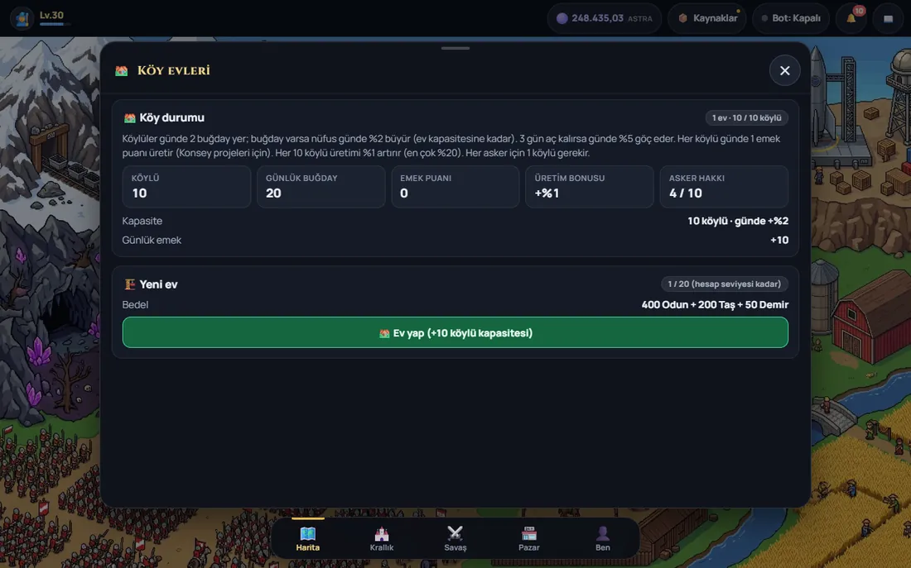
- Her ev 10 köylü alır. Başta 1 ev ve 10 köylün vardır.
- Köylüler günde 2 buğday yer. Buğday varsa nüfus günde %2 büyür (ev kapasitesine kadar).
- Üç gün aç kalırlarsa günde %5'i göç eder.
- Her köylü günde 1 emek puanı üretir; emek puanı Konsey projelerinde kullanılır.
- Her 10 köylü üretimini %1 artırır (en çok %20).
- Her asker için 1 köylü gerekir.
Yeni ev yapmak
İlk ev yapımı 400 odun + 200 taş + 50 demir eder; her yeni ev bir öncekinden %20 pahalıdır. En çok 20 ev yapılır ve ev sayısı hesap seviyeni aşamaz.
40 köylün varsa üretimin %4 artar ve günde 80 buğday yenir. Bu buğdayı üretmezsen üç gün sonra köylüler kaçmaya başlar. Önce tarlayı güçlendir, sonra köyü büyüt.
Taverna ve otomasyon botu
Sen yokken çalışan yardımcı. Altı alanda seferleri başlatır, staminayı buğdayla doldurur, aletleri onarır.
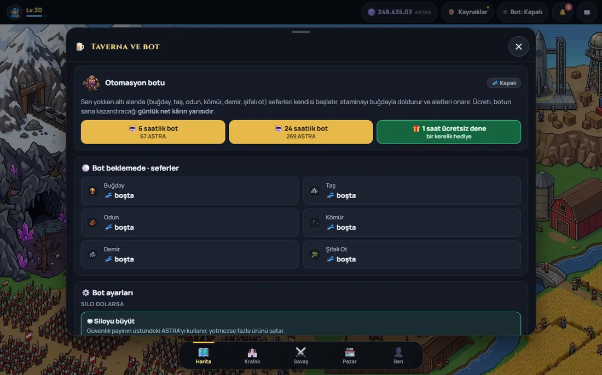
Paketler
- 6 saatlik ve 24 saatlik bot paketleri vardır. Ücret, botun sana kazandıracağı günlük net kârın yarısıdır; yani botun getirisi, ücretinin yaklaşık iki katıdır (tahmini).
- 1 saat ücretsiz dene: hesap başına bir kerelik hediye.
- Paket süresi bitince bot durur; istersen "Süre bitince otomatik yenile" kutusunu işaretlersin.
"Silo dolarsa" ayarı
Siloyu büyüt
Güvenlik payının üstündeki ASTRA'yı kullanır; yetmezse fazla ürünü satar.
Fazlasını sat
Silonun yarısını yedek tutar, fazlasını pazarda satar.
Ekranda 6 saatlik bot 67 ASTRA, 24 saatlik bot 269 ASTRA görünüyor. Yani günde 24 saat boyunca çalışacak bot ona ödediğin ASTRA'nın yaklaşık iki katını sana kazandırıyor (ücret net kârın yarısı).
Demirhane: eşya dövme ve geri dönüşüm
Askerlerin için silah ve zırh burada yapılır.
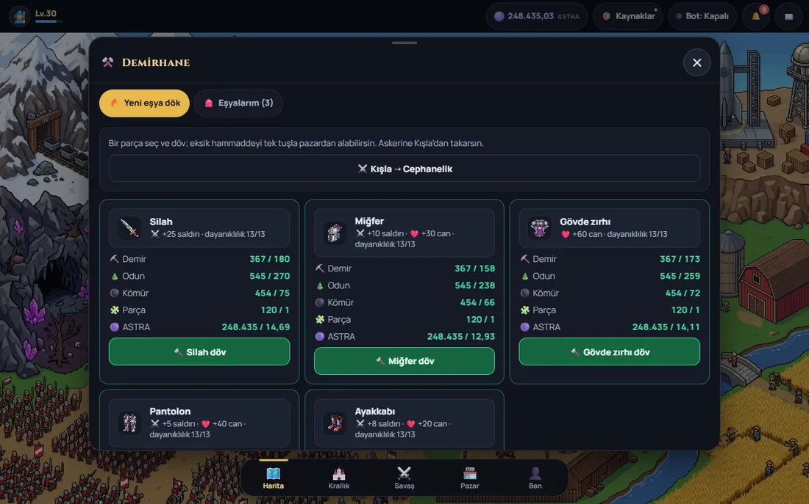
- Beş parça: silah, miğfer, gövde zırhı, pantolon, ayakkabı.
- Her parça demir, odun, kömür, teçhizat parçası (zindan ganimeti) ve biraz ASTRA ister.
- Eşyanın dayanıklılığı vardır (örnek: 13). Savaştıkça aşınır.
- Dövdüğün eşya Cephanelik'e gider; askerine Kışla'dan takarsın.
- Geri dönüşüm: kullanmadığın alet ya da eşyayı erittiğinde hammaddelerinin %70'i geri gelir (%30 kaybolur); ASTRA geri gelmez.
Eksik hammaddelerin kırmızı görünür; yanındaki düğmeyle pazardan tek dokunuşla alıp hemen dövebilirsin.
Şifahane
Yaralı askerleri şifalı otla iyileştirir.
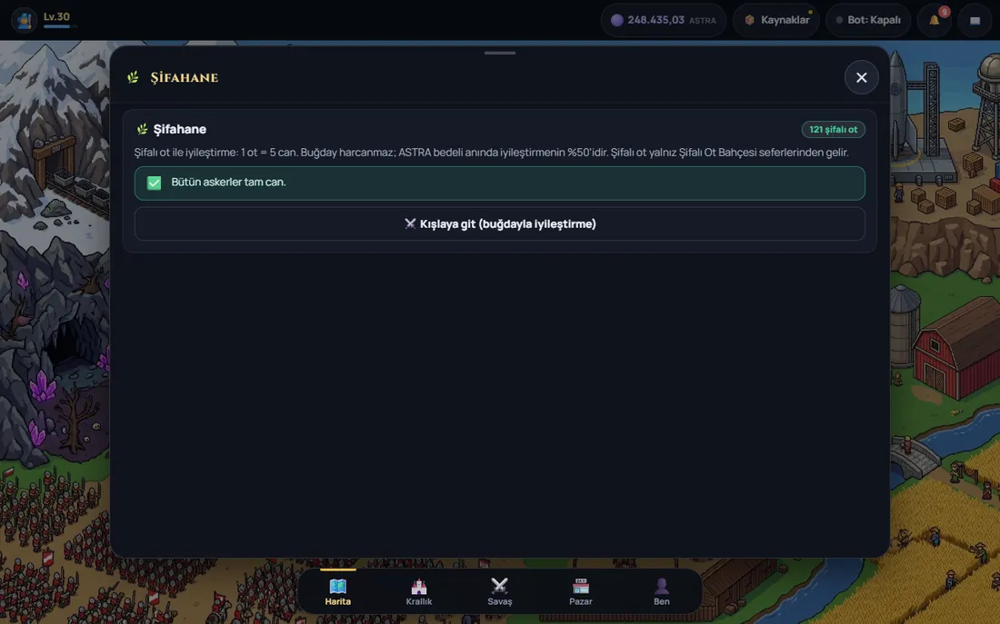
- Hemen iyileştirmenin tek yolu şifalı ottur. 1 şifalı ot 2 can iyileştirir; kullanılan ot yakılır. Hesap, ekranda gördüğün can sayısıyla yapılır (teçhizat dahil): güçlü teçhizatlı asker daha çok can taşıdığı için daha çok ot yakar.
- Üstüne can başına 0,01 ASTRA ödersin (100 can için 50 ot + 1 ASTRA). Siloya sığmayan büyük bedeller parça parça alınıp tur tur iyileştirilir.
- Şifalı ot yalnızca şifalı ot bahçesi seferlerinden gelir. Otun yetmezse "Eksik otu al ve iyileştir" düğmesi pazardan alıp iyileştirir.
- Beklemek istemezsen hiçbir şey yapma: askerler 24 saatte kendiliğinden tam cana kavuşur; bu sırada ekrandaki can başına 0,1 şifalı ot ve 0,002 ASTRA harcanır (hemen iyileştirmenin beşte biri). Ot ya da ASTRA biterse iyileşme durur. Kışla ve Şifahane, kendiliğinden ile hemen iyileştirmenin ne harcayacağını yan yana canlı gösterir. Bir de "Ordu İyileştirme Parşömeni" vardır: bir askere 4 can verir (2 şifalı otun karşılığı); büyük iyileştirmede şifalı ot daha ucuzdur.
- Aynı "Hızlı iyileştir" düğmesi Zindan, Kışla, Krallık merkezi ve Kolezyum ekranlarında da vardır.
Kışla: ordun, askerlerin ve teçhizatın
Savaşın bütün hazırlığı burada yapılır: asker al, eşya tak, dizilişi ayarla.
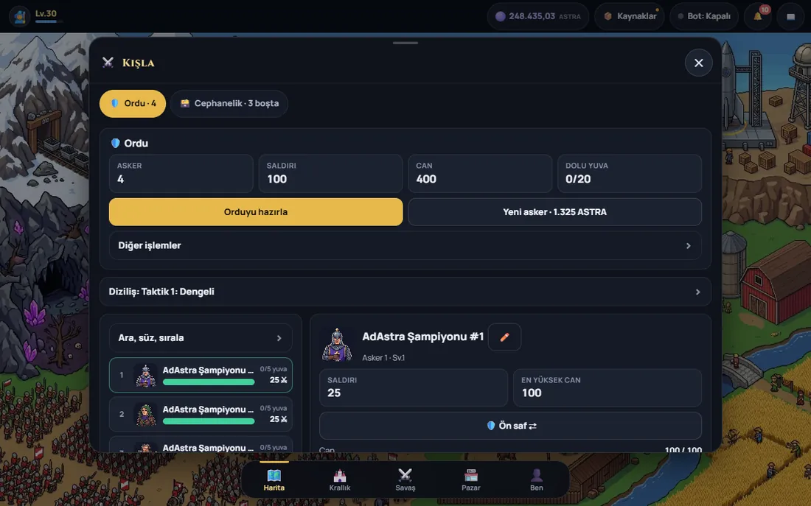
İki sekme
- 🛡️ Ordu: askerlerin, toplam saldırı ve can, diziliş, yeni asker alma.
- 🗃️ Cephanelik: dövdüğün ve kazandığın eşyalar. Boştaki eşya sayısı sekmenin yanında yazar.
Asker kartı
- Saldırı ve en yüksek can: askerin gücü. Eşya taktıkça büyür.
- Ön saf / arka saf: ön saf darbeyi alır; arka saf geriden vurur. Düğmeye dokununca ⇄ yer değiştirir.
- Beş ekipman yuvası: silah, miğfer, zırh, dizlik, çizme. Her yuvaya uygun bir eşya "seç" diyerek takarsın.
- Yetenekler: askerin özel yetenekleri kartın altında listelenir.
- ✏️ ile askerine isim verebilirsin.
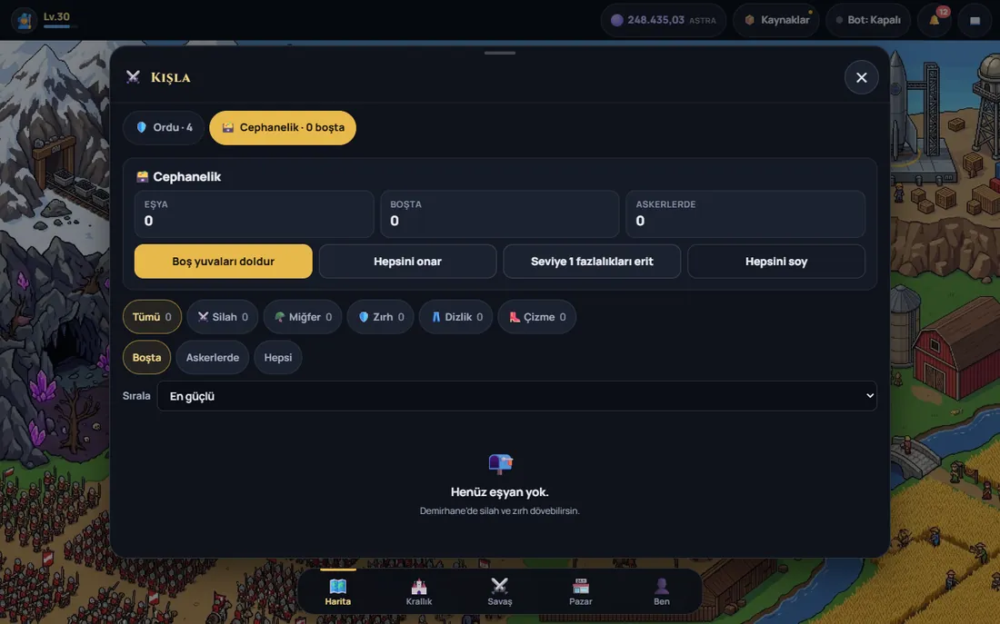
Cephanelik toplu işlemler sunar: Boş yuvaları doldur (boş ekipman yuvalarına eşya yerleştirir), Hepsini onar, Seviye 1 fazlalıkları erit ve Hepsini soy (askerlerden eşyaları çıkarır). Üstteki filtrelerle silah, miğfer, zırh, dizlik ve çizmeyi ayrı ayrı görürsün.
Yeni asker almak
"Yeni asker" düğmesinin üzerinde ASTRA bedeli yazar; her yeni asker bir öncekinden daha pahalıdır (1. asker 50, 18. asker 18.000 ASTRA; tam tablo Teknik başvuru'dadır). Asker sayısını üç şey sınırlar: ASTRA bedeli, köylü sayın (her asker bir köylü sayılır; bkz. Köy evleri) ve zindan asker hakkın. Hakkın, zindanda ilerledikçe artar: geçtiğin kat + 1. Normal modda 1. katta 2, 2. katta 3, …, 6. katta 7 asker taşıyabilirsin. Hakkın dolunca yeni asker alamazsın; o zaman askerlerini seviyelendirir, teçhizatla güçlendirir ve bakımını yaparsın. Var olan askerlerin hiçbir zaman silinmez.
30 köylün varsa en çok 30 asker alabilirsin; 31. asker için önce köy evi yapıp köylülerin çoğalmasını beklersin. Tek bir zindan savaşına en çok 25 asker götürürsün.
Askerler savaşlarda deneyim kazanıp seviye atlar: her seviyede +6 saldırı ve +25 can. Asker seviyesi hesap seviyeni geçemez: fazla XP kaybolmaz, birikir ve hesabın seviye atlayınca askerler de atlar. Teçhizat (silah, zırh…) ayrıca güç verir.
Zindan: katlar, odalar ve canavarlar
Oyunun ana macerası. Canavarları yenip ASTRA, XP, teçhizat parçası ve kutu kazanırsın.
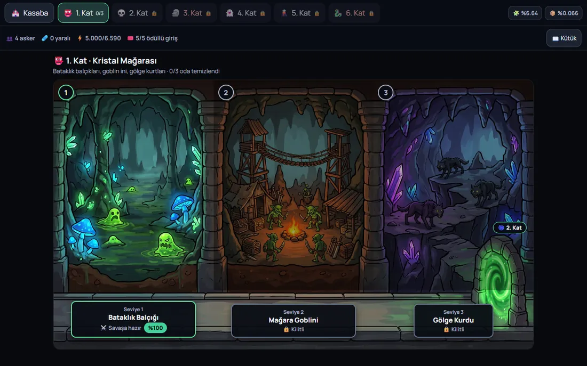
Yapı
- 18 katlı bir zindan; her katta 3 oda ve bir portal vardır. Bir kat temizlenince sonraki kat açılır.
- Odaların canavarları ilerledikçe güçlenir; kat sonunda boss vardır.
- Savaş otomatik ve sunucuda hesaplanır; sonucu sen izlersin.
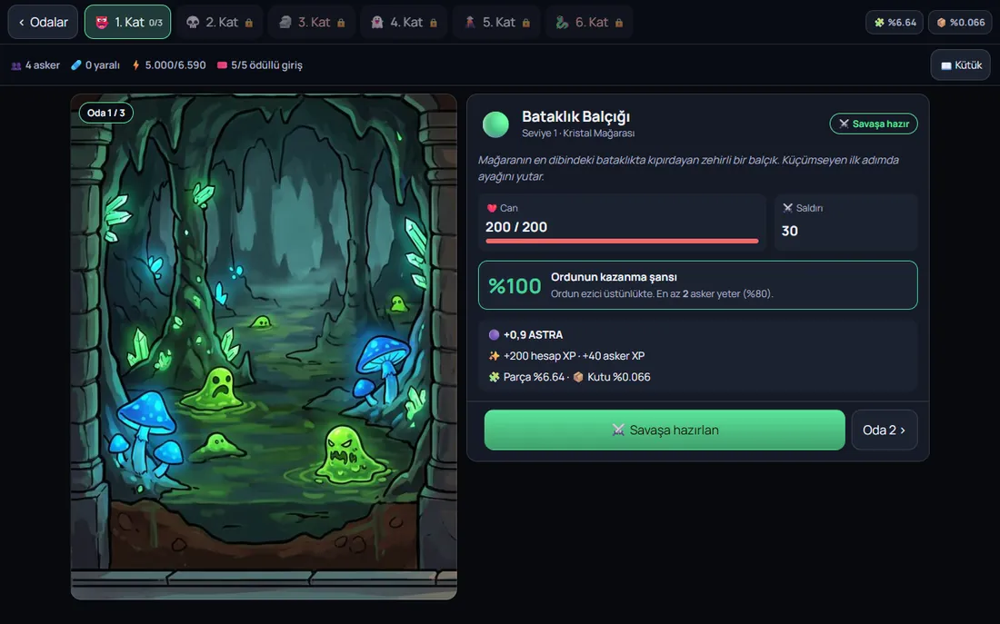
Bir odada ne görürsün?
| Alan | Anlamı |
|---|---|
| Can / Saldırı | Canavarın gücü. |
| Ordunun kazanma şansı | Mevcut ordunun bu canavarı yenme olasılığı (örnek: %100). Şans düşükse önce ordunu ya da teçhizatını güçlendir. |
| +0,9 ASTRA | Kazanırsan alacağın ASTRA. |
| +200 hesap XP · +40 asker XP | Hesabına ve askerlerine giden deneyim. |
| Parça %6,64 · Kutu %0,066 | Savaşın sonunda teçhizat parçası ve Pandora kutusu düşme şansı. |
Günlük ödüllü giriş
Her gün 5 ödüllü giriş hakkın var ("5/5 ödüllü giriş"). Girişlerin ilki eşyalarını yıpratmaz; sonraki girişlerde savaşa giren her askerin takılı eşyalarından rastgele bazıları (silah, miğfer, zırh, pantolon, çizme) birer dayanıklılık kaybeder. Kaç eşyanın aşındığı kata ve zindan moduna göre artar: Normal modda 1. katta askerin 1 eşyası, 6. katta 2 eşyası; Zor, Uzman ve Cehennem modlarında daha fazlası; büyük bosslarda yarım eşya daha. Aynı eşya bir savaşta bir kez aşınır. 6. girişten sonra girmek için kapı harcı ödersin (harçlı giriş de ödüllüdür); harç ödemeden giriş yoktur, "antrenman girişi" diye bir şey de yoktur. Kasanın o günkü ödeme bütçesi dolmuşsa yeni giriş ertesi güne kalır. Günlük sınırlarını Kotalarım ekranından izlersin.
Her gün ilk 5 girişi kullanmak, ASTRA kazancının büyük kısmını sağlar. Zindanın günlük ödemesi aynı zamanda zindan kasasının bakiyesinin %0,36'sıyla sınırlıdır (herkes için ortak); ayrıca kişisel günlük ve haftalık tavanların da vardır (kasa herkese yetsin diye).
Yaralanma
Savaşta askerler yaralanabilir. Yaralı askerleri hemen iyileştirmek için şifalı ot kullanılır (Şifahane, Kışla ya da Zindan ekranındaki "Hızlı iyileştir"); beklersen 24 saatte kendiliğinden iyileşirler. Ekranın üstündeki "🩹 0 yaralı" sayacı sana kaç yaralın olduğunu gösterir.
Kütük
Sağ üstteki 📖 Kütük düğmesi canavarların rehberidir: gördüğün canavarların özellikleri ve ne düşürdükleri orada yazar.
Fatih ödülü
Zindanın 18. katındaki son canavar Fatih sayılır. Onu yenmek, zindanın en büyük ödülünü (Fatih Kasası) açar. Ayrıntıları Hazine ve gelir ekranında görürsün.
Zindan modları: Normal, Zor, Uzman, Cehennem
Normal modda 6 katın hepsini ve son canavarı (Kıyamet Ejderhası) yenince zindan bitmez: bir üst moda geçebilirsin. Geçince zindan baştan başlar, canavarlar çok daha güçlü olur; karşılığında zindandan kazandığın ASTRA ödülü ve eşya düşme şansı artar, asker hakkın da yükselir (Normal 2-7, Zor 8-13, Uzman 14-19, Cehennem 20-25 asker). Askerlerin, teçhizatın ve ilerlemen korunur; yalnız zindan sıfırlanır.
Geçiş için ciddi miktarda hammadde ve ASTRA verirsin: hammadde katkı olarak günlere yayarak verilir (silo sınırına takılmazsın) ve yakılır; ASTRA son adımda ödenir. Geçişin durumunu ve bedelini Zindan modu ekranında (Savaş sekmesi ya da zindan ekranındaki mod düğmesi) görürsün.
Daha yüksek modda daha güçlü canavarlarla savaşmak için askerlerinin seviyesini artır, teçhizatını geliştir ve bakımını yap. Deneyim (XP) ödülü mod çarpanından etkilenmez: hesap seviyen hep aynı tempoda yükselir.
Kolezyum: oyunculara karşı düello
Şampiyonunu seç, kendi ligine uygun bir rakiple dövüş. Kazanırsan puan ve ASTRA kazanırsın.
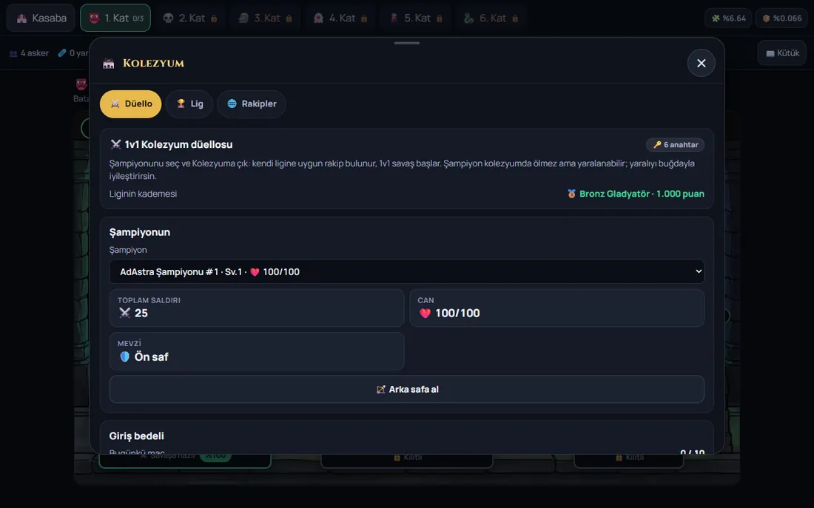
- Şampiyon ölmez ama yaralanabilir; yaralıyı şifalı otla iyileştirirsin.
- Her maç 10 ASTRA giriş ücreti ve biraz stamina (örnek: 12 ⚡) harcar. Ücretin %70'i arena kasasına girer (ödüller oradan çıkar), kalanı yakım ve öteki kasalara dağılır. Anahtar gerekmez.
- Günde en çok 10 maç yapabilirsin ve günlük ASTRA ödül tavanı vardır (örnek: 125 ASTRA).
- Rakibin puanı seninkinin ±100 puan çevresinde seçilir; böylece adil maçlar yaparsın.
- Haftalık sıralamada ilk 10 oyuncu ek ödül alır; ilk 3 oyuncu ayrıca birer anahtar kazanır (Pandora kutusu açar; İlan Pazarında satabilirsin).
- Lig: Bronz Gladyatör ile başlarsın (1.000 puan); puan arttıkça ligin yükselir ve maç ödülün çarpılır.
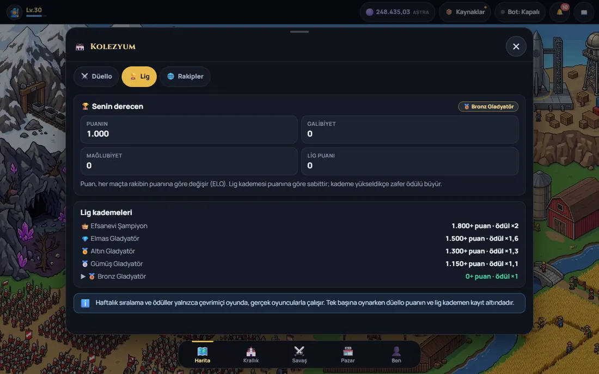
Lig kademeleri
| Kademe | Gereken puan | Zafer ödülü çarpanı |
|---|---|---|
| 🥉 Bronz Gladyatör | 0+ | ×1 |
| 🥈 Gümüş Gladyatör | 1.150+ | ×1,1 |
| 🥇 Altın Gladyatör | 1.300+ | ×1,3 |
| 💎 Elmas Gladyatör | 1.500+ | ×1,6 |
| 👑 Efsanevi Şampiyon | 1.800+ | ×2 |
Puan her maçta rakibin puanına göre değişir (ELO sistemi): güçlü birini yenersen çok, zayıf birine kaybedersen çok puan kaybedersin. Başlangıç puanın 1.000'dir.
Gerçek rakipler
Rakipler sekmesi sunucu açıkken çalışır: askerini seçip "Maç ara"ya basarsın, sırada bekleyen ilk oyuncuyla maçın sunucuda oynanır. 1v1 zaferi 1 puan, 3v3 zaferi 3 puan getirir; haftalık sıralamada ilk 10 ödül alır. Tek başına (çevrimdışı deneme) modunda düello puanın ve ligin kayıt altındadır ama haftalık sıralama çalışmaz.
Taktik düğmesiyle diziliş stilini (dengeli, saldırgan…) değiştirebilirsin. Taktik seçimini her maçtan önce değiştirebilirsin.
Savaş alanı: haftalık dünya bossu
Bütün oyuncuların aynı anda saldırdığı dev canavar. Her Pazar 18:00'de (Türkiye saati) otomatik savaş yapılır.
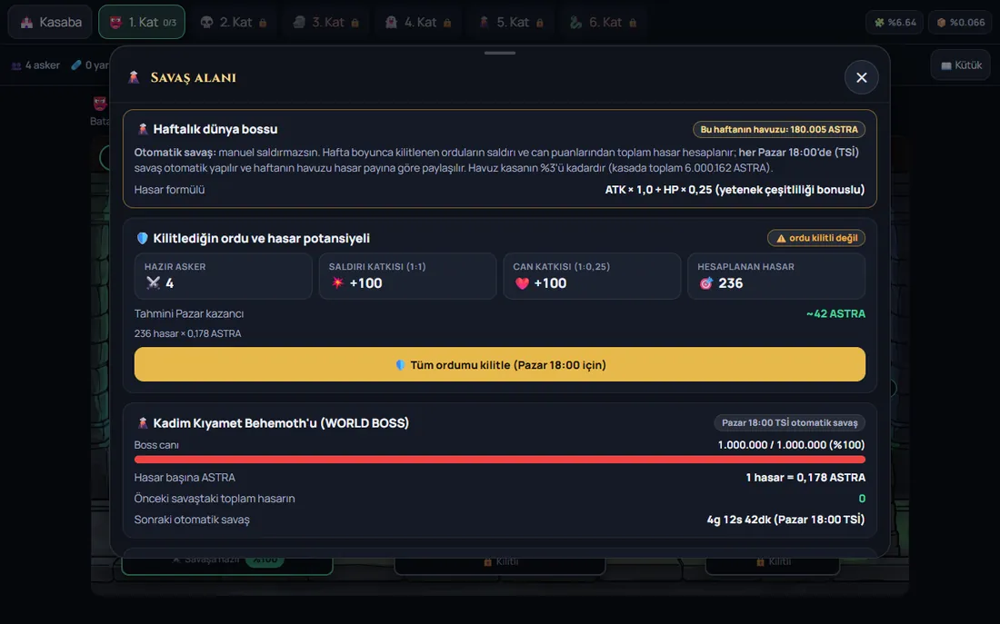
- Orduyu kilitle. "Tüm ordumu kilitle" düğmesi askerlerini bu haftanın savaşı için ayırır.
- Hasarın hesaplanır. Formül: saldırı × 1 + can × 0,25. Yetenek çeşitliliği küçük bir bonus verir.
- Pazar 18:00. Savaş otomatik yapılır; oyuncuların hasarı toplanır.
- Havuz paylaşılır. Haftanın havuzu hasar payına göre dağıtılır. Havuz, dünya bossu kasasının %3'üdür.
- Ödülünü topla. "Toplanmaya hazır ödülün" kartından alırsın.
Ekranda 4 askerin toplam hasarı 236 görünüyor ve 1 hasar = 0,178 ASTRA. Pazar günü bu hasarla yaklaşık 236 × 0,178 ≈ 42 ASTRA alırsın. Hasarını artırmak için asker sayını ve teçhizatını büyüt.
Kilitli ordun yoksa o hafta hasar yazılmaz. Pazar 18:00'den önce ordunu kilitlediğinden emin ol.
Meydan pazarı: al, sat, ilan ver
Hammaddeyi ASTRA'ya, ASTRA'yı hammaddeye çevirdiğin yer. Fiyatı bir kişi değil, havuz belirler.
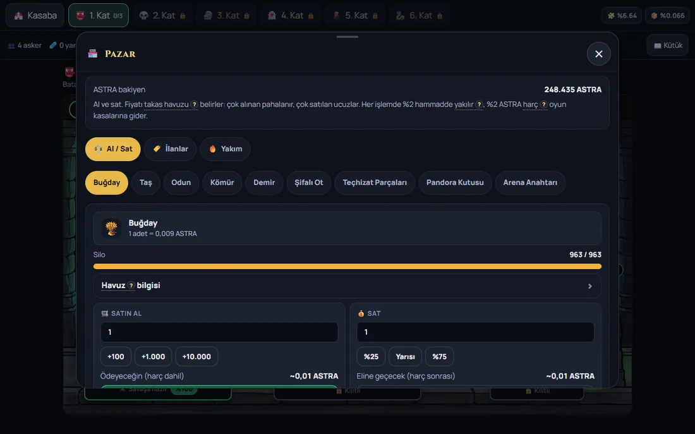
Fiyat nasıl belirlenir?
Pazarda her hammaddenin bir takas havuzu vardır: havuzda belli miktarda hammadde ve belli miktarda ASTRA bulunur. Fiyat bu ikisinin oranından çıkar. Çok alınan hammadde havuzdan azalır ve pahalanır; çok satılan havuza yığılır ve ucuzlar. Alıcı ya da satıcı aramana gerek yoktur: işlem anında havuzla yapılır.
Açılış fiyatlarında 1 buğday = 0,009 ASTRA, 1 demir = 0,04 ASTRA'dır. Ekranlarda genelde "1.000 birim" başına yazılır: 1.000 demir = 40 ASTRA. 10.000 buğdayı satsan fiyat biraz düşer; ertesi gün başkaları alınca yeniden yükselir.
Harç ve yakım
- Her alım ve satımda hammaddenin %2'si yakılır (oyundan silinir; fiyatı korumaya yarar).
- Ayrıca %2 ASTRA harç alınır; her harcama gibi bölünür (%5 yakım, %3 yapımcı, %6 temel gelir, %86 kasalar).
- "Ödeyeceğin (harç dahil)" ve "Eline geçecek (harç sonrası)" satırları, işlemden önce net rakamı gösterir.
- Tek işlemde havuzun %5'inden fazlasını alamazsın; ekran büyük işlemlerde fiyat etkisini önceden uyarır.
Hızlı işlemler
- +100, +1.000, +10.000: alım miktarını hızlıca artırır.
- %25, Yarısı, %75, Hepsini sat: satış miktarını yüzdeyle seçer.
- Depoyu doldur: silonda boş yer kadar tek hamlede satın alır.
Başka neler alınır?
Hammaddelerin yanında teçhizat parçası da bu havuzdan alınır; fiyatları aynı havuz mantığıyla belirlenir. Pandora kutusu, anahtar ve koleksiyon eseri takas havuzunda yoktur: yalnız oyuncular birbirine İlanlar sekmesinde (adet + birim fiyat) satar.
İlanlar
Oyuncular birbirine teçhizat satabilir. İlan 7 gün açık kalır; aynı anda en çok 10 ilan verebilirsin. Satıştan %2 komisyon alınır (yarısı yakılır, yarısı kasaya gider). Alıcı önce serbest bakiyesinden öder, yetmezse kalanı kilitli bakiyesinden.
Yakım sekmesi: geri alım
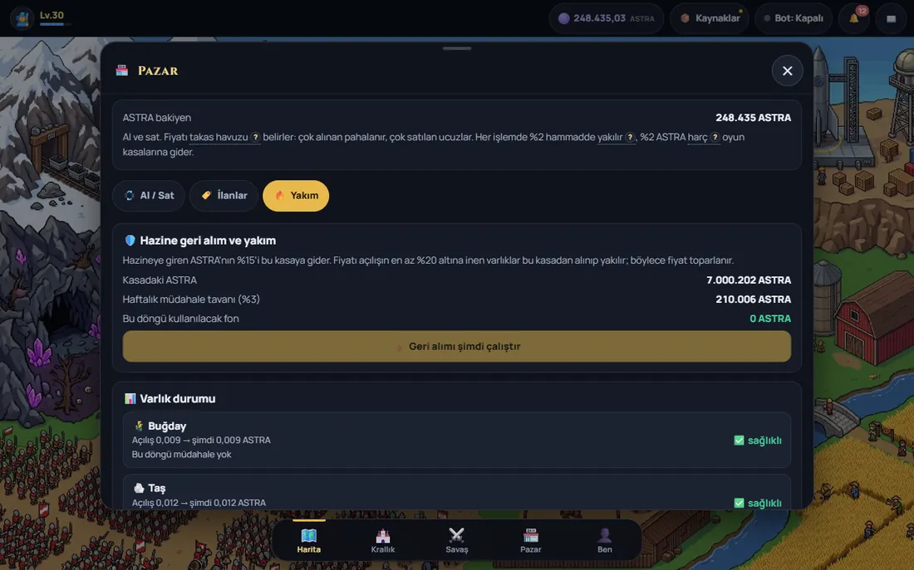
Hazineye giren ASTRA'nın %15'i Pazar Geri Alım Kasası'na gider. Bir varlığın fiyatı açılış fiyatının en az %20 altına inerse, kasa o varlığı piyasadan alıp yakar; böylece fiyat toparlanır. Kasa her hafta kendi bakiyesinin en çok %3'ünü kullanabilir.
| Varlık | Açılış fiyatı (ASTRA) |
|---|---|
| 🌾 Buğday | 0,009 |
| 🪨 Taş | 0,012 |
| 🌲 Odun | 0,025 |
| ⚫ Kömür | 0,018 |
| ⛏️ Demir | 0,04 |
| 🌿 Şifalı ot | 0,08 |
| 🧩 Teçhizat parçası | 0,45 |
Fiyat düşükken hammadde alıp bekleyen oyuncular, fiyat yükselince satar. Ama dikkat: pazarın bir geri alım kasası da vardır; fiyat açılışın çok altına düşerse kasa piyasadan hammadde alıp yakarak fiyatı toparlar.
Sandıklar ve koleksiyon (Genesis NFT)
RoA Genesis NFT uzun bir yolun sonudur: 18 eseri bulup tek tek uyandırır, şartları tamamlar ve mühür bedelini ödersin. Bu yolda yaptığın harcama ve yakımlar ekosisteme katkındır; ekosistem karşılığını sana ayrıcalıklarla öder.
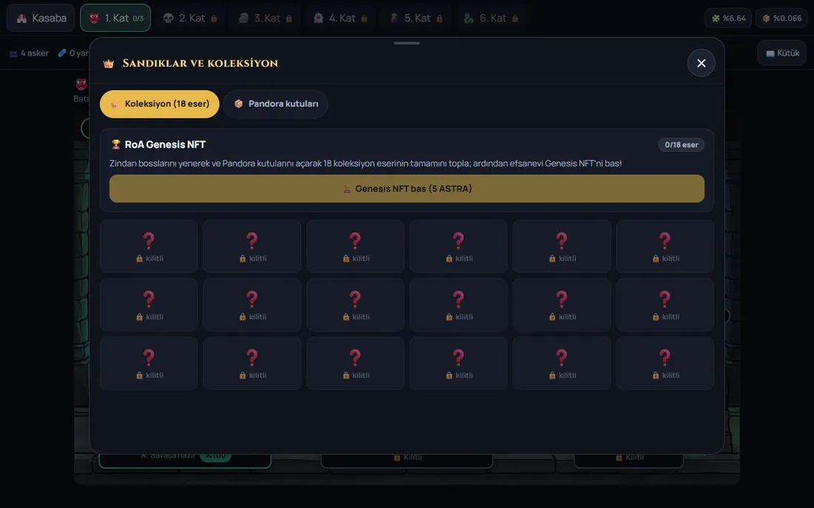
- Pandora kutuları zindan savaşlarında canavar öldürerek düşer; kutuyu İlan Pazarında oyunculara satabilir ya da oradan alabilirsin. Her kutuyu açmak 1 anahtar ister. Anahtar çok değerlidir (oyundaki en değerli ikinci şey): Kolezyum haftalık sıralamasında ilk 3'e birer tane verilir; başka yerden çıkmaz. Oyuncular anahtarı birbirine İlan Pazarında adet + birim fiyatla satar. Kolezyuma girmek için anahtar gerekmez.
- Eser uyandırma: keşfettiğin her eseri tek tek uyandırırsın. Bedel nadirliğe göre: yaygın 1, nadir 2, epik 4, efsanevi 8 birim. 1 birim = 2.000 ASTRA (bedel çarpanıyla) + 500 taş, 250 demir, 250 kömür, 50 şifalı ot (hammadde yakılır). Aynı anda tek eser uyanır, her biri 72 saat sürer: 18 eser en az 54 gün.
- Şartlar: hesap seviyesi en az 30, hesap en az 180 günlük, Krallık Yolu tamamlanmış, zindanın 18. kat bossu yenilmiş (Fatih), son 4 haftanın her birinde katkı kademesi en az Altın, 18 eserin hepsi uyanmış.
- Önden katkı kuralı: Genesis sahibinin ayrıcalıkları trade uygulamasına yılda yaklaşık 120 $ maliyet çıkarır. Bu yüzden Genesis basan, ekosisteme en az 3 yıllık maliyeti (360 $) önden ödemiş olmalı. Sayılan: oyunda harcadığın her ASTRA'nın harcandığı andaki dolar değeri ve yaktığın hammaddenin değeri; düşülen: oyundan cüzdanına çektiğin. Mühür bedeli de bu katkıya sayılır. Ekranda "net katkın" çubuğu gösterilir.
- Mühür bedeli: 250 $ değerinde ASTRA (o anki fiyattan). Yarısı yakılır, yarısı her harcama gibi kasalara gider. Çoğunlukla piyasadan alımla ödendiği için her Genesis bir alım ve yakım olayıdır.
- Kaç tane basılabilir? Sezon 1'de en çok 100 numaralı Genesis. Ayrıca açık mühür sayısı trade uygulamasının gelirine bağlıdır: trade aylık gelirinin %10'u ÷ 10 $ (ör. ayda 2.000 $ gelirde 20 Genesis). Ayrıcalıklar trade gelirini yemesin diye.
- Ayrıcalıklar: trade uygulamasında süresiz Uydu üyeliği ve Gözlemevi %50 indirim, ikinci oyun Universe'te gezegen satın alma hakkı (bkz. Uzay Limanı), stake sitesinde ödül çarpanı, kapı sırasında öncelik. Haklar NFT ile taşınır: Genesis satılırsa alıcıya geçer.
Sirius Konseyi: ortak projeler ve ortak kasa
Oyunun "devlet dairesi". Herkesin ortak çıkarma kapasitesi, ortak kasalar ve topluca yapılan büyük projeler burada.
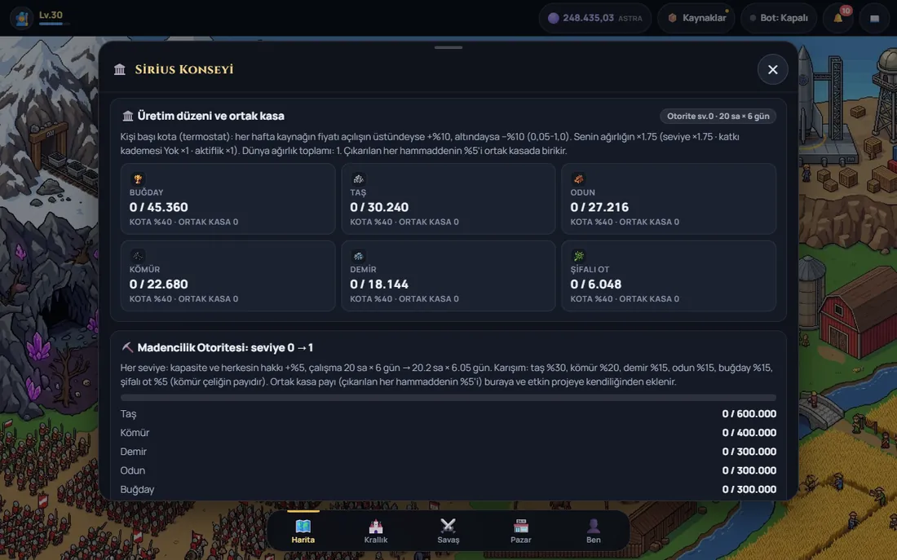
Kota ve "dengeleyici"
Her hammaddenin haftalık bir çıkarma kapasitesi vardır. Bunun içinden herkesin payı çıkar (üretim hakkın). Pay, bir dengeleyici (termostat) ile ayarlanır: bir hammaddenin fiyatı açılış fiyatının üstündeyse o hammaddenin kotası haftada %10 artar; altındaysa %10 azalır (en az %5, en çok %100). Böylece fiyat çok düşmez, çok da yükselmez.
Odun fiyatı iki hafta üst üste açılışın altına inerse, odunun kişi başı kotası küçülür; üretilen odun azalır, fiyat toparlanır. Fiyat yükselirse tersi olur.
Madencilik Otoritesi
Ortak bir yapıdır. Seviyesi her yükseldiğinde herkesin üretim hakkı %5 artar ve çalışma günü uzar. Yükseltmek için oyuncular Konseye hammadde bağışlar (taş, kömür, demir, odun, buğday, şifalı ot). Hammadde verdikçe katkı puanın da büyür.
Konsey projeleri
Her seferinde bir proje açıktır; herkes katkı verir, bitince herkes faydalanır.
| Proje | Herkese faydası |
|---|---|
| 🌉 Nehir Köprüsü | Sefer süreleri %2 kısalır. |
| 🌾 Büyük Ambar | Silo kapasitesi %5 artar. |
| 🌿 Şifa Bahçesi | Şifalı ot üretimi %5 artar. |
| ⚓ Liman Rıhtımı | Hazırlık Deposu kişi sınırı iki katına çıkar. |
| 🛡️ Savunma Duvarı | Dünya bossu savaşından erken çekilme cezası %18'den %12'ye iner. |
Her proje, çok miktarda hammadde ve ayrıca emek puanı ister. Emek puanını köylülerin üretir (köylü başına günde 1). En çok katkı yapan oyuncular rozet kazanır.
Ortak kasa
Çıkarılan her hammaddenin %5'i kendiliğinden Konseyin ortak kasasına eklenir; Otorite ve aktif proje bundan beslenir. Kendi cebinden bir şey çıkmaz; üretimin küçük bir parçası ortak işlere gider.
Ekonomi: ASTRA nereden gelir, nereye gider?
En önemli bölüm: oyunun parası kapalı bir döngüdür. Hiçbir ödül havadan basılmaz; her ödül bir kasadan çıkar.
Oranların, bütçelerin ve çekim kurallarının tam hali: ASTRA nereye gider · Kasaların bütçesi · Kilitli bakiye · ASTRA çekimi (haftalık ve küresel limitler) · Bütün limitler.
100 ASTRA harcadığında ne olur?
| Pay | Nereye? | Ne işe yarar? |
|---|---|---|
| %86 | Oyun kasaları | Zindan, Kolezyum, boss, görev ödülleri bu kasalardan ödenir. |
| %6 | Temel gelir (UBI) | Haftalık olarak aktif oyunculara paylaştırılır. |
| %5 | Yakım | Sonsuza kadar oyundan silinir; arzı azaltır. |
| %3 | Yapımcı payı | Oyunu geliştirenlere giden pay. |
Bir asker için 100 ASTRA ödedin. 86'sı kasalara gider (zindan kasasına, Kolezyum havuzuna…), 6'sı bu haftanın temel gelir havuzuna katılır, 5'i yanar, 3'ü yapımcıya gider. Yani paran kaybolmuyor: büyük kısmı diğer oyunculara ödül olarak dönüyor.
Kasalar
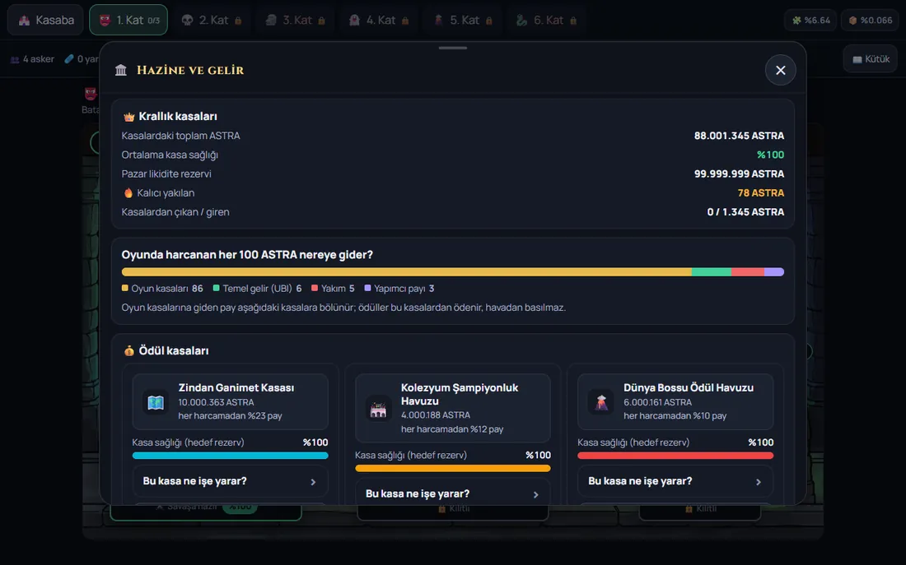
| Kasa | Neyi öder? |
|---|---|
| 🗺️ Zindan Ganimet Kasası | Zindan savaş ödülleri |
| 🏟️ Kolezyum Şampiyonluk Havuzu | Kolezyum maç ve haftalık sıralama ödülleri |
| 🌋 Dünya Bossu Ödül Havuzu | Haftalık boss savaşı payları |
| 🛡️ Pazar Geri Alım Kasası | Fiyat düşünce hammadde alıp yakar |
| 📜 Görev ve Ücretsiz Oyuncu Kasası | Krallık Yolu görevleri, promo kodları, ücretsiz oyuncu payı |
| 🎪 Karnaval Ödül Havuzu | Çark ve piyango ödülleri |
| 👑 Fatih Kasası | Zindanın 18. katındaki son canavarın ödülü |
| 🏛️ Sirius Konseyi Kasası | Konsey projeleri |
| 🚀 Universe Tohum Rezervi | İkinci oyun için ayrılmış, kilitli |
Kasa sağlığı bir kasanın ne kadar dolu olduğunu söyler. Kasa zayıflarsa ödüller kendiliğinden küçülür, doluysa büyür; böylece kasalar uzun yıllar dayanır.
🔒 Kilitli bakiye
Kazandığın ASTRA'nın küçük bir kısmı hemen kullanılabilir (serbest); büyük kısmı kilitli gelir. Kilitli ASTRA oyunda harcanabilir ama çekilemez. Harcadıkça, oynadıkça ve zamanla açılır:
- Kazancının %20'si serbest, %80'i kilitli gelir.
- Bir şey satın alırken önce kilitli bakiye kullanılır; harcadığının %20'si kadar kilit de açılır.
- Her hafta kilitli bakiyenin %1'i kendiliğinden açılır; her gün oyuna girersen üstüne haftada %1,4 daha açılır (toplam yaklaşık %2,4).
Zindandan 100 ASTRA kazandın → 20'si serbest, 80'i kilitli. Demirhanede 50 ASTRA harcadın → 50'si kilitliden düşer, ayrıca 10 ASTRA'nın kilidi açılır. Böylece oyunda harcadıkça paranın daha çoğu çekilebilir hale gelir.
🤝 Temel gelir (UBI)
Her harcamanın %6'sı haftalık temel gelir havuzunda birikir. Pazartesi 00:01'de (Türkiye saati) havuz açılır; payın seviyene göre belirlenir ve haftada bir kez talep edersin. Havuzdaki toplam, "Karakterim" ve "Hazine" ekranlarında görünür.
🌐 Ekonomi panosu
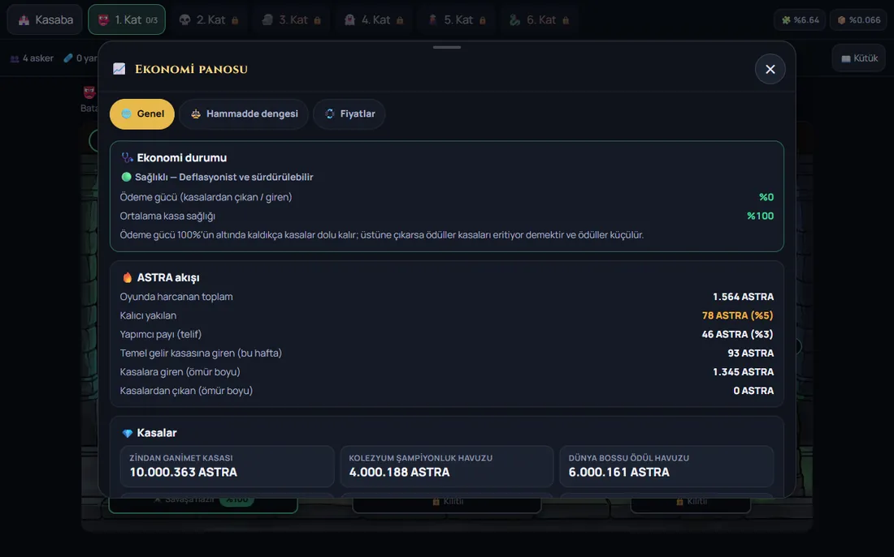
Burada oyunun genel durumunu görürsün: "🟢 Sağlıklı", ödeme gücü (kasalardan çıkan / giren), ortalama kasa sağlığı ve yakılan miktarlar. Ödeme gücü %100'ün altında kaldıkça kasalar dolu kalır; üstüne çıkarsa ödüller kasaları eritiyor demektir ve ödüller küçülür.
Harcadığın her ASTRA'nın büyük kısmı başka oyunculara ödül olarak döner, küçük kısmı yanar. Kazandığın ASTRA kilitli başlar ve harcadıkça açılır. Oyun, kasaları boşaltmamak için ödülleri kendiliğinden ayarlar.
Hesabım: giriş, bakiyeler ve cüzdan
Hesabının kimliği, parası ve güvenliği burada. Üst çubuktaki ASTRA bakiyesine dokunarak açarsın.
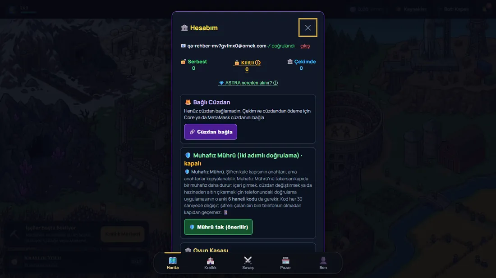
Giriş: e-posta ve şifre
- Hesabını e-posta ve şifre ile açarsın; e-postandaki bağlantıya tıklayarak doğrularsın.
- Doğrulanmamış hesap oyun dünyasında gezebilir ama işlem yapamaz ve ücretsiz oyuncu payı alamaz.
- Şifreni unutursan giriş ekranından "şifremi unuttum" ile e-postana sıfırlama bağlantısı gelir; şifre değişince tüm cihazlardan çıkış yapılır.
Üç bakiye
Serbest
Hemen harcayabileceğin ve çekim talep edebileceğin ASTRA.
Kilitli
Oyunda harcanır ama çekilemez; harcadıkça ve zamanla açılır.
Çekimde
Çekim talep ettin, haftalık hesaplaşmada sana ödenmeyi bekliyor.
Cüzdan bağlama
Çekim yapmak ya da cüzdanından ödeme yapmak için Core ya da MetaMask cüzdanını bağlarsın. Güvenlik için üç adım vardır:
- Cüzdanından bir mesajı imzalarsın (para göndermez; yalnızca "bu cüzdan benim" der).
- E-postana gelen bağlantıyla onaylarsın.
- Daha önce başka bir cüzdan bağlıysa değişiklik 48 saat sonra geçerli olur; o zamana kadar ödemeler eski cüzdana gider ve "bu ben değilim" diyerek iptal edebilirsin.
Hiçbir zaman cüzdanının gizli kelimelerini (seed) ya da özel anahtarını bir siteye, kişiye ya da bu oyuna yazma. Oyun bunları asla istemez; yalnızca imza ister.
🏦 Oyun Kasası
Sen yokken çalışan işler (bot ücreti, pasif iyileşme, botun pazar işlemleri, alet onarımı) önce oyunda kazandığın bakiyeden ödenir; yetmezse Oyun Kasası'ndan. Kasa, sana ait küçük bir "cep harçlığı" kesesidir:
- Kasadaki para senindir; istediğin an kesintisiz çekebilirsin.
- Kasanın bir üst sınırı vardır (yaklaşık 30 günlük harcaman). Fazlası güvenliğin için kendiliğinden bağlı cüzdanına geri gönderilir.
- Kasan ve kazandığın bakiye biterse: pasif iyileşme durur, bot ücreti yenilenemez, bot durur ve aletler onarılamaz.
Kasana yalnızca birkaç günlük harcamalık ASTRA koy; biriken servetini kendi cüzdanında tut.
🏧 Kazanç çekimi
- Yalnızca ASTRA'nın serbest kısmı çekilir.
- Talepler Pazartesi 00:01'de (Türkiye saati) haftalık ortak havuzdan karşılanır.
- Havuzdan payın, katkı puanına göre belirlenir ("bu haftaki tahmini hakkın").
- Ücret %3; hakkını aşan kısım için %1,5 "hak kirası" ödersin. Sığmayan kısım bakiyene döner.
- Piyasa sert düştüğünde oyun bir fren devreye alır: o zaman ücret %6 olur.
Serbest bakiyende 5.000 ASTRA var ve 3.000'ini çekmek istiyorsun (en az çekim 1.000 ASTRA'dır). Haftalık hakkın 2.000 ASTRA ise: 2.000'i normal çekilir (%3 ücretle); aşan 1.000 için başkalarının kullanmadığı hak varsa onu kiralarsın (%1,5 kira), yoksa sığmayan kısım bakiyene döner ve gelecek hafta tekrar denersin.
🎟️ Promo kodu
Elinde bir promo kodu varsa Hesabım'ın en altına yazarsın. Her kod bir hesapta bir kez kullanılır; ASTRA ödülü kilitli gelir.
Muhafız Mührü (iki adımlı doğrulama)
Şifren kale kapısının anahtarıdır; ama anahtarlar kopyalanabilir. Mühür, kapıya ikinci bir muhafız dikmektir.
- Mührü taktığında giriş yaparken, cüzdan değiştirirken ve para çekerken telefonundaki doğrulama uygulamasının o anki 6 haneli kodu da gerekir.
- Kod her 30 saniyede değişir; şifreni çalan biri bile telefonun olmadan geçemez.
- Mührü takınca sana 10 yedek kod verilir. Bunları güvenli bir yere yaz: telefonunu kaybedersen bu kodlarla girebilirsin. Her kod bir kez kullanılır.
- Yedek kodların azaldığında Hesabım → Yedek kodları yenile ile 10 yeni kod üretebilirsin (eskiler geçersiz olur).
Telefonumu da yedek kodlarımı da kaybettim!
Paran içeride kalmasın diye bir kurtarma yolu vardır; ama bilerek yavaş ve güvenli tasarlanmıştır:
- Oyunun yöneticisine ulaş ve kimliğini kanıtla.
- Yönetici, yönetim panelinden Muhafız Mührü sıfırlamasını başlatır. Sana hiçbir kod gönderilmez.
- E-postana "mühür 48 saat sonra kaldırılacak" uyarısı ve bir iptal bağlantısı gelir. İstemiyorsan hemen iptal edersin.
- 48 saat sonra mühür kalkar; yalnız şifrenle girersin ve yeni telefonuna yeniden takarsın.
Sıfırlama başlayınca, hâlâ giriş yapabiliyorsan Hesabım ekranında kırmızı bir uyarı görürsün: "Mühür … tarihinde kalkacak". Bunu sen istemediysen oradaki "Bu ben değilim, iptal et" düğmesine basarsın (doğrulama kodunu ister); e-postadaki bağlantı da aynı işi görür.
Biri senin e-postanı ya da şifreni ele geçirse bile, gerçek sahibe itiraz etmesi için süre kalır. Bekleme boyunca mühür çalışmaya devam eder, para çekimi için hâlâ kod ister.
Kapı: vatandaşlık, bekleme sırası ve izin
Oyun dengeli kalsın diye aynı anda oynayabilecek vatandaş sayısı sınırlıdır. Yer açılana kadar bir bekleme sırası vardır.
- İlk dönemde 100 vatandaş. Sınır, oyunun ekonomisi büyüdükçe yönetim tarafından kademeli artırılır.
- Kayıt her zaman açık. Yer yoksa sıraya girersin; sırada gezebilir ama işlem yapamazsın.
- Sıradayken 3 küçük onay adımını (rehber, kurallar, "hazırım") tamamlarsan hazır aday olursun; yer açılınca önce hazır adaylara davet gider.
- Davet 72 saat geçerlidir. İlk gerçek oyun hareketin daveti kabul eder; cevapsız kalırsan sırada 3 basamak geriye düşersin, elenmezsin.
- Her hesap tek cüzdana bağlıdır; kayıt harcı çok küçüktür (1 ASTRA).
Katılım puanı ve izin
"Aktif vatandaş" olmak için haftada belli sayıda farklı alana dokunman yeter: sefer, bakım, Kışla, zindan, Kolezyum, dünya bossu, pazar, Konsey, Karnaval, rehber görevi. Aynı şeyi tekrar etmek ek puan getirmez. Gereken sayı seviyenle yavaşça yükselir (2'den 6'ya kadar).
- 2 hafta düşük kalırsan bir bildirim alırsın.
- 3 hafta düşük kalırsan "izin ister misin?" sorusu gelir; 72 saat içinde cevaplarsın. Evet dersen yılda 30 güne kadar izin hakkından (blok başına en çok 14 gün) kullanılır.
- İzindeyken yerin korunur; ama o dönemde üretim hakkı ve temel gelir payı almazsın.
- Cevap vermezsen hesabın askıya alınır; döndüğünde sıranın önüne geçersin.
- Hiçbir zaman hesabın ya da verin silinmez.
Uzay Limanı ve Universe'e hazırlık
Realm of AdAstra, ileride açılacak ikinci oyun Universe'ün hazırlık sahasıdır. Bu ekran, oraya hazırlığını gösterir.
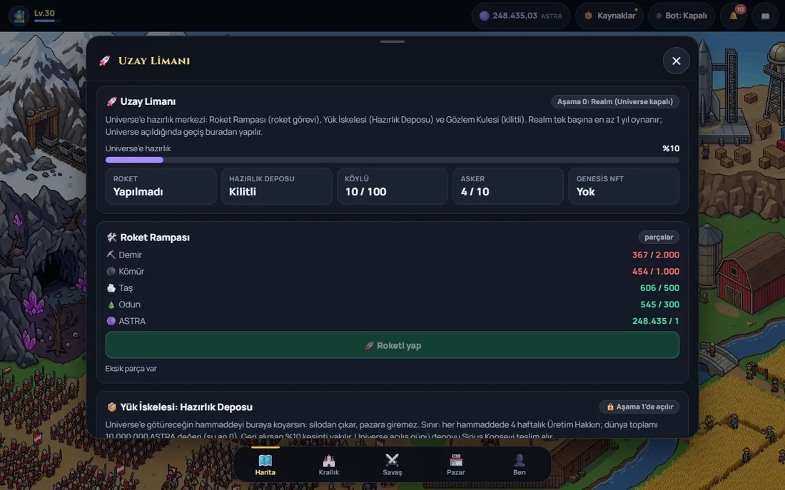
- Roket Rampası: parçalar ister (2.000 demir, 1.000 kömür, 500 taş, 300 odun ve 1 ASTRA). Roketi yapınca "Roket hazır" rozeti ve hazırlık puanı kazanırsın.
- Yük İskelesi (Hazırlık Deposu): Universe'e götüreceğin hammaddeyi buraya koyarsın. Silodan çıkar, pazara giremez. Kişi başı sınır 4 haftalık üretimindir. Aşama 1'de açılır.
- Gözlem Kulesi: şimdilik kilitli; Konsey göstergelerine kısayoldur.
- Hazırlık yüzdesi: roket, depo doluluğu, köylü sayısı (100'e göre), asker sayısı (10'a göre) ve Genesis NFT'den oluşur.
Realm tek başına en az 1 yıl oynanacak şekilde tasarlandı. Universe açıldığında geçiş buradan yapılacak; o güne kadar hazırlıklar yeterince zaman alır.
Bu bölüm: oyunun bütün sayıları
Bu oyun bir yatırım ve strateji oyunudur; ne kadar kazanıp ne kadar harcayacağını baştan bilmek senin hakkındır. Aşağıdaki bölümlerde her bedel, her limit ve her formül açıkça yazılı.
Her başlıkta önce kural (düz cümleyle), sonra formül, sonra örnek ve tablolar var. Uzun tablolar "aç / kapa" kutularının içindedir. Sayıların hepsi oyunun ayar dosyasından ve hesap kodundan otomatik üretilmiştir; elle yazılmış sayı yoktur.
Önce şunları bil
- Sürüm: 2.0.0-dev · Hazırlanma: 15 Ekim 2026. Oyun şu an deneme aşamasındadır: sayılar test sonuçlarına göre ayarlanabilir. Bir ayar değişirse bu sayfa da yenilenir.
- Kesin güncel değer her zaman oyunun ilgili ekranındadır (Kotalarım, Silo, Karakterim, Ekonomi panosu, Hazine). Bu sayfa nasıl hesaplandığını ve temel değerleri anlatır.
- ASTRA bedelleri "temel fiyattır". Oyunda ASTRA'nın dolar değeri çok düşerse ya da yükselirse bedeller bir fiyat çarpanıyla ölçeklenir (fiyat çarpanı). Çarpan 1,0 iken değerler aynen bu sayfadaki gibidir.
- Hammadde karşılıklı ASTRA değerleri (örneğin "seviye bedeli 15,77 ASTRA") pazarın açılış fiyatıyla hesaplanmıştır. Pazar fiyatı oynadıkça bu ASTRA kısmı da oynar.
- Haftalık sıfırlama her Pazartesi 00:01'dedir (Türkiye saati). "Günlük" sayaçlar da Türkiye saatiyle gece yarısı yenilenir.
Hızlı gitmek için
- Bütün limitler tek tabloda (günlük, haftalık, küresel)
- ASTRA nereye gider · Ödül kasaları · ASTRA çekimi · Kilitli bakiye
- Üretim ve sefer · Günlük ve haftalık kota · Otorite ve Konsey
- Seviye atlama bedelleri · Silo bedelleri · Asker ve teçhizat · Köy ve bot
- Pazar formülleri · Zindan, Kolezyum, boss, çark, piyango · Temel gelir ve ücretsiz havuz · Zincir sınırları
Bütün limitler tek tabloda
Oyunda "en fazla şu kadar" diyen her sınır: günlük, haftalık ve küresel (herkesin ortak) limitler. Ayrıntısı ilgili bölümde.
⛏️ Hammadde çıkarma (kota)
| Limit | Süre | Değer | Kimin için? |
|---|---|---|---|
| Kişisel haftalık çıkarma hakkın (Üretim Hakkı) | Haftalık | Her hammadde için ayrı: temel üretim × çalışma süresi × kota katsayısı × senin ağırlığın. Başlangıç ayarlarında ağırlığı 1,0 olan oyuncuya buğdaydan 129.600 birim | Sana özel |
| Günlük açılan pay | Günlük | Haftalık hakkın her gün 1/7'si açılır; kullanmadığın birikir (yalnız o hafta içinde) | Sana özel |
| Başkasının kullanmadığı hak | Günlük | Kendi hakkın bitince, toplam çıkardığın miktar açılmış payının 3 katına varana dek (ortak kapasitede boş yer varsa) çıkarabilirsin | Sana özel |
| Dünyanın toplam haftalık kapasitesi | Haftalık | Tüm aktif oyuncuların ağırlıkları toplamı × birim hak. Oyuncu arttıkça kapasite büyür, kişi başı hak değişmez | Küresel (herkes) |
| Kota katsayısı (termostat) | Haftalık | Başlangıç 0,4; her hafta fiyata göre en çok ±%10; en az 0,08, en çok 1,2 | Küresel (her hammadde ayrı) |
| Stamina (enerji) | Sürekli | En çok: 100 + 50 × (seviye − 1) (ya da 6 alanı aynı anda başlatmaya yetecek kadar); her 150 saniyede 1 yenilenir | Sana özel |
🏦 ASTRA çekimi
| Limit | Süre | Değer | Kimin için? |
|---|---|---|---|
| En az çekim | Talep başına | 1.000 ASTRA (sunucu ayarı) | Sana özel |
| Çekilebilir bakiye | Anlık | Yalnız serbest bakiyen (kilitli ve sponsorlu kısım çekilemez) | Sana özel |
| Çekim zamanı | Haftalık | Talepler yalnız Pazartesi 00:01'de, haftalık havuzdan karşılanır. Günlük çekim yoktur | Herkes |
| Haftalık çekim havuzu (akış dengesi) | Haftalık | En küçüğü: haftalık trade alımının %50'si, haftalık net piyasa alımının %50'si, fiyatı en çok %2 düşürecek miktar × k. Taban yok: trade alımı yoksa çekim de yok. Yapımcı payı da bu havuzdan ödenir | Küresel (herkes) |
| Kişisel pay | Haftalık | Havuz × senin katkı puanın ÷ herkesin toplam puanı; kullanılmayan paylar isteyenlere kiralanır | Sana özel |
| Çekim ücreti | Çekim başına | %3 (fren açıkken %6); ücretin yarısı temel gelire, yarısı yakıma. Kiraladığın hak için %1,5 kira | Sana özel |
| Sunucunun haftalık gönderim güvenlik tavanı | Haftalık | 100.000.000 ASTRA (sunucu ayarı; ayrıca oyun cüzdanının bakiyesini aşamaz) | Küresel (herkes) |
| Oyun Kasası çekimi | Anlık | Kesintisiz ve havuzsuz: kasaya sen koyduğun senin paran | Sana özel |
🏛️ Ödül kasaları
| Limit | Süre | Değer | Kimin için? |
|---|---|---|---|
| Her kasanın haftalık ödeme bütçesi | Haftalık | Kasa × oran × Ödeme Kadranı × sağlık + son 4 hafta girişinin ortalamasının %90'ı. Kadran 0,6 – 1,5 arası (fiyat yükselirken büyür, düşerken küçülür; "ASTRA çekimi" bölümünde). Oranlar: zindan %2,5, kolezyum %2, boss %3, görev %2,5, karnaval %2 | Küresel (herkes) |
| Kişi başı haftalık pay tavanı | Haftalık | Bütçe × 3 ÷ aktif oyuncu (en az 10 sayılır) | Sana özel |
| Tek ödül | İşlem başı | Kasanın en çok %2'si | Herkes |
| Kasa zayıfsa ödül küçülür | Anlık | Kasa sağlığı < 1 ise ödül sağlıkla çarpılır (en az %15 kalır) | Herkes |
⚔️ Oyun içi günlük ve haftalık sınırlar
| Limit | Süre | Değer | Kimin için? |
|---|---|---|---|
| Zindan: ödüllü giriş | Günlük | 5 giriş (ilk giriş silahı aşındırmaz). 6. girişten sonra kapı harcı: katın ödülünün %20'si | Sana özel |
| Zindan: kişisel ASTRA tavanı | Günlük | En az 5 ödüllü girişin değeri; ya da orduya harcadığın × 0,7 ÷ 93 (hangisi büyükse) | Sana özel |
| Zindan kasası günlük bütçesi | Günlük | Kasanın %0,36'sı | Küresel (herkes) |
| Kolezyum: maç | Günlük | 10 maç; her maça 10 ASTRA ve 12 stamina | Sana özel |
| Kolezyum: ödül | Günlük | En çok 125 ASTRA | Sana özel |
| Kolezyum: gerçek rakip sıralaması | Haftalık | İlk 10 oyuncu; kolezyum kasasının %2'si paylaşılır | Küresel (herkes) |
| Dünya bossu | Haftalık | Pazar 18:00 (TSİ) tek savaş; havuz boss kasasının %3'ü | Küresel (herkes) |
| Çark: hammaddeyle çevirme | Günlük | 3 çevirme (ASTRA ile çevirmenin günlük sınırı yok) | Sana özel |
| Çark: kasa şartı | Anlık | Karnaval kasasında en az 200 ASTRA yoksa çark kapanır | Küresel (herkes) |
| Piyango bileti | Günlük | Hesap başına en çok 100 bilet | Sana özel |
| Pazar: tek işlem | İşlem başı | Havuzdaki malın en çok %5'i | Herkes |
| Pazar: fiyat koridoru | Sürekli | Fiyat açılışın 0,5 katının altına inemez, 2,5 katının üstüne çıkamaz | Herkes |
| İlan pazarı | Sürekli | En çok 10 açık ilan; ilan 7 gün durur; komisyon %2 | Sana özel |
| Temel gelir (UBI) | Haftalık | 3. seviyeden itibaren; tek kişi haftalık kasanın en çok %5'ini alır | Sana özel |
| Ücretsiz oyuncu havuzu | Haftalık | Görev kasasının en çok %1,5'i; aylık piyasa değerinin %1'i; kişi başı en çok 100 $/ay | Küresel (herkes) |
| Krallık Yolu görev ödülleri | Hesap başına | Toplam 994 ASTRA (47 görev 494 + 10 bölüm bonusu 400 + final 100) | Sana özel |
🏘️ Yapı ve kayıt sınırları
| Limit | Süre | Değer | Kimin için? |
|---|---|---|---|
| Silo seviyesi | Kalıcı | 18 seviye; ikinci oyun (Universe) açılana kadar en çok 49 | Sana özel |
| Köy evi | Kalıcı | En çok 20 ev ve ev sayısı hesap seviyeni geçemez; ev başına 10 köylü | Sana özel |
| Asker sayısı | Kalıcı | Her asker 1 köylü ister (200 köylüye kadar); zindan asker hakkı = geçtiğin kat + 1 (Normal modda 2-7); tek zindan savaşına en çok 25 asker | Sana özel |
| Vatandaş sayısı (kapı) | Sürekli | Başlangıç sınırı 100; aynı internet adresinden günde en çok 3 yeni vatandaş; kayıt harcı 1 ASTRA | Küresel (herkes) |
| Kasa sözleşmesi: tek ödeme | İşlem başı | Kasadaki paranın en çok %2'si (kontratta sahibin bile üst sınırı %10) | Küresel (herkes) |
| Kasa sözleşmesi: günlük toplam | Kayan 24 saat | Kasadaki paranın en çok %5'i (kontratta sahibin bile üst sınırı %30) | Küresel (herkes) |
ASTRA nereye gider? (harcama bölüşümü)
Oyunda harcadığın her ASTRA dört yere bölünür. Hiçbir ASTRA yok olmaz ve havadan yenisi basılmaz: ya yakılır ya da başka bir kasaya geçer.
Her harcamanın bölüşümü
| Pay | Oran | 1.000 ASTRA harcayınca | Ne olur? |
|---|---|---|---|
| 🔥 Yakım | %5 | 50 ASTRA | Kalıcı olarak silinir (haftalık hesaplaşmada ölü adrese gönderilir); arz azalır |
| 🎨 Yapımcı payı | %3 | 30 ASTRA | Sabit yapımcı cüzdanına gider |
| 🤝 Temel gelir (UBI) | %6 | 60 ASTRA | O haftanın temel gelir kasasında birikir; Pazartesi 00:01'de oyunculara dağıtılır |
| 🏛️ Ödül kasaları | %86 | 860 ASTRA | Aşağıdaki 8 kasaya bölünür |
Kasalara bölüşüm (hazine payının içinde)
Hazineye giden %86, sabit oranlarla sekiz kasaya dağılır. 1.000 ASTRA harcandığında her kasaya düşen miktar yanda yazılıdır:
| Kasa | Hazine payının %'si | 1.000 ASTRA harcayınca | Ne ödeme yapar? |
|---|---|---|---|
| 🗺️ Zindan Ganimet Kasası | %21 | 181 ASTRA | Zindan zafer ödülleri |
| 🏟️ Kolezyum Şampiyonluk Havuzu | %9 | 77,8 ASTRA | Kolezyum maç ödülü ve haftalık ilk 10 |
| 🌋 Dünya Bossu Ödül Havuzu | %17 | 146,6 ASTRA | Pazar günkü boss savaşı payları |
| 🛡️ Pazar Geri Alım Kasası | %21 | 181,5 ASTRA | Fiyat düşünce hammadde alıp yakar (oyuncuya ödeme yapmaz) |
| 📜 Görev ve Ücretsiz Oyuncu Kasası | %13 | 112,2 ASTRA | Krallık Yolu, promo kodları, ücretsiz oyuncu payı |
| 🎪 Karnaval Ödül Havuzu | %9 | 77,8 ASTRA | Çark ve piyango ödülleri |
| 👑 Fatih Kasası | %5 | 43 ASTRA | 18. kat bossunu ilk kez yenene Fatih Ödülü |
| 🚀 UOA Tohumu (kilitli) | %4,7 | 40 ASTRA | İkinci oyun UOA için biriktirilir (kilitli) |
Bu bölüşüm RealmRates adlı bir zincir sözleşmesinden okunur; değiştirmek için 24 saatlik bekleme gerekir. Yani oranlar bir gecede değişemez, herkes önceden görür.
Başlangıç parası: 200 milyon ASTRA nereye ayrıldı?
| Yer | Başlangıç tohumu | Not |
|---|---|---|
| 🏪 Pazar havuzları | 92.180.000 ASTRA | 6 hammaddeye 90.000.000, parça/anahtar/kutu/parşömenlere 2.180.000 |
| 🗺️ Zindan Ganimet Kasası | 18.699.241 ASTRA | Ödeme kasası |
| 🏟️ Kolezyum Şampiyonluk Havuzu | 10.034.238 ASTRA | Ödeme kasası |
| 🌋 Dünya Bossu Ödül Havuzu | 13.875.237 ASTRA | Ödeme kasası |
| 🛡️ Pazar Geri Alım Kasası | 17.098.571 ASTRA | Ödeme kasası |
| 📜 Görev ve Ücretsiz Oyuncu Kasası | 12.336.571 ASTRA | Ödeme kasası |
| 🎪 Karnaval Ödül Havuzu | 10.347.571 ASTRA | Ödeme kasası |
| 👑 Fatih Kasası | 21.428.571 ASTRA | Yalnız 18. kat bossu için |
| 🚀 UOA Tohumu (kilitli) | 0 ASTRA | İkinci oyun UOA açılana kadar kimse kullanamaz; harcamanın %4'üyle dolar |
| 🎟️ Piyango kasası | 4.000.000 ASTRA | Kazanan ödülünü buradan alır |
Toplam: 200.000.000 ASTRA.
Bir askere 205,12 ASTRA ödedin. 10,26 yanar, 6,15 yapımcıya gider, 12,31 temel gelir kasasına girer, kalan 176,4 sekiz kasaya dağılır (zindan kasasına 37,13 gibi).
Zindan kapı harcı yüzde yüz zindan kasasına gider. Çarkın ASTRA ile çevirme bedelinin %80'i doğrudan karnaval kasasına, kalan %20'i normal bölüşüme girer. Piyango biletlerinin %98'si piyango kasasına, %2'si amorti kasasına gider.
Üretim hızı, sefer süresi ve stamina
Bir seferin ne kadar sürdüğü, ne kadar ürün getirdiği ve ne kadar enerji harcadığı. Seviye atladıkça dakikalık üretim biraz artar, sefer süresi çok uzar.
1) Dakikalık temel üretim
| Hammadde | Dakikada | Saatte | Günde (24 saat) | Açılış fiyatı (1 birim) |
|---|---|---|---|---|
| 🌾 Buğday | 45 | 2.700 | 64.800 | 0,009 ASTRA |
| 🪨 Taş | 30 | 1.800 | 43.200 | 0,012 ASTRA |
| 🌲 Odun | 27 | 1.620 | 38.880 | 0,025 ASTRA |
| ⚫ Kömür | 22,5 | 1.350 | 32.400 | 0,018 ASTRA |
| ⛏️ Demir | 18 | 1.080 | 25.920 | 0,04 ASTRA |
| 🌿 Şifalı Ot | 6 | 360 | 8.640 | 0,08 ASTRA |
Bu değerler 1. seviyedeki hızdır. Her seviye atlayışta üretim %1 artar; ayrıca köylü bonusu eklenir.
Dakikalık üretim = temel hız × (1 + 0,01 × (seviye − 1)) × (1 + köylü bonusu)
Köylü bonusu = her 10 köylü için +%1, en çok +%20 (200 köylüde dolar). Şifa Bahçesi projesi bitince şifalı ota ayrıca +%5.
30. seviyede buğday: 9 × (1 + 0,01 × 29) = 9 × 1,29 = 11,61 / dakika. 100 köylün varsa bonus +%10: 11,61 × 1,10 = 12,77 / dakika.
2) Sefer süresi
Sefer süresi (dakika) = 18 + (seviye − 1) × 53,78
1. seviyede 18 dakika, 81. seviyede 72 saat. Nehir Köprüsü projesi bitince süreler %2 kısalır.
3) Bir seferin getirisi ve maliyeti
Sefer ürünü = dakikalık üretim × sefer süresi (en az 10 birim). Sefer başladığı andaki hız geçerlidir; sefer sırasında seviye atlamak geçmişe dönük artırmaz.
Sefer XP'si = 35 × sefer süresi (saat), en az 5.
Sefer stamina bedeli = 12 × (sefer süresi ÷ 18 dk) × üretim çarpanı × 0,99 (seviye − 1)
En çok stamina = 100 + 50 × (seviye − 1); ama en az 6 alanı birden başlatmaya yetecek kadar (sefer bedelinin 6,5 katı).
Stamina yenilenmesi: her 150 saniyede 1 (saatte 24). İstersen buğdayla doldurursun: 1 stamina = 5 buğday.
Aşağıda seçili seviyeler görünüyor (köylü bonusu hariç, yalın değerler). Bütün seviyelerin tablosu bu başlığın en altında.
| Seviye | Sefer süresi | Üretim çarpanı | 🌾 Buğday | 🪨 Taş | 🌲 Odun | ⚫ Kömür | ⛏️ Demir | 🌿 Şifalı Ot | Sefer stamina | En çok stamina | Sefer XP'si |
|---|---|---|---|---|---|---|---|---|---|---|---|
| Lv.1 | 18 dk | ×1 | 810 | 540 | 486 | 405 | 324 | 108 | 12 ⚡ | 100 ⚡ | 10 |
| Lv.2 | 72 dk | ×1,01 | 3.272 | 2.181 | 1.963 | 1.636 | 1.308 | 436 | 48 ⚡ | 320 ⚡ | 42 |
| Lv.3 | 2,1 sa | ×1,02 | 5.783 | 3.855 | 3.470 | 2.891 | 2.313 | 771 | 84 ⚡ | 550 ⚡ | 73 |
| Lv.5 | 3,9 sa | ×1,04 | 10.904 | 7.269 | 6.542 | 5.452 | 4.361 | 1.453 | 155 ⚡ | 1.010 ⚡ | 135 |
| Lv.10 | 8,4 sa | ×1,09 | 24.623 | 16.415 | 14.773 | 12.311 | 9.849 | 3.283 | 333 ⚡ | 2.170 ⚡ | 292 |
| Lv.15 | 12,9 sa | ×1,14 | 39.552 | 26.368 | 23.731 | 19.776 | 15.820 | 5.273 | 509 ⚡ | 3.310 ⚡ | 449 |
| Lv.20 | 17,3 sa | ×1,19 | 55.692 | 37.127 | 33.415 | 27.846 | 22.276 | 7.425 | 682 ⚡ | 4.440 ⚡ | 606 |
| Lv.25 | 21,8 sa | ×1,24 | 73.042 | 48.694 | 43.825 | 36.521 | 29.216 | 9.738 | 850 ⚡ | 5.530 ⚡ | 763 |
| Lv.30 | 26,3 sa | ×1,29 | 91.544 | 61.029 | 54.926 | 45.772 | 36.617 | 12.205 | 1.013 ⚡ | 6.590 ⚡ | 919 |
| Lv.40 | 35,3 sa | ×1,39 | 132.293 | 88.195 | 79.375 | 66.146 | 52.917 | 17.639 | 1.324 ⚡ | 8.610 ⚡ | 1.233 |
| Lv.50 | 44,2 sa | ×1,49 | 177.883 | 118.589 | 106.730 | 88.941 | 71.153 | 23.717 | 1.610 ⚡ | 10.470 ⚡ | 1.547 |
| Lv.60 | 53,2 sa | ×1,59 | 228.316 | 152.210 | 136.989 | 114.158 | 91.326 | 30.442 | 1.869 ⚡ | 12.150 ⚡ | 1.861 |
| Lv.70 | 62,1 sa | ×1,69 | 283.514 | 189.009 | 170.108 | 141.757 | 113.405 | 37.801 | 2.099 ⚡ | 13.650 ⚡ | 2.174 |
| Lv.81 | 72 sa | ×1,8 | 349.920 | 233.280 | 209.952 | 174.960 | 139.968 | 46.656 | 2.320 ⚡ | 15.080 ⚡ | 2.520 |
📋 Bütün seviyeler (1 – 81)
| Seviye | Sefer süresi | Üretim çarpanı | 🌾 Buğday | 🪨 Taş | 🌲 Odun | ⚫ Kömür | ⛏️ Demir | 🌿 Şifalı Ot | Sefer stamina | En çok stamina | Sefer XP'si |
|---|---|---|---|---|---|---|---|---|---|---|---|
| Lv.1 | 18 dk | ×1 | 810 | 540 | 486 | 405 | 324 | 108 | 12 ⚡ | 100 ⚡ | 10 |
| Lv.2 | 72 dk | ×1,01 | 3.272 | 2.181 | 1.963 | 1.636 | 1.308 | 436 | 48 ⚡ | 320 ⚡ | 42 |
| Lv.3 | 2,1 sa | ×1,02 | 5.783 | 3.855 | 3.470 | 2.891 | 2.313 | 771 | 84 ⚡ | 550 ⚡ | 73 |
| Lv.4 | 3 sa | ×1,03 | 8.296 | 5.531 | 4.977 | 4.148 | 3.318 | 1.106 | 119 ⚡ | 780 ⚡ | 104 |
| Lv.5 | 3,9 sa | ×1,04 | 10.904 | 7.269 | 6.542 | 5.452 | 4.361 | 1.453 | 155 ⚡ | 1.010 ⚡ | 135 |
| Lv.6 | 4,8 sa | ×1,05 | 13.560 | 9.040 | 8.136 | 6.780 | 5.424 | 1.808 | 191 ⚡ | 1.250 ⚡ | 167 |
| Lv.7 | 5,7 sa | ×1,06 | 16.265 | 10.843 | 9.759 | 8.132 | 6.506 | 2.168 | 227 ⚡ | 1.480 ⚡ | 198 |
| Lv.8 | 6,6 sa | ×1,07 | 18.971 | 12.647 | 11.382 | 9.485 | 7.588 | 2.529 | 262 ⚡ | 1.710 ⚡ | 229 |
| Lv.9 | 7,5 sa | ×1,08 | 21.772 | 14.515 | 13.063 | 10.886 | 8.709 | 2.903 | 298 ⚡ | 1.940 ⚡ | 261 |
| Lv.10 | 8,4 sa | ×1,09 | 24.623 | 16.415 | 14.773 | 12.311 | 9.849 | 3.283 | 333 ⚡ | 2.170 ⚡ | 292 |
| Lv.11 | 9,3 sa | ×1,1 | 27.522 | 18.348 | 16.513 | 13.761 | 11.008 | 3.669 | 369 ⚡ | 2.400 ⚡ | 324 |
| Lv.12 | 10,2 sa | ×1,11 | 30.469 | 20.313 | 18.281 | 15.234 | 12.187 | 4.062 | 404 ⚡ | 2.630 ⚡ | 355 |
| Lv.13 | 11,1 sa | ×1,12 | 33.415 | 22.276 | 20.049 | 16.707 | 13.366 | 4.455 | 439 ⚡ | 2.860 ⚡ | 386 |
| Lv.14 | 12 sa | ×1,13 | 36.459 | 24.306 | 21.875 | 18.229 | 14.583 | 4.861 | 474 ⚡ | 3.090 ⚡ | 418 |
| Lv.15 | 12,9 sa | ×1,14 | 39.552 | 26.368 | 23.731 | 19.776 | 15.820 | 5.273 | 509 ⚡ | 3.310 ⚡ | 449 |
| Lv.16 | 13,8 sa | ×1,15 | 42.693 | 28.462 | 25.616 | 21.346 | 17.077 | 5.692 | 544 ⚡ | 3.540 ⚡ | 481 |
| Lv.17 | 14,6 sa | ×1,16 | 45.831 | 30.554 | 27.498 | 22.915 | 18.332 | 6.110 | 578 ⚡ | 3.760 ⚡ | 512 |
| Lv.18 | 15,5 sa | ×1,17 | 49.069 | 32.713 | 29.441 | 24.534 | 19.627 | 6.542 | 613 ⚡ | 3.990 ⚡ | 543 |
| Lv.19 | 16,4 sa | ×1,18 | 52.356 | 34.904 | 31.413 | 26.178 | 20.942 | 6.980 | 647 ⚡ | 4.210 ⚡ | 575 |
| Lv.20 | 17,3 sa | ×1,19 | 55.692 | 37.127 | 33.415 | 27.846 | 22.276 | 7.425 | 682 ⚡ | 4.440 ⚡ | 606 |
| Lv.21 | 18,2 sa | ×1,2 | 59.076 | 39.384 | 35.445 | 29.538 | 23.630 | 7.876 | 716 ⚡ | 4.660 ⚡ | 638 |
| Lv.22 | 19,1 sa | ×1,21 | 62.454 | 41.636 | 37.472 | 31.227 | 24.981 | 8.327 | 749 ⚡ | 4.870 ⚡ | 669 |
| Lv.23 | 20 sa | ×1,22 | 65.934 | 43.956 | 39.560 | 32.967 | 26.373 | 8.791 | 783 ⚡ | 5.090 ⚡ | 700 |
| Lv.24 | 20,9 sa | ×1,23 | 69.464 | 46.309 | 41.678 | 34.732 | 27.785 | 9.261 | 817 ⚡ | 5.320 ⚡ | 732 |
| Lv.25 | 21,8 sa | ×1,24 | 73.042 | 48.694 | 43.825 | 36.521 | 29.216 | 9.738 | 850 ⚡ | 5.530 ⚡ | 763 |
| Lv.26 | 22,7 sa | ×1,25 | 76.612 | 51.075 | 45.967 | 38.306 | 30.645 | 10.215 | 883 ⚡ | 5.740 ⚡ | 794 |
| Lv.27 | 23,6 sa | ×1,26 | 80.287 | 53.524 | 48.172 | 40.143 | 32.114 | 10.704 | 916 ⚡ | 5.960 ⚡ | 826 |
| Lv.28 | 24,5 sa | ×1,27 | 84.010 | 56.007 | 50.406 | 42.005 | 33.604 | 11.201 | 949 ⚡ | 6.170 ⚡ | 857 |
| Lv.29 | 25,4 sa | ×1,28 | 87.782 | 58.521 | 52.669 | 43.891 | 35.112 | 11.704 | 981 ⚡ | 6.380 ⚡ | 889 |
| Lv.30 | 26,3 sa | ×1,29 | 91.544 | 61.029 | 54.926 | 45.772 | 36.617 | 12.205 | 1.013 ⚡ | 6.590 ⚡ | 919 |
| Lv.31 | 27,2 sa | ×1,3 | 95.413 | 63.609 | 57.248 | 47.706 | 38.165 | 12.721 | 1.046 ⚡ | 6.800 ⚡ | 951 |
| Lv.32 | 28,1 sa | ×1,31 | 99.330 | 66.220 | 59.598 | 49.665 | 39.732 | 13.244 | 1.078 ⚡ | 7.010 ⚡ | 982 |
| Lv.33 | 29 sa | ×1,32 | 103.296 | 68.864 | 61.977 | 51.648 | 41.318 | 13.772 | 1.109 ⚡ | 7.210 ⚡ | 1.014 |
| Lv.34 | 29,9 sa | ×1,33 | 107.311 | 71.540 | 64.386 | 53.655 | 42.924 | 14.308 | 1.141 ⚡ | 7.420 ⚡ | 1.045 |
| Lv.35 | 30,8 sa | ×1,34 | 111.313 | 74.209 | 66.788 | 55.656 | 44.525 | 14.841 | 1.172 ⚡ | 7.620 ⚡ | 1.076 |
| Lv.36 | 31,7 sa | ×1,35 | 115.425 | 76.950 | 69.255 | 57.712 | 46.170 | 15.390 | 1.203 ⚡ | 7.820 ⚡ | 1.108 |
| Lv.37 | 32,6 sa | ×1,36 | 119.584 | 79.723 | 71.750 | 59.792 | 47.833 | 15.944 | 1.234 ⚡ | 8.030 ⚡ | 1.139 |
| Lv.38 | 33,5 sa | ×1,37 | 123.793 | 82.528 | 74.275 | 61.896 | 49.517 | 16.505 | 1.264 ⚡ | 8.220 ⚡ | 1.171 |
| Lv.39 | 34,4 sa | ×1,38 | 127.988 | 85.325 | 76.792 | 63.994 | 51.195 | 17.065 | 1.294 ⚡ | 8.420 ⚡ | 1.202 |
| Lv.40 | 35,3 sa | ×1,39 | 132.293 | 88.195 | 79.375 | 66.146 | 52.917 | 17.639 | 1.324 ⚡ | 8.610 ⚡ | 1.233 |
| Lv.41 | 36,2 sa | ×1,4 | 136.646 | 91.098 | 81.988 | 68.323 | 54.658 | 18.219 | 1.354 ⚡ | 8.810 ⚡ | 1.265 |
| Lv.42 | 37,1 sa | ×1,41 | 141.049 | 94.032 | 84.629 | 70.524 | 56.419 | 18.806 | 1.384 ⚡ | 9.000 ⚡ | 1.296 |
| Lv.43 | 38 sa | ×1,42 | 145.500 | 97.000 | 87.300 | 72.750 | 58.200 | 19.400 | 1.413 ⚡ | 9.190 ⚡ | 1.328 |
| Lv.44 | 38,8 sa | ×1,43 | 149.935 | 99.957 | 89.961 | 74.967 | 59.974 | 19.991 | 1.442 ⚡ | 9.380 ⚡ | 1.359 |
| Lv.45 | 39,7 sa | ×1,44 | 154.483 | 102.988 | 92.689 | 77.241 | 61.793 | 20.597 | 1.471 ⚡ | 9.570 ⚡ | 1.390 |
| Lv.46 | 40,6 sa | ×1,45 | 159.079 | 106.053 | 95.447 | 79.539 | 63.631 | 21.210 | 1.499 ⚡ | 9.750 ⚡ | 1.422 |
| Lv.47 | 41,5 sa | ×1,46 | 163.724 | 109.149 | 98.234 | 81.862 | 65.489 | 21.829 | 1.528 ⚡ | 9.940 ⚡ | 1.453 |
| Lv.48 | 42,4 sa | ×1,47 | 168.351 | 112.234 | 101.011 | 84.175 | 67.340 | 22.446 | 1.555 ⚡ | 10.110 ⚡ | 1.484 |
| Lv.49 | 43,3 sa | ×1,48 | 173.093 | 115.395 | 103.856 | 86.546 | 69.237 | 23.079 | 1.583 ⚡ | 10.290 ⚡ | 1.516 |
| Lv.50 | 44,2 sa | ×1,49 | 177.883 | 118.589 | 106.730 | 88.941 | 71.153 | 23.717 | 1.610 ⚡ | 10.470 ⚡ | 1.547 |
| Lv.51 | 45,1 sa | ×1,5 | 182.722 | 121.815 | 109.633 | 91.361 | 73.089 | 24.363 | 1.638 ⚡ | 10.650 ⚡ | 1.579 |
| Lv.52 | 46 sa | ×1,51 | 187.609 | 125.073 | 112.565 | 93.804 | 75.043 | 25.014 | 1.665 ⚡ | 10.830 ⚡ | 1.610 |
| Lv.53 | 46,9 sa | ×1,52 | 192.477 | 128.318 | 115.486 | 96.238 | 76.991 | 25.663 | 1.691 ⚡ | 11.000 ⚡ | 1.641 |
| Lv.54 | 47,8 sa | ×1,53 | 197.461 | 131.641 | 118.477 | 98.730 | 78.984 | 26.328 | 1.717 ⚡ | 11.170 ⚡ | 1.673 |
| Lv.55 | 48,7 sa | ×1,54 | 202.494 | 134.996 | 121.496 | 101.247 | 80.997 | 26.999 | 1.743 ⚡ | 11.330 ⚡ | 1.704 |
| Lv.56 | 49,6 sa | ×1,55 | 207.576 | 138.384 | 124.545 | 103.788 | 83.030 | 27.676 | 1.769 ⚡ | 11.500 ⚡ | 1.736 |
| Lv.57 | 50,5 sa | ×1,56 | 212.635 | 141.757 | 127.581 | 106.317 | 85.054 | 28.351 | 1.794 ⚡ | 11.670 ⚡ | 1.766 |
| Lv.58 | 51,4 sa | ×1,57 | 217.813 | 145.209 | 130.688 | 108.906 | 87.125 | 29.041 | 1.820 ⚡ | 11.830 ⚡ | 1.798 |
| Lv.59 | 52,3 sa | ×1,58 | 223.040 | 148.693 | 133.824 | 111.520 | 89.216 | 29.738 | 1.845 ⚡ | 12.000 ⚡ | 1.829 |
| Lv.60 | 53,2 sa | ×1,59 | 228.316 | 152.210 | 136.989 | 114.158 | 91.326 | 30.442 | 1.869 ⚡ | 12.150 ⚡ | 1.861 |
| Lv.61 | 54,1 sa | ×1,6 | 233.640 | 155.760 | 140.184 | 116.820 | 93.456 | 31.152 | 1.894 ⚡ | 12.320 ⚡ | 1.892 |
| Lv.62 | 55 sa | ×1,61 | 238.940 | 159.293 | 143.364 | 119.470 | 95.576 | 31.858 | 1.917 ⚡ | 12.470 ⚡ | 1.923 |
| Lv.63 | 55,9 sa | ×1,62 | 244.360 | 162.907 | 146.616 | 122.180 | 97.744 | 32.581 | 1.941 ⚡ | 12.620 ⚡ | 1.955 |
| Lv.64 | 56,8 sa | ×1,63 | 249.830 | 166.553 | 149.898 | 124.915 | 99.932 | 33.310 | 1.965 ⚡ | 12.780 ⚡ | 1.986 |
| Lv.65 | 57,7 sa | ×1,64 | 255.348 | 170.232 | 153.208 | 127.674 | 102.139 | 34.046 | 1.988 ⚡ | 12.930 ⚡ | 2.018 |
| Lv.66 | 58,6 sa | ×1,65 | 260.840 | 173.893 | 156.504 | 130.420 | 104.336 | 34.778 | 2.011 ⚡ | 13.080 ⚡ | 2.049 |
| Lv.67 | 59,5 sa | ×1,66 | 266.454 | 177.636 | 159.872 | 133.227 | 106.581 | 35.527 | 2.033 ⚡ | 13.220 ⚡ | 2.080 |
| Lv.68 | 60,4 sa | ×1,67 | 272.118 | 181.412 | 163.270 | 136.059 | 108.847 | 36.282 | 2.056 ⚡ | 13.370 ⚡ | 2.112 |
| Lv.69 | 61,3 sa | ×1,68 | 277.830 | 185.220 | 166.698 | 138.915 | 111.132 | 37.044 | 2.078 ⚡ | 13.510 ⚡ | 2.143 |
| Lv.70 | 62,1 sa | ×1,69 | 283.514 | 189.009 | 170.108 | 141.757 | 113.405 | 37.801 | 2.099 ⚡ | 13.650 ⚡ | 2.174 |
| Lv.71 | 63 sa | ×1,7 | 289.323 | 192.882 | 173.593 | 144.661 | 115.729 | 38.576 | 2.121 ⚡ | 13.790 ⚡ | 2.206 |
| Lv.72 | 63,9 sa | ×1,71 | 295.180 | 196.786 | 177.108 | 147.590 | 118.072 | 39.357 | 2.142 ⚡ | 13.930 ⚡ | 2.237 |
| Lv.73 | 64,8 sa | ×1,72 | 301.086 | 200.724 | 180.651 | 150.543 | 120.434 | 40.144 | 2.163 ⚡ | 14.060 ⚡ | 2.269 |
| Lv.74 | 65,7 sa | ×1,73 | 307.040 | 204.693 | 184.224 | 153.520 | 122.816 | 40.938 | 2.184 ⚡ | 14.200 ⚡ | 2.300 |
| Lv.75 | 66,6 sa | ×1,74 | 312.965 | 208.643 | 187.779 | 156.482 | 125.186 | 41.728 | 2.204 ⚡ | 14.330 ⚡ | 2.331 |
| Lv.76 | 67,5 sa | ×1,75 | 319.016 | 212.677 | 191.409 | 159.508 | 127.606 | 42.535 | 2.224 ⚡ | 14.460 ⚡ | 2.363 |
| Lv.77 | 68,4 sa | ×1,76 | 325.116 | 216.744 | 195.069 | 162.558 | 130.046 | 43.348 | 2.244 ⚡ | 14.590 ⚡ | 2.394 |
| Lv.78 | 69,3 sa | ×1,77 | 331.264 | 220.842 | 198.758 | 165.632 | 132.505 | 44.168 | 2.264 ⚡ | 14.720 ⚡ | 2.426 |
| Lv.79 | 70,2 sa | ×1,78 | 337.381 | 224.920 | 202.428 | 168.690 | 134.952 | 44.984 | 2.282 ⚡ | 14.840 ⚡ | 2.457 |
| Lv.80 | 71,1 sa | ×1,79 | 343.626 | 229.084 | 206.175 | 171.813 | 137.450 | 45.816 | 2.301 ⚡ | 14.960 ⚡ | 2.488 |
| Lv.81 | 72 sa | ×1,8 | 349.920 | 233.280 | 209.952 | 174.960 | 139.968 | 46.656 | 2.320 ⚡ | 15.080 ⚡ | 2.520 |
1. seviyede 18 dakikalık bir sefer: odun 486, demir 324, buğday 810 birim getirir ve 12 stamina yer. Altı alanı birden çalıştırsan 72 stamina gider (başlangıç stamina çubuğu 100).
4) Aletler
Her hammaddenin kendi aleti vardır (orak, keski, balta, kömür kazması, kazma, ot bıçağı). Bir alet 4.320 dakika dayanır; sefer sürdükçe dakikada 1 aşınır. Alet bozulursa o alandaki sefer durur. Onarım bedeli aşağıda "Köy ve bot" başlığında.
Seviye atlama bedelleri (1 → 81)
Her seviye atlayışta ne kadar XP, hangi hammaddeden ne kadar ve kaç ASTRA gittiği. 80 geçişin hepsi aşağıda.
Toplam XP (seviye L'ye kadar) = 2.520 × 1.100 × ((L − 1) ÷ 80) 2,2 → bir seviyeden sonrakine gereken XP, bu toplamın farkıdır (en az 60). Hedef: günde ~2.520 XP ile 81. seviyeye yaklaşık 1.100 günde varılsın.
Hammadde bedeli = bir "XP döngüsü"nde altı alanda toplanan miktarın yarısı. Döngü sayısı = gereken XP ÷ (6 × sefer XP'si); sefer XP'si = 35 × sefer süresi (saat).
Silo tavanı: hiçbir hammaddenin bedeli, ulaşılabilir en büyük silonun (12. seviye) kapasitesinin %80'ini geçemez. Bu tavanlar: 🌾 1.215 · 🪨 810 · 🌲 729 · ⚫ 607 · ⛏️ 486 · 🌿 162.
ASTRA bedeli = bu hammaddelerin o anki pazar değeri (tabloda açılış fiyatıyla).
Seviye atlamak için XP tek başına yetmez: bedeldeki hammaddenin hepsi ve ASTRA da siloda/cüzdanında olmalı. Bedel silonun alabileceğinden büyükse oyun sana "önce siloyu yükselt" der.
Toplamlar (1 → 81)
| Kalem | Toplam |
|---|---|
| Gereken XP | 2.772.000 |
| 🌾 Buğday | 1.564.420.211 |
| 🪨 Taş | 638.760.936 |
| 🌲 Odun | 574.884.852 |
| ⚫ Kömür | 479.070.706 |
| ⛏️ Demir | 415.169.716 |
| 🌿 Şifalı Ot | 127.752.146 |
| ASTRA (açılış fiyatıyla) | 134.758.629 ASTRA |
Tablolar silo tavanına takılan yerlerde (✂️) hammaddeyi tavandan fazla istemez; bu yüzden orta seviyelerden sonra bedel sabit kalır.
Seçili seviyeler
| Geçiş | Gereken XP | 🌾 Buğday | 🪨 Taş | 🌲 Odun | ⚫ Kömür | ⛏️ Demir | 🌿 Şifalı Ot | ASTRA | Not |
|---|---|---|---|---|---|---|---|---|---|
| Lv.1 → 2 | 180 | 1.215 | 810 | 729 | 607 | 486 | 162 | 78,95 | — |
| Lv.2 → 3 | 648 | 2.064 | 1.337 | 1.203 | 1.002 | 806 | 267 | 130,93 | — |
| Lv.3 → 4 | 1.193 | 3.470 | 2.184 | 1.965 | 1.637 | 1.322 | 436 | 214,93 | — |
| Lv.5 → 6 | 2.412 | 9.586 | 5.694 | 5.124 | 4.270 | 3.481 | 1.138 | 566,48 | — |
| Lv.10 → 11 | 5.912 | 110.847 | 56.994 | 51.294 | 42.745 | 35.676 | 11.398 | 5.831,34 | — |
| Lv.15 → 16 | 9.819 | 925.677 | 411.998 | 370.798 | 308.998 | 264.042 | 82.399 | 43.446,35 | — |
| Lv.20 → 21 | 14.011 | 3.857.868 | 1.574.640 | 1.417.176 | 1.180.980 | 1.023.516 | 314.928 | 169.114,79 | — |
| Lv.25 → 26 | 18.426 | 5.668.473 | 2.313.662 | 2.082.296 | 1.735.246 | 1.503.881 | 462.732 | 248.253,58 | — |
| Lv.30 → 31 | 23.026 | 8.328.847 | 3.399.529 | 3.059.577 | 2.549.646 | 2.209.694 | 679.905 | 364.267,49 | — |
| Lv.40 → 41 | 32.685 | 17.981.357 | 7.339.329 | 6.605.397 | 5.504.497 | 4.770.564 | 1.467.865 | 782.547,33 | — |
| Lv.50 → 51 | 42.850 | 35.944.816 | 14.671.353 | 13.204.218 | 11.003.515 | 9.536.380 | 2.934.270 | 1.627.600,63 | — |
| Lv.60 → 61 | 53.436 | 35.944.816 | 14.671.353 | 13.204.218 | 11.003.515 | 9.536.380 | 2.934.270 | 2.651.189,92 | — |
| Lv.70 → 71 | 64.388 | 35.944.816 | 14.671.353 | 13.204.218 | 11.003.515 | 9.536.380 | 2.934.270 | 4.318.509,02 | — |
📋 Bütün geçişler (1 → 2 … 80 → 81)
| Geçiş | Gereken XP | 🌾 Buğday | 🪨 Taş | 🌲 Odun | ⚫ Kömür | ⛏️ Demir | 🌿 Şifalı Ot | ASTRA | Not |
|---|---|---|---|---|---|---|---|---|---|
| Lv.1 → 2 | 180 | 1.215 | 810 | 729 | 607 | 486 | 162 | 78,95 | — |
| Lv.2 → 3 | 648 | 2.064 | 1.337 | 1.203 | 1.002 | 806 | 267 | 130,93 | — |
| Lv.3 → 4 | 1.193 | 3.470 | 2.184 | 1.965 | 1.637 | 1.322 | 436 | 214,93 | — |
| Lv.4 → 5 | 1.786 | 5.788 | 3.538 | 3.184 | 2.654 | 2.153 | 708 | 350,24 | — |
| Lv.5 → 6 | 2.412 | 9.586 | 5.694 | 5.124 | 4.270 | 3.481 | 1.138 | 566,48 | — |
| Lv.6 → 7 | 3.069 | 15.782 | 9.108 | 8.197 | 6.831 | 5.595 | 1.821 | 911,12 | — |
| Lv.7 → 8 | 3.750 | 25.852 | 14.494 | 13.045 | 10.871 | 8.946 | 2.898 | 1.457,94 | — |
| Lv.8 → 9 | 4.452 | 42.158 | 22.964 | 20.668 | 17.223 | 14.240 | 4.592 | 2.322,82 | — |
| Lv.9 → 10 | 5.174 | 68.478 | 36.240 | 32.616 | 27.180 | 22.579 | 7.247 | 3.686,57 | — |
| Lv.10 → 11 | 5.912 | 110.847 | 56.994 | 51.294 | 42.745 | 35.676 | 11.398 | 5.831,34 | — |
| Lv.11 → 12 | 6.666 | 169.461 | 84.653 | 76.187 | 63.489 | 53.240 | 16.930 | 8.712,32 | — |
| Lv.12 → 13 | 7.435 | 259.071 | 125.735 | 113.161 | 94.301 | 79.451 | 25.146 | 13.017,83 | — |
| Lv.13 → 14 | 8.217 | 396.064 | 186.753 | 168.078 | 140.065 | 118.566 | 37.350 | 19.452,74 | — |
| Lv.14 → 15 | 9.013 | 605.498 | 277.384 | 249.646 | 208.038 | 176.936 | 55.476 | 29.070,6 | — |
| Lv.15 → 16 | 9.819 | 925.677 | 411.998 | 370.798 | 308.998 | 264.042 | 82.399 | 43.446,35 | — |
| Lv.16 → 17 | 10.638 | 1.415.162 | 611.938 | 550.745 | 458.954 | 394.032 | 122.387 | 64.933,2 | — |
| Lv.17 → 18 | 11.466 | 2.163.481 | 908.910 | 818.019 | 681.682 | 588.016 | 181.782 | 97.045,91 | — |
| Lv.18 → 19 | 12.305 | 3.307.500 | 1.350.000 | 1.215.000 | 1.012.500 | 877.500 | 270.000 | 145.029,78 | — |
| Lv.19 → 20 | 13.153 | 3.572.100 | 1.458.000 | 1.312.200 | 1.093.500 | 947.700 | 291.600 | 156.610,82 | — |
| Lv.20 → 21 | 14.011 | 3.857.868 | 1.574.640 | 1.417.176 | 1.180.980 | 1.023.516 | 314.928 | 169.114,79 | — |
| Lv.21 → 22 | 14.878 | 4.166.497 | 1.700.611 | 1.530.549 | 1.275.458 | 1.105.397 | 340.122 | 182.614,89 | — |
| Lv.22 → 23 | 15.752 | 4.499.817 | 1.836.659 | 1.652.994 | 1.377.495 | 1.193.829 | 367.332 | 197.190,29 | — |
| Lv.23 → 24 | 16.636 | 4.859.802 | 1.983.592 | 1.785.233 | 1.487.694 | 1.289.335 | 396.718 | 212.925,98 | — |
| Lv.24 → 25 | 17.527 | 5.248.586 | 2.142.279 | 1.928.052 | 1.606.710 | 1.392.481 | 428.455 | 229.914 | — |
| Lv.25 → 26 | 18.426 | 5.668.473 | 2.313.662 | 2.082.296 | 1.735.246 | 1.503.881 | 462.732 | 248.253,58 | — |
| Lv.26 → 27 | 19.332 | 6.121.952 | 2.498.755 | 2.248.880 | 1.874.066 | 1.624.191 | 499.751 | 268.051,38 | — |
| Lv.27 → 28 | 20.245 | 6.611.707 | 2.698.656 | 2.428.790 | 2.023.992 | 1.754.127 | 539.730 | 289.422,54 | — |
| Lv.28 → 29 | 21.165 | 7.140.644 | 2.914.548 | 2.623.094 | 2.185.911 | 1.894.456 | 582.909 | 312.491,37 | — |
| Lv.29 → 30 | 22.092 | 7.711.895 | 3.147.712 | 2.832.941 | 2.360.784 | 2.046.013 | 629.542 | 337.391,65 | — |
| Lv.30 → 31 | 23.026 | 8.328.847 | 3.399.529 | 3.059.577 | 2.549.646 | 2.209.694 | 679.905 | 364.267,49 | — |
| Lv.31 → 32 | 23.965 | 8.995.155 | 3.671.492 | 3.304.342 | 2.753.619 | 2.386.469 | 734.298 | 393.274,32 | — |
| Lv.32 → 33 | 24.911 | 9.714.768 | 3.965.211 | 3.568.689 | 2.973.908 | 2.577.387 | 793.042 | 424.579,41 | — |
| Lv.33 → 34 | 25.863 | 10.491.948 | 4.282.428 | 3.854.185 | 3.211.821 | 2.783.578 | 856.485 | 458.362,92 | — |
| Lv.34 → 35 | 26.821 | 11.331.305 | 4.625.022 | 4.162.520 | 3.468.766 | 3.006.264 | 925.004 | 494.818,88 | — |
| Lv.35 → 36 | 27.785 | 12.237.809 | 4.995.024 | 4.495.521 | 3.746.268 | 3.246.766 | 999.004 | 534.156,11 | — |
| Lv.36 → 37 | 28.754 | 13.216.834 | 5.394.626 | 4.855.163 | 4.045.969 | 3.506.507 | 1.078.925 | 576.599,32 | — |
| Lv.37 → 38 | 29.728 | 14.274.180 | 5.826.196 | 5.243.576 | 4.369.647 | 3.787.028 | 1.165.239 | 622.390,19 | — |
| Lv.38 → 39 | 30.709 | 15.416.116 | 6.292.292 | 5.663.062 | 4.719.219 | 4.089.989 | 1.258.458 | 671.788,65 | — |
| Lv.39 → 40 | 31.693 | 16.649.405 | 6.795.675 | 6.116.108 | 5.096.756 | 4.417.189 | 1.359.135 | 725.074,32 | — |
| Lv.40 → 41 | 32.685 | 17.981.357 | 7.339.329 | 6.605.397 | 5.504.497 | 4.770.564 | 1.467.865 | 782.547,33 | — |
| Lv.41 → 42 | 33.679 | 19.419.866 | 7.926.475 | 7.133.828 | 5.944.857 | 5.152.209 | 1.585.295 | 844.530,52 | — |
| Lv.42 → 43 | 34.680 | 20.973.455 | 8.560.593 | 7.704.534 | 6.420.445 | 5.564.385 | 1.712.118 | 911.370,11 | — |
| Lv.43 → 44 | 35.685 | 22.651.331 | 9.245.441 | 8.320.897 | 6.934.081 | 6.009.536 | 1.849.088 | 983.438,21 | — |
| Lv.44 → 45 | 36.695 | 24.463.438 | 9.985.077 | 8.986.569 | 7.488.807 | 6.490.299 | 1.997.015 | 1.061.133,48 | — |
| Lv.45 → 46 | 37.710 | 26.420.513 | 10.783.882 | 9.705.494 | 8.087.912 | 7.009.524 | 2.156.776 | 1.144.883,62 | — |
| Lv.46 → 47 | 38.729 | 28.534.154 | 11.646.594 | 10.481.934 | 8.734.945 | 7.570.286 | 2.329.318 | 1.235.146,88 | — |
| Lv.47 → 48 | 39.752 | 30.816.886 | 12.578.320 | 11.320.488 | 9.433.740 | 8.175.908 | 2.515.663 | 1.332.413,77 | — |
| Lv.48 → 49 | 40.780 | 33.282.237 | 13.584.586 | 12.226.128 | 10.188.440 | 8.829.981 | 2.716.917 | 1.437.209,73 | — |
| Lv.49 → 50 | 41.813 | 35.944.816 | 14.671.353 | 13.204.218 | 11.003.515 | 9.536.380 | 2.934.270 | 1.550.095,84 | — |
| Lv.50 → 51 | 42.850 | 35.944.816 | 14.671.353 | 13.204.218 | 11.003.515 | 9.536.380 | 2.934.270 | 1.627.600,63 | — |
| Lv.51 → 52 | 43.890 | 35.944.816 | 14.671.353 | 13.204.218 | 11.003.515 | 9.536.380 | 2.934.270 | 1.708.980,66 | — |
| Lv.52 → 53 | 44.936 | 35.944.816 | 14.671.353 | 13.204.218 | 11.003.515 | 9.536.380 | 2.934.270 | 1.794.429,69 | — |
| Lv.53 → 54 | 45.984 | 35.944.816 | 14.671.353 | 13.204.218 | 11.003.515 | 9.536.380 | 2.934.270 | 1.884.151,18 | — |
| Lv.54 → 55 | 47.037 | 35.944.816 | 14.671.353 | 13.204.218 | 11.003.515 | 9.536.380 | 2.934.270 | 1.978.358,74 | — |
| Lv.55 → 56 | 48.095 | 35.944.816 | 14.671.353 | 13.204.218 | 11.003.515 | 9.536.380 | 2.934.270 | 2.077.276,68 | — |
| Lv.56 → 57 | 49.155 | 35.944.816 | 14.671.353 | 13.204.218 | 11.003.515 | 9.536.380 | 2.934.270 | 2.181.140,51 | — |
| Lv.57 → 58 | 50.220 | 35.944.816 | 14.671.353 | 13.204.218 | 11.003.515 | 9.536.380 | 2.934.270 | 2.290.197,53 | — |
| Lv.58 → 59 | 51.289 | 35.944.816 | 14.671.353 | 13.204.218 | 11.003.515 | 9.536.380 | 2.934.270 | 2.404.707,41 | — |
| Lv.59 → 60 | 52.361 | 35.944.816 | 14.671.353 | 13.204.218 | 11.003.515 | 9.536.380 | 2.934.270 | 2.524.942,78 | — |
| Lv.60 → 61 | 53.436 | 35.944.816 | 14.671.353 | 13.204.218 | 11.003.515 | 9.536.380 | 2.934.270 | 2.651.189,92 | — |
| Lv.61 → 62 | 54.517 | 35.944.816 | 14.671.353 | 13.204.218 | 11.003.515 | 9.536.380 | 2.934.270 | 2.783.749,42 | — |
| Lv.62 → 63 | 55.599 | 35.944.816 | 14.671.353 | 13.204.218 | 11.003.515 | 9.536.380 | 2.934.270 | 2.922.936,89 | — |
| Lv.63 → 64 | 56.686 | 35.944.816 | 14.671.353 | 13.204.218 | 11.003.515 | 9.536.380 | 2.934.270 | 3.069.083,73 | — |
| Lv.64 → 65 | 57.776 | 35.944.816 | 14.671.353 | 13.204.218 | 11.003.515 | 9.536.380 | 2.934.270 | 3.222.537,92 | — |
| Lv.65 → 66 | 58.869 | 35.944.816 | 14.671.353 | 13.204.218 | 11.003.515 | 9.536.380 | 2.934.270 | 3.383.664,81 | — |
| Lv.66 → 67 | 59.967 | 35.944.816 | 14.671.353 | 13.204.218 | 11.003.515 | 9.536.380 | 2.934.270 | 3.552.848,06 | — |
| Lv.67 → 68 | 61.067 | 35.944.816 | 14.671.353 | 13.204.218 | 11.003.515 | 9.536.380 | 2.934.270 | 3.730.490,46 | — |
| Lv.68 → 69 | 62.170 | 35.944.816 | 14.671.353 | 13.204.218 | 11.003.515 | 9.536.380 | 2.934.270 | 3.917.014,98 | — |
| Lv.69 → 70 | 63.277 | 35.944.816 | 14.671.353 | 13.204.218 | 11.003.515 | 9.536.380 | 2.934.270 | 4.112.865,73 | — |
| Lv.70 → 71 | 64.388 | 35.944.816 | 14.671.353 | 13.204.218 | 11.003.515 | 9.536.380 | 2.934.270 | 4.318.509,02 | — |
| Lv.71 → 72 | 65.500 | 35.944.816 | 14.671.353 | 13.204.218 | 11.003.515 | 9.536.380 | 2.934.270 | 4.534.434,47 | — |
| Lv.72 → 73 | 66.617 | 35.944.816 | 14.671.353 | 13.204.218 | 11.003.515 | 9.536.380 | 2.934.270 | 4.761.156,19 | — |
| Lv.73 → 74 | 67.737 | 35.944.816 | 14.671.353 | 13.204.218 | 11.003.515 | 9.536.380 | 2.934.270 | 4.999.214 | — |
| Lv.74 → 75 | 68.860 | 35.944.816 | 14.671.353 | 13.204.218 | 11.003.515 | 9.536.380 | 2.934.270 | 5.249.174,7 | — |
| Lv.75 → 76 | 69.985 | 35.944.816 | 14.671.353 | 13.204.218 | 11.003.515 | 9.536.380 | 2.934.270 | 5.511.633,44 | — |
| Lv.76 → 77 | 71.114 | 35.944.816 | 14.671.353 | 13.204.218 | 11.003.515 | 9.536.380 | 2.934.270 | 5.787.215,11 | — |
| Lv.77 → 78 | 72.246 | 35.944.816 | 14.671.353 | 13.204.218 | 11.003.515 | 9.536.380 | 2.934.270 | 6.076.575,86 | — |
| Lv.78 → 79 | 73.380 | 35.944.816 | 14.671.353 | 13.204.218 | 11.003.515 | 9.536.380 | 2.934.270 | 6.380.404,66 | — |
| Lv.79 → 80 | 74.518 | 35.944.816 | 14.671.353 | 13.204.218 | 11.003.515 | 9.536.380 | 2.934.270 | 6.699.424,89 | — |
| Lv.80 → 81 | 75.659 | 35.944.816 | 14.671.353 | 13.204.218 | 11.003.515 | 9.536.380 | 2.934.270 | 7.034.396,13 | — |
Seviye atlayınca sefer süren uzar. Bu yüzden her seviyede biraz daha az sık, ama daha büyük sefer yaparsın; üretim dakikalık olarak yalnız %1 artar.
Silo: kapasite ve yükseltme bedelleri
Her silo seviyesinde ne kadar mal saklayabildiğin ve bir üst seviye için ne kadar hammadde ve ASTRA harcayacağın.
Kapasite (seviye L) = 1. seviye kapasite × (büyüme oranı) (L − 1). Büyüme oranı her hammaddede farklıdır: son seviye kapasitesi ÷ ilk seviye kapasitesi'nin 17. kökü. Örnek: buğday 2.700 → 3.675.000, aşama başına ×1,529.
1. seviye silo = tek alanın 1 saatlik üretimi (buğday 9 × 60 = 540, taş 6 × 60 = 360 …). Yani ilk silo yaklaşık üç 18 dakikalık seferin ürününü alır; ondan fazlası siloya sığmaz ve seferde bekler.
Parça kapasitesi = 100 + 140 × (L − 1); son seviyede 2.500.
Yükseltme bedeli (L → L+1) = her hammaddede şimdiki kapasitenin yarısı + bu miktarların pazar değeri kadar ASTRA.
Yükseltme şartı: altı ambarın hepsi şimdiki kapasitenin en az %80'i kadar dolu olmalı.
Büyük Ambar Konsey projesi bitince herkesin silo kapasitesi %5 artar.
| Seviye | 🌾 Buğday | 🪨 Taş | 🌲 Odun | ⚫ Kömür | ⛏️ Demir | 🌿 Şifalı Ot | 🧩 Parça | Bedel 🌾 | Bedel 🪨 | Bedel 🌲 | Bedel ⚫ | Bedel ⛏️ | Bedel 🌿 | Bedel ASTRA |
|---|---|---|---|---|---|---|---|---|---|---|---|---|---|---|
| 1 | 2.700 | 1.800 | 1.620 | 1.350 | 1.080 | 360 | 100 | 1.889 | 1.260 | 1.134 | 944 | 756 | 251 | 122,72 |
| 2 | 4.128 | 2.674 | 2.406 | 2.005 | 1.612 | 535 | 240 | 2.889 | 1.871 | 1.684 | 1.403 | 1.128 | 374 | 183,29 |
| 3 | 6.310 | 3.971 | 3.574 | 2.978 | 2.405 | 794 | 380 | 4.417 | 2.779 | 2.501 | 2.084 | 1.683 | 555 | 273,58 |
| 4 | 9.647 | 5.898 | 5.308 | 4.424 | 3.589 | 1.180 | 520 | 6.752 | 4.128 | 3.715 | 3.096 | 2.512 | 826 | 408,62 |
| 5 | 14.749 | 8.760 | 7.884 | 6.570 | 5.356 | 1.752 | 660 | 10.324 | 6.132 | 5.518 | 4.599 | 3.749 | 1.226 | 610,11 |
| 6 | 22.547 | 13.012 | 11.711 | 9.759 | 7.993 | 2.602 | 800 | 15.782 | 9.108 | 8.197 | 6.831 | 5.595 | 1.821 | 911,12 |
| 7 | 34.470 | 19.326 | 17.394 | 14.495 | 11.928 | 3.865 | 940 | 24.129 | 13.528 | 12.175 | 10.146 | 8.349 | 2.705 | 1.360,73 |
| 8 | 52.698 | 28.705 | 25.835 | 21.529 | 17.800 | 5.741 | 1.080 | 36.888 | 20.093 | 18.084 | 15.070 | 12.460 | 4.018 | 2.032,46 |
| 9 | 80.563 | 42.636 | 38.372 | 31.977 | 26.564 | 8.527 | 1.220 | 56.394 | 29.845 | 26.860 | 22.383 | 18.594 | 5.968 | 3.035,99 |
| 10 | 123.164 | 63.327 | 56.994 | 47.495 | 39.641 | 12.665 | 1.360 | 86.214 | 44.328 | 39.895 | 33.246 | 27.748 | 8.865 | 4.535,53 |
| 11 | 188.291 | 94.059 | 84.653 | 70.544 | 59.156 | 18.812 | 1.500 | 131.803 | 65.841 | 59.257 | 49.380 | 41.409 | 13.168 | 6.776,43 |
| 12 | 287.857 | 139.706 | 125.735 | 104.779 | 88.279 | 27.941 | 1.640 | 201.499 | 97.794 | 88.014 | 73.345 | 61.795 | 19.558 | 10.125,3 |
| 13 | 440.072 | 207.504 | 186.754 | 155.628 | 131.740 | 41.501 | 1.780 | 308.050 | 145.252 | 130.727 | 108.939 | 92.218 | 29.050 | 15.130,64 |
| 14 | 672.776 | 308.205 | 277.385 | 231.154 | 196.596 | 61.641 | 1.920 | 470.943 | 215.743 | 194.169 | 161.807 | 137.617 | 43.148 | 22.612,15 |
| 15 | 1.028.531 | 457.776 | 411.998 | 343.332 | 293.381 | 91.555 | 2.060 | 719.971 | 320.443 | 288.398 | 240.332 | 205.366 | 64.088 | 33.795,38 |
| 16 | 1.572.403 | 679.932 | 611.939 | 509.949 | 437.814 | 135.986 | 2.200 | 1.100.682 | 475.952 | 428.357 | 356.964 | 306.469 | 95.190 | 50.512,08 |
| 17 | 2.403.868 | 1.009.900 | 908.910 | 757.425 | 653.352 | 201.980 | 2.340 | 1.682.707 | 706.930 | 636.237 | 530.197 | 457.346 | 141.386 | 75.499,2 |
| 18 | 3.675.000 | 1.500.000 | 1.350.000 | 1.125.000 | 975.000 | 300.000 | 2.500 | — | — | — | — | — | — | en üst |
🔒 işaretli seviyeler ikinci oyun (Universe) açılana kadar kapalıdır. Üst seviyeler Universe'ten gelen malzeme isteyecektir.
1. seviyeden 49. seviyeye toplam maliyet
| Kalem | Toplam |
|---|---|
| 🌾 Buğday | 322.168.565 |
| 🪨 Taş | 131.674.173 |
| 🌲 Odun | 118.506.756 |
| ⚫ Kömür | 98.755.622 |
| ⛏️ Demir | 85.568.337 |
| 🌿 Şifalı Ot | 26.334.812 |
| ASTRA (açılış fiyatıyla) | 14.060.648 ASTRA |
Silo 3 → 4: buğday kapasiten 6.310; bedel buğdayda 4.417 (yarısı) ve 273,58 ASTRA. Şartı sağlamak için altı ambarın da kapasitesinin %80'ini doldurman gerekir: buğday 5.048 ve diğerleri.
Kota: günlük ve haftalık çıkarma limitleri
Hammaddeyi sınırsız çıkaramazsın: her hafta herkesin çıkarabileceği bir ortak kapasite ve senin payın vardır. Sınır, hammaddelerin kıt kalması (ve fiyatın çökmemesi) içindir.
Kural, sade anlatımla
- Dünyanın haftalık kapasitesi her hammadde için ayrı hesaplanır. Oyuncu sayısı arttıkça kapasite de büyür; yani kişi başına düşen hak oyuncu sayısına bağlı değildir.
- Senin haftalık hakkın = birim hak × senin ağırlığın. Ağırlık; seviyene, geçen haftaki katkı kademene ve ne kadar düzenli oynadığına bağlıdır.
- Hakkın her gün 1/7'si açılır ve kullanmadığın o hafta içinde birikir. Pazartesi 00:01'de hepsi sıfırlanır.
- Hakkın bitince, başkalarının kullanmadığı pay varsa açılmış payının 3 katına kadar çıkarabilirsin.
Birim hak (hammadde başına, haftalık) = temel hız (dakika) × çalışma dakikası × kota katsayısı × Otorite çarpanı × yönetici çarpanı
Çalışma dakikası = (günlük çalışma saati × 60) × haftada çalışılan gün. Otorite yokken: 20 saat × 6 gün = 7.200 dakika.
Senin hakkın = birim hak × ağırlığın. Dünya kapasitesi = birim hak × tüm aktif oyuncuların ağırlıkları toplamı.
Ağırlık = seviye faktörü × katkı kademesi çarpanı × aktiflik. Seviye faktörü = en çok 2 olmak üzere 1 + 0,025 × seviye; aktiflik = son 7 günün kaçında sefer topladığın ÷ 7 (en az 0,25; ilk hafta tam sayılır).
Adalet tavanı: hiç kimsenin ağırlığı, dünyadaki en düşük aktif ağırlığın 3 katını geçemez.
Başlangıç ayarlarında bir "birim hak"
Kota katsayısı 0,4, Otorite 0. seviye, ağırlık 1,0 iken haftalık hak ve açılış fiyatıyla ASTRA karşılığı:
| Hammadde | Haftalık hak | Her gün açılan (1/7) | Açılış fiyatıyla değeri |
|---|---|---|---|
| 🌾 Buğday | 129.600 | 18.514 | 1.166,4 ASTRA |
| 🪨 Taş | 86.400 | 12.343 | 1.036,8 ASTRA |
| 🌲 Odun | 77.760 | 11.109 | 1.944 ASTRA |
| ⚫ Kömür | 64.800 | 9.257 | 1.166,4 ASTRA |
| ⛏️ Demir | 51.840 | 7.406 | 2.073,6 ASTRA |
| 🌿 Şifalı Ot | 17.280 | 2.469 | 1.382,4 ASTRA |
| Toplam | 8.770 ASTRA |
Bu değerin hepsini toplayıp pazara satmak mümkün değildir: satışta %2 komisyon, %2 hammadde yakımı ve fiyat düşüşü (kayma) vardır; üstelik hammaddenin bir kısmı seviye atlamak, teçhizat, silo gibi yerlere gider.
Dünyanın haftalık kapasitesi oyuncu sayısıyla büyür
Ağırlıklar toplamı = oyuncu sayısı × ortalama ağırlık. Ortalama ağırlığı 1,0 varsayarsak (kota katsayısı 0,4, Otorite 0) dünyanın haftalık kapasitesi:
| Oyuncu sayısı | 🌾 Buğday | 🪨 Taş | 🌲 Odun | ⚫ Kömür | ⛏️ Demir | 🌿 Şifalı Ot |
|---|---|---|---|---|---|---|
| 1 | 129.600 | 86.400 | 77.760 | 64.800 | 51.840 | 17.280 |
| 50 | 6.480.000 | 4.320.000 | 3.888.000 | 3.240.000 | 2.592.000 | 864.000 |
| 100 | 12.960.000 | 8.640.000 | 7.776.000 | 6.480.000 | 5.184.000 | 1.728.000 |
| 500 | 64.800.000 | 43.200.000 | 38.880.000 | 32.400.000 | 25.920.000 | 8.640.000 |
| 1.000 | 129.600.000 | 86.400.000 | 77.760.000 | 64.800.000 | 51.840.000 | 17.280.000 |
Kişi başı hak değişmez; yani kalabalıkta herkes için pay küçülmez. Küçülen şey fiyattır: çok oyuncu çok hammadde üretir, termostat fiyat düşerse kota katsayısını azaltır.
Günlük açılma
Buğdayda 129.600 birimlik haftalık hak için açılan toplam:
| Gün | O güne kadar açılmış toplam | Yüzde |
|---|---|---|
| 1. gün (Pzt) | 18.514 | %14 |
| 2. gün (Sal) | 37.028 | %29 |
| 3. gün (Çar) | 55.542 | %43 |
| 4. gün (Per) | 74.057 | %57 |
| 5. gün (Cum) | 92.571 | %71 |
| 6. gün (Cmt) | 111.085 | %86 |
| 7. gün (Paz) | 129.600 | %100 |
Kota katsayısı (termostat) ve Otorite ne yapar?
Aşağıdaki tablo, ağırlığı 1,0 olan bir oyuncunun 6 hammaddelik toplam haftalık hakkının açılış fiyatıyla değerini gösterir. Satırlar kota katsayısı, sütunlar Otorite seviyesidir:
| Kota katsayısı | Otorite 0 | Otorite 5 | Otorite 10 | Otorite 15 | Otorite 20 |
|---|---|---|---|---|---|
| 0,08 | 8.770 ASTRA | 11.990 ASTRA | 15.676 ASTRA | 19.855 ASTRA | 24.555 ASTRA |
| 0,2 | 8.770 ASTRA | 11.990 ASTRA | 15.676 ASTRA | 19.855 ASTRA | 24.555 ASTRA |
| 0,4 | 8.770 ASTRA | 11.990 ASTRA | 15.676 ASTRA | 19.855 ASTRA | 24.555 ASTRA |
| 0,7 | 8.770 ASTRA | 11.990 ASTRA | 15.676 ASTRA | 19.855 ASTRA | 24.555 ASTRA |
| 1,2 | 8.770 ASTRA | 11.990 ASTRA | 15.676 ASTRA | 19.855 ASTRA | 24.555 ASTRA |
- Termostat: her hafta bir hammaddenin fiyatı açılış fiyatının üstündeyse o hammaddenin kota katsayısı %10 artar (daha çok çıkarılsın); altındaysa %10 azalır. Böylece fiyat çökmez.
- Otorite: Konsey'in ortak inşaatıdır; her seviye herkesin hakkını %5 artırır, çalışma süresini uzatır (bedelleri).
- Yakım kotayı da düşürür: harcanan (yakılan) hammadde o haftanın dünya kapasitesinden kalıcı olarak düşer; yani çok harcayan herkesin kotasını biraz kısar.
- Konsey ortak kasası: çıkardığın miktarın ayrıca %5'i dünya kapasitesinden alınıp Konsey stoğuna girer (senin hakkından da sayılır).
Ağırlık: örnek değerler
| Seviye | Seviye faktörü | Katkı kademesi | Kademe çarpanı | Aktiflik | Ağırlık |
|---|---|---|---|---|---|
| Lv.1 | 1,025 | Yok | ×1 | %100 | 1,025 |
| Lv.10 | 1,25 | Bronz | ×1,05 | %100 | 1,313 |
| Lv.20 | 1,5 | Gümüş | ×1,1 | %100 | 1,65 |
| Lv.30 | 1,75 | Altın | ×1,2 | %100 | 2,1 |
| Lv.40 | 2 | Platin | ×1,35 | %100 | 2,7 |
| Lv.50 | 2 | Elmas | ×1,5 | %100 | 3 |
| Lv.30 | 1,75 | Altın | ×1,2 | %50 | 1,05 |
| Lv.20 | 1,5 | Yok | ×1 | %25 | 0,375 |
Katkı kademeleri geçen haftanın katkı puanına göre belirlenir: Yok ≥ 0 (×1), Bronz ≥ 50 (×1,05), Gümüş ≥ 200 (×1,1), Altın ≥ 500 (×1,2), Platin ≥ 1.500 (×1,35), Elmas ≥ 5.000 (×1,5). Eşikler fiyat çarpanıyla ölçeklenir. Katkı puanı: harcadığın her ASTRA 1 puan; yakılan ya da net satılan hammaddenin değeri 0,5 puan.
Seviye 20, Gümüş kademe, haftanın her günü oynuyorsun: ağırlık = 1,5 × 1,10 × 1,0 = 1,65. Haftalık buğday hakkın: 129.600 × 1,65 = 213.840 birim; her gün bunun 1/7'si açılır.
Otorite ve Konsey projeleri: maliyetler
Sirius Konseyi herkesin ortak inşaatıdır. Otorite herkesin kotasını büyütür, projeler kalıcı bonus verir. Malzemeyi tek tek oyuncular verir (ASTRA gerekmez).
Madencilik Otoritesi (20 seviye)
Bir seviyenin bedeli (birim) = 400.000.000 × 1,4 (seviye). 0 → 1 için 400.000.000 birim, her seviyede 1,4 kat.
Karışım: 🌾 Buğday %15, 🪨 Taş %30, 🌲 Odun %15, ⚫ Kömür %20, ⛏️ Demir %15, 🌿 Şifalı Ot %5. Her hammaddenin kendi payı ayrı ayrı dolmalı.
Etkisi: her seviye herkesin hakkını +%5 büyütür; günlük çalışma süresi 20 saatten (0,2 saat/seviye) en çok 24'e, haftalık gün sayısı 6'dan (0,05 gün/seviye) en çok 7'ye çıkar.
Otomatik katkı: çıkarılan her hammaddenin %5'i Konsey stoğuna girer; stok her hammadde için yarı yarıya Otorite'ye ve etkin projeye kendiliğinden aktarılır.
| Seviye geçişi | Toplam birim | Çalışma süresi | Herkesin hak çarpanı | Toplam kapasite (0. seviyeye göre) |
|---|---|---|---|---|
| 0 → 1 | 400.000.000 | 20,2 sa × 6,05 gün | ×1,05 | ×1,07 |
| 1 → 2 | 560.000.000 | 20,4 sa × 6,1 gün | ×1,1 | ×1,14 |
| 2 → 3 | 784.000.000 | 20,6 sa × 6,15 gün | ×1,15 | ×1,21 |
| 3 → 4 | 1.097.600.000 | 20,8 sa × 6,2 gün | ×1,2 | ×1,29 |
| 4 → 5 | 1.536.640.000 | 21 sa × 6,25 gün | ×1,25 | ×1,37 |
| 5 → 6 | 2.151.296.000 | 21,2 sa × 6,3 gün | ×1,3 | ×1,45 |
| 6 → 7 | 3.011.814.400 | 21,4 sa × 6,35 gün | ×1,35 | ×1,53 |
| 7 → 8 | 4.216.540.160 | 21,6 sa × 6,4 gün | ×1,4 | ×1,61 |
| 8 → 9 | 5.903.156.224 | 21,8 sa × 6,45 gün | ×1,45 | ×1,7 |
| 9 → 10 | 8.264.418.714 | 22 sa × 6,5 gün | ×1,5 | ×1,79 |
| 10 → 11 | 11.570.186.199 | 22,2 sa × 6,55 gün | ×1,55 | ×1,88 |
| 11 → 12 | 16.198.260.679 | 22,4 sa × 6,6 gün | ×1,6 | ×1,97 |
| 12 → 13 | 22.677.564.950 | 22,6 sa × 6,65 gün | ×1,65 | ×2,07 |
| 13 → 14 | 31.748.590.930 | 22,8 sa × 6,7 gün | ×1,7 | ×2,16 |
| 14 → 15 | 44.448.027.302 | 23 sa × 6,75 gün | ×1,75 | ×2,26 |
| 15 → 16 | 62.227.238.223 | 23,2 sa × 6,8 gün | ×1,8 | ×2,37 |
| 16 → 17 | 87.118.133.512 | 23,4 sa × 6,85 gün | ×1,85 | ×2,47 |
| 17 → 18 | 121.965.386.917 | 23,6 sa × 6,9 gün | ×1,9 | ×2,58 |
| 18 → 19 | 170.751.541.684 | 23,8 sa × 6,95 gün | ×1,95 | ×2,69 |
| 19 → 20 | 239.052.158.358 | 24 sa × 7 gün | ×2 | ×2,8 |
Karışım örneği (0 → 1 seviyesi, 400.000.000 birim): 🌾 Buğday 60.000.000 · 🪨 Taş 120.000.000 · 🌲 Odun 60.000.000 · ⚫ Kömür 80.000.000 · ⛏️ Demir 60.000.000 · 🌿 Şifalı Ot 20.000.000.
Konsey projeleri (5 proje, sırayla)
Her proje 1.200.000.000 birim hammadde ve 50.000 emek puanı ister. Emek puanını köylülerin üretir (köylü başına günde 1 puan). Biri açık olur; bitince sıradaki başlar.
| Proje | Etkisi | Karışım |
|---|---|---|
| 🌉 Nehir Köprüsü | Sefer süreleri %2 kısalır. | 🌾 %15 · 🪨 %35 · 🌲 %30 · ⚫ %5 · ⛏️ %15 |
| 🏚️ Büyük Ambar | Herkesin silosu %5 büyür. | 🌾 %30 · 🪨 %25 · 🌲 %30 · ⛏️ %15 |
| 🌿 Şifa Bahçesi | Şifalı ot üretimi %5 artar. | 🌾 %30 · 🪨 %22 · 🌲 %21 · ⚫ %15 · 🌿 %12 |
| ⚓ Liman Rıhtımı | Hazırlık Deposu kişi tavanı 2 katına çıkar. | 🪨 %25 · 🌲 %25 · ⚫ %25 · ⛏️ %25 |
| 🧱 Savunma Duvarı | Dünya Bossu savaşından erken çekilme cezası %18 yerine %12 olur. | 🪨 %45 · 🌲 %10 · ⚫ %20 · ⛏️ %25 |
Bir projenin 6.000.000 birimi, 1.000 oyuncu her gün 1.000 birim verirse 6 günde dolar. 100 oyuncuda 60 gün sürer. Bu yüzden Konsey stoğunun otomatik aktarımı önemlidir: çıkarılan her hammaddenin %5'i kendiliğinden buraya gider.
Kilitli bakiye: ne zaman açılır?
Kazandığın ASTRA'nın çoğu kilitli gelir: oyunda harcayabilirsin ama çekemezsin. Kilit üç şekilde açılır: harcayarak, zamanla ve her gün oyuna girerek.
Kazanç: oyunda kazanılan ASTRA'nın %20'i serbest, %80'i kilitli gelir.
Harcama: önce kilitli bakiye harcanır; ayrıca harcadığın tutarın %20'i kadar kilit daha açılır (serbest olur).
Zaman: kilitli bakiyenin her hafta %1'i kendiliğinden açılır (geçen süreye orantılı, günlük kesirle).
Aktiflik: o gün oyuna girdiysen ek olarak günde %0,2 daha açılır. Her gün girersen bu haftada %1,4 ek eder; zamanla birlikte toplam yaklaşık %2,4/hafta.
Fiyat dalgalanırsa kilit açılma tabanı fiyat katsayısı (k) ile ölçeklenir (0,5 – 1,5).
1.000 kilitli ASTRA hiç harcamasan kaç haftada açılır?
| Hafta | Hiç girmezsen kalan kilitli | Her gün girersen kalan kilitli | Her gün girersen açılan toplam |
|---|---|---|---|
| 1. hafta | 990 | 976 | 24 |
| 2. hafta | 980 | 953 | 47 |
| 4. hafta | 961 | 908 | 92 |
| 8. hafta | 923 | 825 | 175 |
| 12. hafta | 886 | 749 | 251 |
| 26. hafta | 770 | 535 | 465 |
| 52. hafta | 593 | 286 | 714 |
Yani harcamadan yalnız zamana güvenirsen kilidin yarısı yaklaşık 29 haftada (her gün girersen) açılır. Oyunda harcamak bunu çok hızlandırır.
Zindandan 100 ASTRA kazandın: 20 serbest, 80 kilitli. Sonra bir yükseltme için 50 ASTRA harcadın: 50'si kilitliden düşer (kilitli 80 → 30), üstüne harcamanın %20'si olan 10 ASTRA'nın kilidi daha açılır (kilitli 30 → 20, serbest 20 → 30). (Harcama her zaman önce kilitli bakiyeden yapılır.)
Kilitli ASTRA ile hammadde alıp pazarda geri satarak kilidi açamazsın: alımda kilit yalnız pazarın aldığı komisyon ve yakım payı kadar açılır, geri satışta o kısım yine kilitli döner. Aynı hammaddeyi alıp satmak katkı puanı da getirmez.
Oyundan kazandığın her ASTRA bu kuralla (%20 serbest) gelir: zindan, kolezyum, boss, çark, piyango, Krallık Yolu görevleri, Fatih Ödülü ve pazara hammadde satınca aldığın ASTRA da. Ücretsiz oyuncu havuzu payı ve promosyon kodu ödülleri ise tamamen kilitli gelir.
ASTRA çekimi: haftalık, küresel limitler
ASTRA'yı oyundan cüzdanına haftada bir, ortak bir havuzdan çekersin. Temel kural (akış dengesi): bir haftada oyundan çıkan ASTRA, trade uygulamasının o hafta piyasadan yaptırdığı alımın yarısını hiçbir zaman geçemez. Böylece trade kullanıldıkça fiyat yukarı gider, oyun ekosistemi eritmez ve kimse "çıkış kapısında" ezilmez.
Adım adım
- Şartlar: e-postan doğrulanmış, hesabına cüzdan bağlı, Muhafız Mührü açıksa kod girilmiş olmalı. En az 1.000 ASTRA talep edebilirsin ve yalnız serbest bakiyenden.
- Talep: tutar bakiyenden düşer ve sıraya girer; istersen Pazartesi'den önce iptal edip geri alırsın.
- Hesaplaşma: her Pazartesi 00:01'de (TSİ) haftalık havuz, katkı puanlarına göre herkesin payına bölünür. Payına sığmayan talep bakiyene geri döner; kayıp olmaz.
- Ödeme: net tutar cüzdanına gönderilir (ücret ve kira düşülmüş).
Haftalık havuz nasıl hesaplanır?
Fiyat tavanı = fiyatı en çok %2 düşürecek token miktarı. Borsaya geçmeden önce (bağlanma eğrisinde): arz × (1 − √(1 − 0,02)) = arzın %1,005'i. Borsada: havuzdaki token × (1 ÷ √(1 − 0,02) − 1) = havuzun %1,015'i.
Trade alımı (haftalık) = o hafta trade sitesinden oyuna gelen ASTRA ÷ 0,4 (trade gelirinin %40'ı oyuna gelir; geri kalanı yakılır, sahipte tutulur ve trade ödül havuzuna gider).
Net piyasa alımı (haftalık) = piyasadan net token alımı + o hafta oyundan çıkan ASTRA (çekilip satılan, kendi çıkışımız ölçüyü küçültmesin diye geri eklenir).
Ölçü = son 4 haftanın ortalaması ile son haftanın küçüğü (ani artışta tek haftaya güvenilmez; trade durursa çekim hemen kısılır).
Haftalık havuz = en küçüğü( trade alımı ölçüsü × 0,5 , net piyasa alımı ölçüsü × 0,5 , fiyat tavanı × k ). Taban yok. k = güncel fiyat ÷ 30 günlük zirve fiyat (0,5 – 1,5 arası).
Ayrıca sunucu ayarı haftalık gönderim tavanı (varsayılan 100.000.000 ASTRA) ve oyun cüzdanındaki bakiye havuzu geçemez.
Yapımcı payı (her harcamanın %3'ü) da ekosistemden çıkan ASTRA'dır: önce o havuzdan ödenir, sığmayanı sonraki haftalara devreder.
Kişisel pay = (havuz − yapımcı payı) × (senin haftalık katkı puanın ÷ herkesin toplam katkı puanı).
Trade uygulaması bu hafta 1.000.000 ASTRA'lık satış yaptı (müşteriler bu ASTRA'yı piyasadan aldı). Oyuna 400.000 ASTRA gelir. Her hafta aynı olduysa trade alımı ölçüsü 1.000.000'dur ve bu haftanın havuzu en çok 500.000 ASTRA olur (piyasadaki net alım da en az bu kadarsa ve fiyat tavanı daha büyükse). Yani müşterilerin aldığı her 100 ASTRA'ya karşılık oyundan en çok 50 ASTRA çıkar; en az 50'si fiyatı yukarı iten net alım olarak kalır.
Ödeme Kadranı: fiyat yükselirken oyun daha çok öder
Kadran = (son 7 günün ortalama fiyatı ÷ son 91 günün ortalama fiyatı) ^ 0,5; en az 0,6, en çok 1,5; haftada en çok ±%5 değişir; ilk 28 gün 1.
Her ödül kasasının haftalık bütçesindeki "kasa × oran" kısmı kadranla çarpılır (kasaya giren yeni paranın payı çarpılmaz).
Kasa koruması: ödeme yapan kasaların toplamı hedef rezervin %50'sinin altındaysa kadran en çok 1, %25'inin altındaysa en çok 0,8.
Örnek: fiyat 91 günlük ortalamasının %30 üstündeyse kadran √1,3 ≈ 1,14 olur: zindan kasasının haftalık oranı %2,5 yerine %2,85. Fiyat %40 altındaysa ≈ 0,77.
Ücret ve "hak kirası"
| Kalem | Oran | Ne olur? |
|---|---|---|
| Çekim ücreti | %3 | Çekilen miktardan kesilir. Yarısı haftalık temel gelire, yarısı yakıma gider |
| Fren açıkken ücret | %6 | Piyasa değeri sert düşünce ücret iki katına çıkar |
| Hak kirası | %1,5 | Kendi payından fazla çekersen, fazla çektiğin miktarın bu kadarı payını kullanmayanlara kira olarak gider |
Fren (piyasa düşerken koruma)
- Açılır: fiyatın son 3 günlük ortalaması, 30 günlük zirvenin %75'inin altına inerse (piyasa değerine değil fiyata bakılır: oyunun kendi yakımı ölçüyü bozmasın diye).
- Kapanır: zirvenin %85'ine dönerse ya da 28 gün yeni dip yapılmazsa.
- Açıkken: çekim ücreti %6 olur ve her kasanın haftada %1'i yakılır (fiyat savunması).
Sayılarla örnek
Bu hafta havuz 1.000.000 ASTRA olsun. Üç oyuncu: A (katkı puanı 600, 800.000 çekmek istiyor), B (puan 300, 100.000 istiyor), C (puan 100, hiç çekmiyor). Toplam puan 1.000 olduğu için payları 600.000 / 300.000 / 100.000'dir.
| Oyuncu | İstediği | Kendi payı | Payından aldığı | Kiraladığı ek | Ücret (%3) | Kira (%1,5) | Eline geçen |
|---|---|---|---|---|---|---|---|
| A | 800.000 | 600.000 | 600.000 | 200.000 | 24.000 | 3.000 | 773.000 |
| B | 100.000 | 300.000 | 100.000 | 0 | 3.000 | 0 | 97.000 |
| C | 0 | 100.000 | 0 | 0 | 0 | 0 | 0 |
A payından fazla istedi: B'nin kullanmadığı 200.000 ve C'nin 100.000 payından 200.000 kiraladı. A'nın ödediği 3.000 kira, payını kullanmayanlara dağıldı: B 2.000, C 1.000 ASTRA. Toplam ücret 27.000: yarısı (13.500) temel gelire, yarısı (13.500) yakıma.
Oyun Kasası çekimi: bu havuza girmez
Her hesaba, sunucunun yönettiği küçük bir Oyun Kasası adresi açılır. Sen yokken çalışan işler (bot, iyileştirme, onarım) buradan ödenir. Kasaya sen koyduğun ASTRA ve AVAX'ı istediğin an, ücret ve havuz olmadan, bağlı cüzdanına geri çekebilirsin. Kazanılmış ASTRA kasaya aktarılamaz (kesinti kaçışı olmasın diye). Kasadaki paranın "günlük ortalama harcamanın 30 katı"nı (en az 20.000 ASTRA) aşan kısmı otomatik cüzdanına iade edilir.
Tüm oyuncular aynı gün hepsini çekmeye kalksa fiyat çökerdi. Havuz, trade uygulamasının yarattığı alımın yarısıyla ve fiyatı en çok %2 düşürecek miktarla sınırlı olduğu için oyun fiyatı aşağı itemez: trade kullanıldıkça fiyat yükselir. Bunun dürüst sonucu, 100 vatandaşın toplam nakit çekiminin trade gelirinin en çok yarısı kadar olmasıdır; oyunda kazandığın değerin büyük kısmı oyunda (ve elinde tuttuğun ASTRA'nın değerinde) kalır. Çekmediğin pay kaybolmaz; kullanmayana kira olarak döner.
Pazar: fiyat nasıl oluşur?
Pazarda alıcı ve satıcı aranmaz: her malın bir havuzu vardır ve fiyat havuzdaki oranla belirlenir. Çok alınan pahalanır, çok satılan ucuzlar.
Fiyat = havuzdaki ASTRA ÷ havuzdaki mal. Sabit çarpım kuralı: mal × ASTRA = sabit; birini alırsan diğeri oransal olarak değişir.
Satış: havuza giren net mal = sattığın × (1 − 0,02); eline geçen brüt ASTRA = havuz_ASTRA × net_mal ÷ (havuz_mal + net_mal); sonra %2 komisyon düşülür.
Alış: havuzdan çıkan brüt mal = aldığın × (1 + 0,02); ödediğin ASTRA = havuz_ASTRA × brüt_mal ÷ (havuz_mal − brüt_mal), üstüne %2 komisyon.
Hammadde yakımı: alırken ve satarken işlem miktarının %2'si kalıcı olarak yakılır.
Tek işlem sınırı: havuzdaki malın en çok %5'i. Koridor: fiyat açılışın 0,5 katından aşağı inemez, 2,5 katından yukarı çıkamaz.
Başlangıç havuzları ve koridor
| Mal | Açılış fiyatı | Taban | Tavan | Havuz: ASTRA | Havuz: mal | Tek işlem sınırı |
|---|---|---|---|---|---|---|
| 🌾 Buğday | 0,009 | 0,0045 | 0,045 | 11.970.443 | 1.330.049.261 | 66.502.463 |
| 🪨 Taş | 0,012 | 0,006 | 0,06 | 10.640.394 | 886.699.507 | 44.334.975 |
| 🌲 Odun | 0,025 | 0,0125 | 0,125 | 19.950.739 | 798.029.557 | 39.901.478 |
| ⚫ Kömür | 0,018 | 0,009 | 0,09 | 11.970.443 | 665.024.631 | 33.251.232 |
| ⛏️ Demir | 0,04 | 0,02 | 0,2 | 21.280.788 | 532.019.704 | 26.600.985 |
| 🌿 Şifalı Ot | 0,08 | 0,04 | 0,4 | 14.187.192 | 177.339.901 | 8.866.995 |
| 🧩 Teçhizat Parçaları | 0,45 | 0,225 | 4,5 | 180.000 | 400.000 | 20.000 |
| 📜 Ordu İyileştirme Parşömeni | 0,3 | 0,15 | 0,75 | 1.000.000 | 3.333.333 | 166.667 |
| ⚡ 100 Stamina Doldurma Parşömeni | 0,6 | 0,3 | 1,5 | 1.000.000 | 1.666.667 | 83.333 |
1.000 odun sat. Havuz 798.029.557 odun ve 19.950.739 ASTRA tutuyor (fiyat 0,025). 980 odun havuza girer, 20 odun yanar. Brüt ASTRA: 24,5; komisyon (%2): 0,49; eline geçen 24,01 ASTRA (ortalama 0,024/odun, fiyat farkı küçük çünkü havuz büyük).
1.000 odun al. Brüt 1.020 odun çıkar, 20 odun yanar. Havuza 25,5 ASTRA girer + %2 komisyon 0,51 → toplam 26,01 ASTRA.
Geri alım (fiyat düşünce destek)
- Bir malın fiyatı açılışın %20'ünden fazla düşerse, Pazar Geri Alım Kasası haftada kendi bakiyesinin %3'üne kadar o malı alıp yakar.
- Öncelik: hammaddeler %75 (üretim değerine göre), teçhizat parçası %25.
- Bu kasa oyuncuya ödeme yapmaz; yalnız fiyatı savunur.
Komisyon nereye gider?
%2 komisyon her harcama gibi bölünür: %5 yakım, %3 yapımcı, %6 temel gelir, %86 kasalar. Hammadde yakımı ise ASTRA değil hammaddenin kendisi silinir ve o hammaddenin haftalık dünya kapasitesini de düşürür.
Oyuncular arası ilan pazarı
Teçhizat, anahtar, Pandora kutusu ve koleksiyon eseri için ayrıdır: satıcı fiyatı kendisi koyar (0,01 – 1.000.000.000 ASTRA); komisyon %2 (yarısı yakılır, yarısı kasalara); ilan 7 gün durur; satıcıya gelen paranın en az %80'i kilitli gelir. Anahtar, kutu ve eser toplu satılır (adet + tanesinin fiyatı); alıcı istediği kadarını alır. Uyandırdığın eserin son kopyası satılamaz. Listeyi tür düğmeleriyle, ad aramasıyla süzebilir ve fiyata göre sıralayabilirsin; varsayılan sıra en ucuzdan pahalıya, en ucuz ilan en üsttedir.
Ödül kasaları: bütçe, sağlık ve kişi tavanı
Ödüller kasalardan çıkar ve kasalar asla yoktan para basmaz. Bunun için her kasanın haftalık bir ödeme bütçesi, kişi başına pay tavanı ve "sağlık" derecesi vardır.
Kasa sağlığı = kasadaki ASTRA ÷ hedef rezerv (0 – 1). Hedef rezerv = 12 aylık ödeme = tohum × (1 − (1 − haftalık oran) 52).
Haftalık bütçe = kasa × oran × en büyüğü(sağlık, 0,15) + son 4 haftanın ortalama girişinin %90'ı.
Kişi başı haftalık pay tavanı = bütçe × 3 ÷ en büyüğü(aktif vatandaş, 10). Böylece biri tüm bütçeyi tek başına süpüremez.
Tek ödül ≤ kasanın %2'si. Sağlık < 1 ise ödül sağlıkla çarpılır (en az %15).
Bütçe dolunca oyun "Bu haftaki ödeme payı doldu; Pazartesi yenilenir." der: kayıp yok, hak Pazartesi yenilenir.
| Kasa | Tohum | Haftalık bütçe oranı | Hedef rezerv (12 ay) | Başlangıç haftalık bütçe | 100 aktif oyuncuda kişi tavanı |
|---|---|---|---|---|---|
| 🗺️ Zindan Ganimet Kasası | 18.699.241 | %2,5 | 13.686.630 | 467.481 | 14.024 |
| 🏟️ Kolezyum Şampiyonluk Havuzu | 10.034.238 | %2 | 6.524.778 | 200.685 | 6.021 |
| 🌋 Dünya Bossu Ödül Havuzu | 13.875.237 | %3 | 11.028.348 | 416.257 | 12.488 |
| 📜 Görev ve Ücretsiz Oyuncu Kasası | 12.336.571 | %2,5 | 6.714.731 | 308.414 | 9.252 |
| 🎪 Karnaval Ödül Havuzu | 10.347.571 | %2 | 10.347.571 | 206.951 | 6.209 |
Başlangıç haftalık bütçe, kasa dolu ve sağlıklıyken harcamalardan gelen girişi hesaba katmadan yazılmıştır; giriş arttıkça bütçe büyür.
Zindan kasası 18.699.241 ASTRA, oran %2,5: ilk haftanın bütçesi 467.481 ASTRA. 100 aktif oyuncuyla bir kişi bu hafta zindandan en çok 14.024 ASTRA alabilir. Bunun yanında zindanın günlük bütçesi kasanın %0,36'sı: 67.317 ASTRA/gün (herkes için).
Hedef rezervin altına düşen kasada ödüller küçülür; böylece kasa hiçbir zaman sıfırlanmaz ve yıllarca dayanır. Konsey, Fatih ve Universe kasaları sürekli ödeme yapmaz: proje, tek olay ve kilitli rezerv içindir.
Asker, teçhizat ve onarım bedelleri
Ordunu kurmanın ve silahlandırmanın maliyeti. Bütün bedeller temel fiyattır (fiyat çarpanı 1,0).
Asker alım bedeli
n. asker = 250 × n 2,0365 ASTRA. İlk asker 250, 18. asker tam 90.000 ASTRA'dır.
Köylü şartı: her asker bir köylü sayılır; köylün yoksa asker alamazsın (köy evleri).
Asker alırken harcadığın ASTRA normal bölüşüme girer (%5 yakım, %3 yapımcı, %6 temel gelir, %86 kasalar). Bu harcama Fatih Ödülü hesabına da yazılır.
| Sıra | Bedel | Şu ana kadar toplam |
|---|---|---|
| 1. asker | 250 ASTRA | 250 ASTRA |
| 2. asker | 1.025,59 ASTRA | 1.276 ASTRA |
| 3. asker | 2.341,93 ASTRA | 3.618 ASTRA |
| 4. asker | 4.207,33 ASTRA | 7.825 ASTRA |
| 5. asker | 6.627,64 ASTRA | 14.452 ASTRA |
| 6. asker | 9.607,44 ASTRA | 24.060 ASTRA |
| 8. asker | 17.259,95 ASTRA | 54.470 ASTRA |
| 10. asker | 27.188,94 ASTRA | 103.598 ASTRA |
| 12. asker | 39.413,14 ASTRA | 176.024 ASTRA |
| 14. asker | 53.947,96 ASTRA | 276.363 ASTRA |
| 16. asker | 70.806,45 ASTRA | 409.255 ASTRA |
| 18. asker | 90.000 ASTRA | 579.366 ASTRA |
| 20. asker | 111.538,67 ASTRA | 791.380 ASTRA |
| 25. asker | 175.702,55 ASTRA | 1.535.655 ASTRA |
| 30. asker | 254.698,8 ASTRA | 2.645.202 ASTRA |
18 askerin toplamı 579.366 ASTRA'dır; "Fatih Ödülü" tavanı da bu rakamdır.
Asker gelişimi
- Seviye başına: +6 saldırı, +25 can. Başlangıç: 25 saldırı, 100 can.
- Gereken XP = seviye × 100 (Lv.1 → 2 için 100, Lv.10 → 11 için 1.000 …).
- Yetenekler: 10. seviyede Şok Dalgası, 25'te Zırh Kırıcı, 45'te Sahra Merhemi, 65'te Son Direniş.
- Asker seviyesi hesap seviyeni geçemez. Fazla XP birikir; hesabın seviye atlayınca askerlerin bekleyen seviyeleri işlenir.
Teçhizat: dövme
Dövme bedeli = eşyanın "değer dakikası" × dakikalık üretim. Değer dakikası = 2 × saldırı + 0,8 × can. Odun ve demir tam, kömür üçte biri; 1 teçhizat parçası; ayrıca bu hammaddelerin pazar değeri kadar ASTRA.
Yükseltme (L → L+1) = dövme bedelinin 1,18 L katı (odun, demir, kömür) + bileme taşı; parça: 2 L (1 → 2 → 4 → 8 …). En çok 10. seviye.
Her yükseltmede güç = temel × (1 + 0,35 × (seviye − 1)). Dayanıklılık 13; her zafer −1; yükseltme dayanıklılığı da tamamlar.
Onarım = eşyaya o ana kadar harcanan toplam hammaddenin ve teçhizat parçasının %10'u × (eksik dayanıklılık ÷ 13; parça en az 1) + hammaddenin pazar değeri kadar ASTRA. Parça bedeli seviyeyle kabaca ikiye katlanır (seviye 5 eşya tam hasarda ~3, seviye 9 ~51 parça); malzeme eksikse Demirhane ve Kışla'da "eksikleri al ve onar" düğmesi vardır. Geri dönüşüm: hammaddelerin %70'i geri gelir, ASTRA geri gelmez.
| Yuva | Saldırı | Can | Odun | Demir | Kömür | Parça | ASTRA (dövme) |
|---|---|---|---|---|---|---|---|
| 🗡️ Silah | 25 | 0 | 1.350 | 900 | 375 | 1 | 14,69 |
| 🪖 Miğfer | 10 | 30 | 1.188 | 792 | 330 | 1 | 12,93 |
| 🛡️ Zırh | 0 | 60 | 1.296 | 864 | 360 | 1 | 14,11 |
| 👖 Dizlik | 5 | 40 | 1.134 | 756 | 315 | 1 | 12,34 |
| 👢 Çizme | 8 | 20 | 864 | 576 | 240 | 1 | 9,4 |
Silahın yükseltme bedelleri (1 → 10)
| Geçiş | Odun | Demir | Kömür | Taş | Parça | ASTRA | Yeni güç |
|---|---|---|---|---|---|---|---|
| 1 → 2 | 1.593 | 1.062 | 443 | 590 | 2 | 56,1 | +34 ATK |
| 2 → 3 | 4.938 | 3.292 | 1.372 | 1.829 | 4 | 234,75 | +43 ATK |
| 3 → 4 | 11.482 | 7.654 | 3.189 | 4.252 | 8 | 736,85 | +51 ATK |
| 4 → 5 | 23.729 | 15.819 | 6.591 | 8.788 | 32 | 2.055,82 | +60 ATK |
| 5 → 6 | 45.974 | 30.649 | 12.771 | 17.027 | 64 | 5.377,09 | +69 ATK |
| 6 → 7 | 85.512 | 57.008 | 23.753 | 31.671 | 128 | 13.501,38 | +77 ATK |
| 7 → 8 | 154.634 | 103.089 | 42.954 | 57.272 | 256 | 32.957,69 | +86 ATK |
| 8 → 9 | 273.922 | 182.615 | 76.090 | 101.453 | 512 | 78.805,51 | +95 ATK |
| 9 → 10 | 477.652 | 318.435 | 132.681 | 176.908 | 1.024 | 185.471,44 | +104 ATK |
Bir eşyayı en üst seviyeye (10) çıkarmanın toplamı
| Yuva | Odun | Demir | Kömür | Taş | Parça | ASTRA |
|---|---|---|---|---|---|---|
| 🗡️ Silah | 1.080.786 | 720.523 | 300.219 | 399.790 | 2.031 | 319.211 |
| 🪖 Miğfer | 951.092 | 634.061 | 264.191 | 351.815 | 2.031 | 280.919 |
| 🛡️ Zırh | 1.037.553 | 691.702 | 288.211 | 383.799 | 2.031 | 306.448 |
| 👖 Dizlik | 907.859 | 605.240 | 252.183 | 335.824 | 2.031 | 268.155 |
| 👢 Çizme | 691.702 | 461.136 | 192.138 | 255.868 | 2.031 | 204.325 |
Beş yuvanın hepsi 10. seviyede: 1.379.058 ASTRA ve 10.155 parça ister (asker başına).
Küme bonusu
Aynı askerin üstünde 2 parça: +%5 saldırı ve can; 4 parça: +%12; 5 parça (tam takım): +%25.
İyileştirme bedeli (1 can başına)
| Yöntem | Süre | Buğday / ot | ASTRA | 100 can için |
|---|---|---|---|---|
| Pasif (kendiliğinden, şifalı otla) | 24 saatte tam can | 0,5 ot | 0,002 | 50 ot + 0,2 ASTRA |
| Şifahane (şifalı ot, hemen iyileştirmenin tek yolu) | Anında | 1 ot = 0,4 can | 0,01 | 250 ot + 1 ASTRA |
Köy, alet onarımı, bot ve taverna
Köylülerin nasıl çoğaldığı, ev ve alet onarım bedelleri ve botun günlük ücretinin nasıl hesaplandığı.
Köy evleri
Başlangıç: 1 ev, 10 köylü. Ev başına 10 köylü kapasitesi.
Büyüme: kapasite boşsa köylü sayısı günde %2 artar. Her köylü günde 50 buğday yer.
Açlık: buğday yetmezse 3 gün sonra köylüler günde %5 azalır.
Faydası: her köylü günde 1 emek puanı üretir; her 10 köylü üretimi %1 artırır (en çok %20); her asker 1 köylü sayılır.
n. evin bedeli = 2.000 odun, 1.000 taş, 250 demir × 1,5 (n − 2) (2. ev taban). En çok 20 ev ve ev sayısı hesap seviyeni geçemez.
| Ev | Odun | Taş | Demir | Kapasite (köylü) |
|---|---|---|---|---|
| 2. ev | 1.458 | 1.000 | 250 | 20 |
| 3. ev | 1.458 | 1.620 | 712 | 30 |
| 4. ev | 1.458 | 1.620 | 972 | 40 |
| 5. ev | 1.458 | 1.620 | 972 | 50 |
| 6. ev | 1.458 | 1.620 | 972 | 60 |
| 8. ev | 1.458 | 1.620 | 972 | 80 |
| 10. ev | 1.458 | 1.620 | 972 | 100 |
| 12. ev | 1.458 | 1.620 | 972 | 120 |
| 15. ev | 1.458 | 1.620 | 972 | 150 |
| 18. ev | 1.458 | 1.620 | 972 | 180 |
| 20. ev | 1.458 | 1.620 | 972 | 200 |
Alet onarımı (tam aşınmış alet)
Odun = eksik dakika × (dakikalık odun üretimi × %25 ÷ 6 alet). Demir aynı şekilde demir üretiminden.
ASTRA = bu odun ve demirin pazar değerinin %30'i.
| Seviye | Odun | Demir | ASTRA |
|---|---|---|---|
| Lv.1 | 4.860 | 3.240 | 14,47 |
| Lv.10 | 5.298 | 3.532 | 15,77 |
| Lv.20 | 5.784 | 3.856 | 17,22 |
| Lv.30 | 6.270 | 4.180 | 18,67 |
| Lv.50 | 7.242 | 4.828 | 21,56 |
| Lv.81 | 8.748 | 5.832 | 26,05 |
Otomasyon botu (Taverna)
Günlük net kâr = 24 saatlik üretimin pazar değeri − o üretim için harcanan stamina (buğday) − alet aşınma bedeli. Üretim, senin kendi üretim hakkınla sınırlanır.
Bot ücreti (24 saat) = net kârın %50'si (en az 1 ASTRA). 6 saatlik paket = günlüğün ¼'ü (en az 0,5). İlk kez 1 saat ücretsiz deneme.
Güvenlik payı: bot kasada her zaman en az 5 ASTRA (oto-yenileme açıksa ertesi günün ücreti) bırakır. Oyun kapalıyken en çok 168 saat telafi eder.
| Seviye | Brüt üretim değeri/gün | Stamina (buğday) | Alet aşınması | Net kâr/gün | 24 saatlik bot ücreti |
|---|---|---|---|---|---|
| Lv.1 | 4.384,8 | 68,3 | 191,2 | 1.024,6 | 512,3 |
| Lv.10 | 4.779,4 | 76 | 233,2 | 1.256,8 | 628,4 |
| Lv.20 | 5.217,9 | 82,5 | 279,8 | 1.516,9 | 758,5 |
| Lv.30 | 5.656,4 | 86,8 | 326,4 | 1.779,2 | 889,6 |
Değerler haftanın ilk günü için, açılış fiyatlarıyla ve ağırlığı 1,0 olan bir oyuncu için hesaplanmıştır: o gün yalnız günlük açılan pay (haftalık hakkın 1/7'si) kullanılabildiği için ücret düşüktür. Hafta ilerledikçe kullanmadığın hak biriktiği için, pazar fiyatı ve kalan kotan değiştikçe ücret de yükselir. Ücretin %50 yakım + kasalar olarak normal bölüşüme girer.
Kazanç kaynakları: zindan, kolezyum, boss, çark, piyango
ASTRA kazandıran bütün yollar, her birinin sınırı ve ödülün hangi kasadan çıktığı.
🗺️ Zindan
Zafer ödülü = 0,9 ASTRA × canavar seviyesi (9. ve 18. seviyede ×3). Ödül zindan kasasından çıkar ve %20'i serbest, kalanı kilitli gelir.
Günlük giriş: 5 ödüllü giriş; sonrası kapı harcıyla (ödülün %20'si, tamamı zindan kasasına) ödüllü, ödenmezse yalnız deneyim.
Kişisel günlük tavan = en büyüğü( 5 × ulaştığın en değerli katın ödülü , orduya harcadığın ASTRA × 0,7 ÷ 93 ).
Asker hakkı: yeni asker alımı geçtiğin kat + 1 ile sınırlıdır (Normal modda 1. kat 2 asker … 6. kat 7 asker). Hakkın üstündeki var olan asker silinmez; yalnız yeni alım kapanır. Teçhizat döngüsü (dövme, geliştirme, aşınma, tamir) bu yüzden zorunludur.
Zindan modları: Normal modda son canavar (Sv.18) yenilince hammadde katkısı (yakılır) ve ASTRA ile bir üst moda geçilir; zindan baştan başlar, canavarlar güçlenir. Ödül çarpanı yalnız ASTRA'ya uygulanır (deneyim aynı kalır); kasa bütçesi ve günlük kişi tavanı değişmez, çarpan yalnız tavana kadar etkilidir. Tablo aşağıda.
Her giriş stamina ister: asker başına 5 + canavar seviyesi (tablo aşağıda).
Fatih Ödülü: 18. kat bossunu ilk kez yenince, orduya harcadığın − zindandan kazandığın fark (en çok 18 askerin toplam fiyatı kadar) Fatih kasasından bir defaya mahsus ödenir.
| Seviye | Canavar | Can | Saldırı | Ödül (ASTRA) | Kapı harcı | Stamina/asker | Asker XP |
|---|---|---|---|---|---|---|---|
| Sv.1 (Kat 1) | 🟢 Bataklık Balçığı | 200 | 30 | 0,9 | 0,18 | 6 | 40 |
| Sv.2 (Kat 1) | 👺 Mağara Goblini | 950 | 125 | 1,8 | 0,36 | 7 | 80 |
| Sv.3 (Kat 1) | 🐺 Gölge Kurdu | 1.500 | 190 | 2,7 | 0,54 | 8 | 130 |
| Sv.4 (Kat 2) | 💀 Kemik Mahzeni İskeletleri | 2.750 | 335 | 3,6 | 0,72 | 9 | 200 |
| Sv.5 (Kat 2) | 🧙♂️ Lanetli Kemik Büyücüsü | 3.700 | 410 | 4,5 | 0,9 | 10 | 260 |
| Sv.6 (Kat 2) | 🗡️ Kemik Taht Muhafızı | 4.150 | 445 | 5,4 | 1,08 | 11 | 320 |
| Sv.7 (Kat 3) | 🧙♂️ Karanlık Tarikatçı | 6.450 | 645 | 6,3 | 1,26 | 12 | 400 |
| Sv.8 (Kat 3) | 🐺 Cehennem Tazısı | 6.450 | 645 | 7,2 | 1,44 | 13 | 480 |
| Sv.9 (Kat 3) | 🗿 Kadim Taş Golyat | 8.400 | 635 | 24,3 | 4,86 | 14 | 1.800 |
| Sv.10 (Kat 4) | 🧟 Sargılı Mumyalar | 11.100 | 970 | 9 | 1,8 | 15 | 560 |
| Sv.11 (Kat 4) | 👻 Gölge Hayaletler | 11.900 | 1.005 | 9,9 | 1,98 | 16 | 640 |
| Sv.12 (Kat 4) | 👑 Lanetli Firavun | 12.550 | 1.020 | 10,8 | 2,16 | 17 | 720 |
| Sv.13 (Kat 5) | 😈 Ateş İblisleri | 13.500 | 1.065 | 11,7 | 2,34 | 18 | 800 |
| Sv.14 (Kat 5) | 🌋 Lav Elementalleri | 15.450 | 1.175 | 12,6 | 2,52 | 19 | 880 |
| Sv.15 (Kat 5) | ⚔️ Obsidyen Berserker | 15.700 | 1.175 | 13,5 | 2,7 | 20 | 960 |
| Sv.16 (Kat 6) | 🛡️ Kıyamet Şövalyesi | 18.750 | 1.340 | 14,4 | 2,88 | 21 | 1.100 |
| Sv.17 (Kat 6) | 👁️ Kadim Gölge Lordu | 21.600 | 1.450 | 15,3 | 3,06 | 22 | 1.300 |
| Sv.18 (Kat 6) | 🐉 Kıyamet Ejderhası IGNIS | 32.400 | 805 | 48,6 | 9,72 | 23 | 6.000 |
Zindan modları
| Mod | ASTRA ödül çarpanı | Eşya düşme çarpanı | Asker hakkı | Geçiş bedeli (bir önceki moddan) |
|---|---|---|---|---|
| 🟢 Normal | ×1 | ×1 | 2-7 | yok (başlangıç) |
| 🟠 Zor | ×1,5 | ×1,25 | 8-13 | 2.000.000 odun, 1.400.000 demir, 1.500.000 kömür, 2.000.000 taş + 1.200 ASTRA |
| 🔴 Uzman | ×2,25 | ×1,5 | 14-19 | 4.000.000 odun, 2.800.000 demir, 3.000.000 kömür, 4.000.000 taş, 3.000.000 buğday + 5.000 ASTRA |
| ⚫ Cehennem | ×3,5 | ×2 | 20-25 | 7.500.000 odun, 5.250.000 demir, 5.500.000 kömür, 7.500.000 taş, 6.000.000 buğday, 750.000 şifalı ot + 15.000 ASTRA |
Bir oyuncu orduya 10.000 ASTRA harcadı ve 12. kata kadar açtı. Kişisel günlük tavan = en büyüğü(5 × 10,8 = 54, 10.000 × 0,7 ÷ 93 = 75,3) = 75,3 ASTRA/gün.
🏟️ Kolezyum
Maç ödülü = en küçüğü( 25 × lig çarpanı , kolezyum kasasının %0,02'si ). Günlük ödül tavanı 125 ASTRA.
Giriş: 10 ASTRA ücret (%60'i arena kasasına girer, kalanı yakım ve öteki kasalara dağılır) + 12 stamina; günde en çok 10 maç. Rakip puanı seninkinin ±100 civarındadır; puan değişimi ELO (K = 32), başlangıç 1.000.
Gerçek rakiplerle sıralama: 1v1 zaferi 1 puan, 3v3 zaferi 3 puan. Haftalık ilk 10 oyuncu, kolezyum kasasının %2'sini şu paylarla alır: 1. %25, 2. %18, 3. %14, 4. %10, 5. %8, 6. %7, 7. %6, 8. %5, 9. %4, 10. %3. Haftalık 1. olan ayrıca 1 anahtar kazanır (kasa pazardan satın alıp verir).
| Lig | En az puan | Maç ödül çarpanı | Maç ödülü (taban) |
|---|---|---|---|
| 🥉 Bronz Gladyatör | 0 | ×1 | 25 ASTRA |
| 🥈 Gümüş Gladyatör | 1.150 | ×1,1 | 27,5 ASTRA |
| 🥇 Altın Gladyatör | 1.300 | ×1,3 | 32,5 ASTRA |
| 💎 Elmas Gladyatör | 1.500 | ×1,6 | 40 ASTRA |
| 👑 Efsanevi Şampiyon | 1.800 | ×2 | 50 ASTRA |
🌋 Dünya bossu
Zamanı: her Pazar 18:00 (TSİ); tek otomatik savaş. Ordunu Pazar'dan önce "kilitlersin".
Hasar = (toplam saldırı × 1,0 + toplam can × 0,25) × beceri çeşitliliği çarpanı. Çeşitlilik: ilk rolden sonraki her farklı rol için +%6, en çok +%50 (Tank, AoE, Şifacı, Anti-Tank, Kontrol, Berserker, Hayatta Kalma).
Haftalık havuz = boss kasasının %3'ü. Ödülün = havuz × (senin hasarın ÷ geçen haftanın toplam krallık hasarı ya da boss canı 1.000.000; hangisi büyükse).
Erken çekilme cezası: tahmini kazancının %18'i (Savunma Duvarı projesi bitince %12).
🎡 Şans çarkı
Bir çevirme 1 ASTRA'dır (ya da dengi hammadde ya da bilet). Ortalama geri dönüş: %71,6 (24 saatlik bot ikramiyesi sayılmadan), bot dahil %83,3; bunlar Şans Sayacı hariçtir, sayaç doldukça garantili ödül ortalamayı biraz yükseltir. Amorti bilet parçaları (3 parça = 1 bedava çevirme) ve piyango biletleri (1 bedava çevirme) hesaba katılmıştır. ASTRA ile çevirme bedelinin %80'i karnaval kasasına girer; ödüller oradan çıkar.
Çarpanlı çevirme: ASTRA ile ×1, ×2, ×10 çevirebilirsin; bedel de ödeme de aynı oranda büyür (zaman kazanmak içindir). ×10, on kez ×1 çevirmekle aynı şansı verir. Hammadde ve biletle çevirmede çarpan yoktur.
Şans Sayacı: art arda 8 çevirmede bedelini (en az 1 ASTRA değeri ya da piyango bileti) geri almazsan sonraki çevirme garantili nakit ödüldür (çarpanla büyür).
Ödüllerin kaynağı: hammadde, teçhizat parçası, anahtar ve stamina ödülleri karnaval kasasının parasıyla pazardan satın alınıp verilir; stamina için kasa buğdayı alıp yakar. Hiçbir ödül havadan çıkmaz.
| Ödül | Şans | Değeri (ASTRA) |
|---|---|---|
| 🏆 24 Saatlik Otomasyon Botu (Nadir İkramiye) | %0,02 | 460 |
| 💎 50 ASTRA BÜYÜK İKRAMİYE | %0,03 | 50 |
| 25 ASTRA Nakit Ödül (25×) | %0,08 | 25 |
| 10 ASTRA Değerinde Odun | %0,16 | 10 |
| 👑 10 ASTRA İKRAMİYE (10×) | %0,76 | 10 |
| 10 ASTRA Değerinde Demir | %0,16 | 10 |
| 10 ASTRA Değerinde Buğday | %0,16 | 10 |
| 5 ASTRA Nakit Ödül (5×) | %0,41 | 5 |
| 10 Teçhizat Parçası | %0,27 | 4,5 |
| 🍀 Şans Sayacı: 3 ASTRA Garanti | 8 boş çevirmeden sonra | 3 |
| 2 ASTRA Nakit Ödül (2×) | %2,3 | 2 |
| Bedelin Geri: 1 ASTRA Değerinde Taş | %5,15 | 1 |
| ⚡ 1 ASTRA Değerinde Stamina | %10,52 | 1 |
| Bedelin Geri: 1 ASTRA Değerinde Kömür | %5,15 | 1 |
| Bedelin Geri: 1 ASTRA Değerinde Şifalı Ot | %5,15 | 1 |
| 0,5 ASTRA Teselli Ödülü | %12,54 | 0,5 |
| Amorti Çark Bileti (3 Adet = 1 Çevirme) | %53,11 | 0,33 |
| 🎟️ Piyango Bileti (1 çark hakkı) | %4,03 | 0 |
🎟️ Haftalık piyango
Bilet: 1 ASTRA. Bedelin %98'i piyango kasasına, %2'si amorti kasasına. Hesap başına günde en çok 100 bilet.
Çekiliş: haftada TEK kazanan (Pazartesi 00:01). Şansın = senin biletlerin ÷ toplam bilet. Kazanan, biletlerine ödediğinin 2 katını alır; biletleri yanar.
Kazanamayanların biletleri yanmaz, sonraki haftaya devreder; ama her çekilişte ödenen değerleri %5 düşer (en çok yarıya kadar).
Kasa bitince: kazanan kasada kalanı alır, amorti kasası kalan biletlere bölünür ve biletler kapanır; piyango sıfırdan dolar.
Toplam 1.000 bilet var, sen 20 tane aldın: şansın %2. Kazanırsan 20 × 1 × 2 = 40 ASTRA. Kazanmazsan biletlerin sonraki haftaya geçer, değerleri %5 düşer.
Temel gelir, ücretsiz oyuncu havuzu ve kapı
Para yatırmadan da oynayanlara ve aktif herkese giden düzenli paylar; ve oyuna giriş sınırı.
🤝 Temel gelir (UBI)
Kasa: bir haftada harcanan her ASTRA'nın %6'sı + çekim ücretinin yarısı + önceki haftadan çekilmeyen pay. Pazartesi 00:01'de açılır.
Hak: 3. seviye ve üstü, son 2 haftada oynamış, izinde olmayan oyuncular.
Ağırlık W(L) = 1 + 0,75 × √(L − 1). Payın = kasa × W(sen) ÷ (tüm hak sahiplerinin W toplamı); tek kişi en çok kasanın %5'ini alır, artanı kasada kalıp sonraki haftaya geçer.
| Seviye | Ağırlık W(L) |
|---|---|
| Lv.3 | 2,06 |
| Lv.5 | 2,5 |
| Lv.10 | 3,25 |
| Lv.20 | 4,27 |
| Lv.30 | 5,04 |
| Lv.40 | 5,68 |
| Lv.50 | 6,25 |
| Lv.60 | 6,76 |
| Lv.70 | 7,23 |
| Lv.81 | 7,71 |
Bu haftanın kasası 100.000 ASTRA, hak sahiplerinin W toplamı 400 olsun. 30. seviyedeki bir oyuncu (W = 5,04) kasadan 100.000 × 5,04 ÷ 400 = 1.260 ASTRA alır.
🎁 Ücretsiz oyuncu havuzu
Kimler? hiç para yatırmamış, e-postası doğrulanmış, en az 3. seviye, o hafta en az 1 katkı puanı toplamış (fiyat çarpanıyla ölçeklenir) ve izinde olmayan oyuncular.
Havuz büyüklüğü (haftalık) = en küçüğü( piyasa değerinin %1'i ÷ 4,33 hafta, kişi başı 100 $ × kişi ÷ 4,33, görev kasasının %1,5'i ).
Kişisel ağırlık = en küçüğü(katkı puanın, 100) 1,5 × sadakat çarpanı. Sadakat çarpanı her üst üste hafta +%10 (en çok ×2); bir hafta kaçırırsan seri yarıya iner.
Kişi başı tavan kendi ağırlığınla ölçeklenir; tam tavan için 10 katkı puanı ve en yüksek seri gerekir. Pay tamamen kilitli gelir.
| Haftalık katkı puanı | Seri | Sadakat çarpanı | Ağırlık | Tavanın yüzdesi |
|---|---|---|---|---|
| 1 | 1. hafta | ×1 | 1 | %2 |
| 10 | 1. hafta | ×1 | 31,6 | %50 |
| 10 | 5. hafta | ×1,4 | 44,3 | %70 |
| 10 | 11. hafta | ×2 | 63,2 | %100 |
| 50 | 1. hafta | ×1 | 353,6 | %100 |
| 100 | 1. hafta | ×1 | 1.000 | %100 |
| 1.000 | 1. hafta | ×1 | 1.000 | %100 |
Üs 1,5 (1'den büyük) olduğu için aynı emeği birkaç hesaba bölmek sana daha az kazandırır; tek hesapta toplamak her zaman daha iyidir.
🏅 Katkı puanı
- Harcadığın her ASTRA → 1 puan (pazardan hammadde alımı hariç).
- Yakılan ya da harcanan hammaddenin değeri → 0,5 puan (ASTRA cinsinden).
- Pazara net hammadde satışı → 0,5 puan. Aynı hammaddeyi alıp satmak puan getirmez.
- Puan her hafta sıfırlanır; çekim payın ve üretim hakkı kademen geçen haftanın puanına göre belirlenir.
🚪 Kapı (giriş sınırı) ve katılım puanı
Vatandaş sınırı: başlangıçta 100 kişi. Yer açılana kadar bekleme sırası vardır; sıra gelince 72 saatlik davet süresi.
Büyüme: kişi başı aylık dolar göstergesi (son 3 ayın ortalaması) kademeli eşikleri (50 / 100 / 300 $) geçtikçe sınır %10'lik adımlarla büyür. Şu an otomatik büyüme kapalıdır; sınırı yalnız yönetici değiştirir.
Katılım puanı: haftada dokunduğun farklı alan sayısı (sefer, bakım, kışla, zindan, kolezyum, boss, pazar, konsey, karnaval, rehber). Eşik = en çok 6, 2 + (seviye ÷ 10). 2 hafta eşiğin altında kalırsan uyarı, 3 haftada "izin ister misin" sorusu gelir; yıllık 30 gün izin hakkın vardır.
Kayıt harcı: 1 ASTRA; aynı internet adresinden günde en çok 3 yeni vatandaş.
Fiyat çarpanı: ASTRA ucuzlarsa ne olur?
Oyundaki sabit ASTRA bedelleri, ASTRA'nın dolar karşılığı değişince ölçeklenir; böylece oyuna giriş maliyeti dolar bazında korunur.
ASTRA açılış fiyatının altındaysa çarpan hedefi = açılış fiyatı ÷ güncel fiyat (dolar maliyeti sabit kalır). Üstündeyse = (açılış ÷ güncel) 0,6 (bedeller yavaş yavaş düşer).
Kasa ömrü düzeltmesi (ASTRA açılış fiyatının üstündeyken): kasalar 12 aydan kısa dayanıyorsa çarpan düşmez; 36 aydan uzunsa %10, 60 aydan uzunsa %20 daha düşer.
Haftalık değişim sınırı: çarpan bir haftada en çok %5 oynar; alt sınır 0,05, üst sınır 20.
Oyun İçi Fiyat Endeksi: oyuna dışarıdan (trade uygulaması, oyuncu alımları) tasarımın üstünde ASTRA girerse bedeller ASTRA bolluğuyla birlikte büyür. Endeks = son 4 haftada vatandaş başına haftalık dağıtılan ASTRA ÷ tasarım payı (15.998 ASTRA: tohum kasaların haftalık oranıyla 100 vatandaşa düşen). Haftada en çok %25 yükselir, %5 iner.
Uygulanan çarpan = en büyüğü( fiyat çarpanı , oyun içi endeks ). Fiyat düşünce fiyat çarpanı dolar maliyetini korur; ASTRA bollaşınca endeks, gelirle bedel arasındaki oranı korur. Pazar fiyatları bundan etkilenmez.
Neye uygulanır? asker bedeli, çark (bedel ve ASTRA ödülleri), piyango bileti, asker iyileştirmenin ASTRA kısmı, Genesis NFT, taverna güçlendirmeleri ve ücretsiz havuz katkı eşikleri. Uygulanmaz: zindan, kolezyum ve boss ödülleri (sabit) ile pazar fiyatlı bedeller (teçhizat, silo, seviye atlama, alet onarımı, bot ücreti): bunlar zaten pazardan ayarlanır.
ASTRA'nın dolar fiyatı açılışın yarısına düşerse çarpan hedefi 2,0'dır; haftada en çok %5 oynayacağı için 14 hafta civarında 2,0'a ulaşır. 18. asker 90.000 yerine 180.000 ASTRA olur — dolar karşılığı aynı kalır.
Zincir tarafı: kontratlar ve güvenlik sınırları
ASTRA zincirde (Avalanche) gerçek bir token olduğu için, oyun parası kontratlarla da korunur. Sınırlar kodla (kontratla) konmuştur; sunucu ele geçirilse bile aşılamaz.
Oyun Kasası sözleşmesi (OyunKasasi)
| Kural | Değer |
|---|---|
| Para çıkış yolları | 1) oyuncuya ödeme 2) yakım 3) sabit yapımcı cüzdanına 4) yeni kasaya geçiş (yalnız arıza için). Başka hiçbir yol yoktur: kişisel cüzdana çekim fonksiyonu kontratta bulunmaz. |
| Tek ödeme sınırı | Kasadaki paranın en çok %2'si (sunucu bu değeri doğrular; sahibin kontrattaki en üst sınırı %10) |
| Günlük toplam sınır | Herhangi bir 24 saatte kasadaki paranın en çok %5'i (kayan pencere; sahibin kontrattaki en üst sınırı %30) |
| Ayar değişikliği | Sahibin önerdiği her değişiklik 24 saat bekler; bekçi bu sürede iptal edebilir |
| Acil durdurma | Sahip ve bekçi kasayı durdurabilir; durdurmak parayı hiçbir yere göndermez, yalnız kilitler |
| Yeni kasaya geçiş | Yalnız hata durumunda: bekçi şart, 7 gün bekler, günde en çok %25, hedef aynı token ve aynı yakım adresli bir kontrat olmak zorunda; sunucu bekleyen öneride ödemeyi durdurur |
| Kontrat yükseltilebilir mi? | Hayır. Kod sabittir; yalnız ayarlar (24 saat gecikmeyle) değişir |
Diğer kontratlar ve sunucu ayarları
| Parça | Ne yapar? | Sınır / not |
|---|---|---|
| RealmPayments | Oyun içi ASTRA ödemelerini zincirde alır (pay(miktar, ref)). | Ağ ücretine ek komisyon = gaz fiyatı × 100.000 gaz (yaklaşık ağ ücreti kadar), AVAX olarak alınır |
| RealmRates | Yakım, telif, temel gelir, kasa payları gibi bütün ASTRA oranlarını tutar. | Sahibin değişikliği 24 saat sonra geçerli olur; sunucu 5 dakikada bir okur |
| Sıcak / soğuk cüzdan | Oyun cüzdanında yalnız ~1 haftalık ihtiyaç kadar ASTRA durur; fazlası günde bir kez donanım (soğuk) cüzdanına gider. | Sunucu soğuk cüzdanın yalnız adresini bilir |
| Oyuncu kasaları | Her hesabın şifreli, sunucu yönetimli küçük cüzdanı. | Üst sınır: günlük ortalama harcama × 30 gün (en az 20.000 ASTRA); fazlası cüzdanına iade |
| Haftalık gönderim tavanı | Sunucunun bir haftada oyunculara gönderebileceği toplam. | Varsayılan 100.000.000 ASTRA ve oyun cüzdanının bakiyesi |
| Cüzdan değişikliği | Hesaba bağlı cüzdan değişince | 48 saat bekler, e-postaya "bu ben değilim" bağlantısı gider |
Oyun şu an test ağında (Avalanche Fuji, sahte token) deneniyor; bu sayfadaki zincir sınırları kontratlarda aynıdır ama gerçek ağa geçmeden önce kontratlar bağımsız denetimden geçecektir.
Krallık Yolu: görevler ve ödüller
Oyunu öğrenirken sana yol gösteren 47 görevlik rehber. Her görev ödül verir.
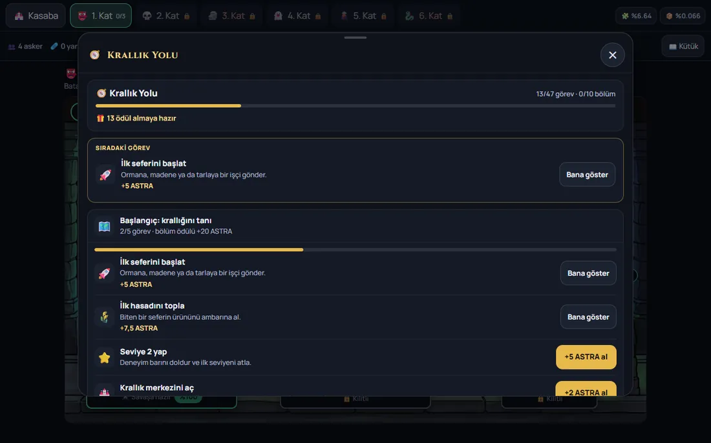
- 10 bölüm: krallığı tanı, üretim, köy, pazar, ordu, Demirhane, zindan, Kolezyum ve Karnaval, Konsey ve hazine, hesap ve ilerleme.
- Her görevin ve her bölümün ASTRA ödülü vardır; tüm bölümleri bitirince "Krallık Yolu Fatihi" ödülü açılır.
- Hesap başına toplam ödül sınırlıdır (en çok 994 ASTRA); bu bir hoş geldin hediyesidir.
- "Hazır" yazan ödülü Ben → Rehber ve yardım (Krallık Yolu) ekranından alırsın.
Ayarlar, bildirimler, tur ve ara-git
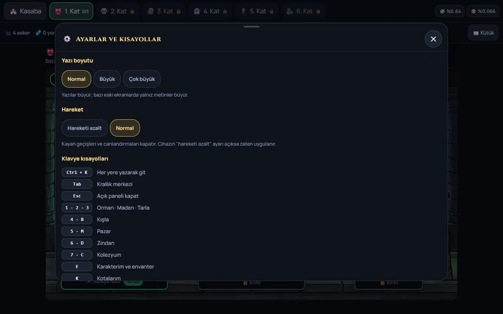
- ⚙️ Ayarlar: yazı boyutu (Normal, Büyük, Çok büyük) ve "hareketi azalt" seçeneği.
- 🔔 Bildirimler: sefer bitti, görev tamamlandı, ödül hazır gibi olaylar. Telefonda "⋯" menüsündedir.
- 📜 "Sen yokken olanlar": oyuna uzun bir aradan sonra dönünce açılan rapor; seferlerin, botun ve kasaların bu sürede ne yaptığını özetler.
- 🎓 Oyun turu: oyunu baştan adım adım tanıtan tur; Ben → Oyun turu ile istediğin zaman yeniden başlatırsın.
- 🔎 Ara ve git: Ctrl+K ile açılır; ekran adını yaz, oraya git.
- ℹ️ Duyurular: önemli uyarılar ve bilgilendirmeler.
- 📜 Sürüm geçmişi: oyunda neler değiştiğinin listesi.
Sık sorulan sorular
Seferim bitti ama hammadde ambarıma gelmedi, neden?
Alet "yıpranmış" diyor, ne yapmalıyım?
Seviye atlayamıyorum, XP'm yeterli.
Zindanda kaybettim, ne olur?
Çarkı çevirmek kazandırır mı?
ASTRA'mı nasıl çekerim?
Hesabıma başkası girerse?
Oyun yavaş, ne yapabilirim?
Bot beni zengin eder mi?
Sözlük
- ASTRA
- Oyunun parası.
- AMM / takas havuzu
- Alıcı ve satıcı aramadan, havuzdaki miktara bakarak fiyat belirleyen pazar. Çok alınan pahalanır, çok satılan ucuzlar.
- Harç
- Her alım-satımdan kesilen küçük pay. Hammaddenin bir kısmı yakılır, ASTRA kısmı kasalara gider.
- Yakım
- Bir şeyin oyundan sonsuza dek silinmesi. Azalan miktar, kalanın değerini korumaya yardım eder.
- Geri alım
- Hazinenin, fiyatı düşen hammaddeyi piyasadan satın alıp yakması.
- Kasa
- Oyunun ASTRA biriktirdiği ve belirli amaçlarla dağıttığı ortak havuzlardan biri.
- Kota
- Belirli bir sürede yapabileceğin işin üst sınırı.
- Üretim hakkı
- Bir haftada çıkarabileceğin hammadde payı. Herkesin payı toplam kapasiteye göre ayarlanır.
- Dengeleyici (termostat)
- Hızlı kazanıldığında ödülü yavaşlatan, yavaşken hızlandıran ayar; kasalar uzun dayansın diye.
- Temel gelir (UBI)
- Her hafta ortak kasadan aktif oyunculara dağıtılan ASTRA.
- Stamina
- Sefere çıkmak için gereken enerji. Buğdayla ya da zamanla dolar.
- Silo
- Hammaddelerini sakladığın depo. Dolunca biten seferlerin ürünü yer açılana kadar seferde bekler.
- Kapı
- Oyuna katılan hesap sayısı sınırlıdır; yer açılana kadar bekleme sırası vardır.
- Emek puanı
- Köylülerinin ürettiği puan; Konsey projelerinde kullanılır.
- Muhafız Mührü
- İki adımlı doğrulama: şifreye ek olarak telefondaki 6 haneli kod.
- Oyun Kasası
- Sen yokken çalışan işlerin ücretini ödemek için kullanılan, sana ait küçük bakiye.
- Genesis NFT
- 18 eseri bulup uyandıran, şartları tamamlayan ve ekosisteme 3 yıllık ayrıcalık maliyetini önden ödeyen oyuncunun basabildiği numaralı NFT; trade uygulamasında süresiz Uydu, Universe'te gezegen hakkı gibi ayrıcalıklar verir.
Realm of AdAstra Oyun Rehberi · Bu sayfa oyunun kendisi gibi güncellenir. Eksik ya da yanlış bir şey görürsen yönetime haber ver.